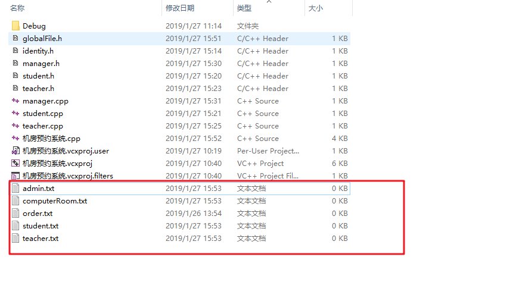
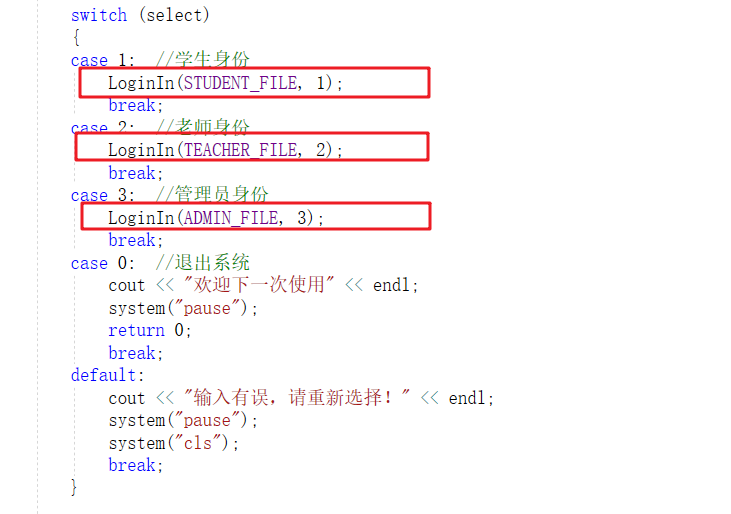
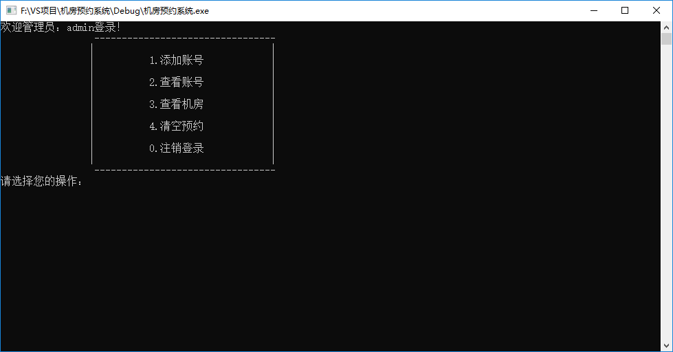
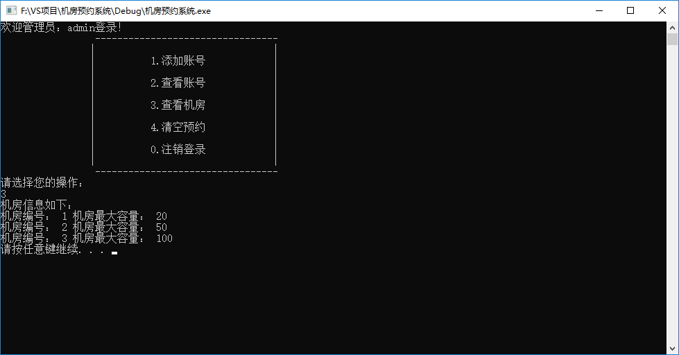
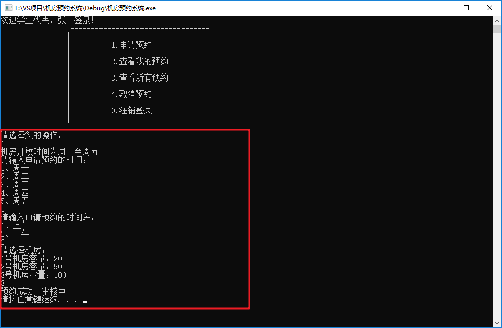
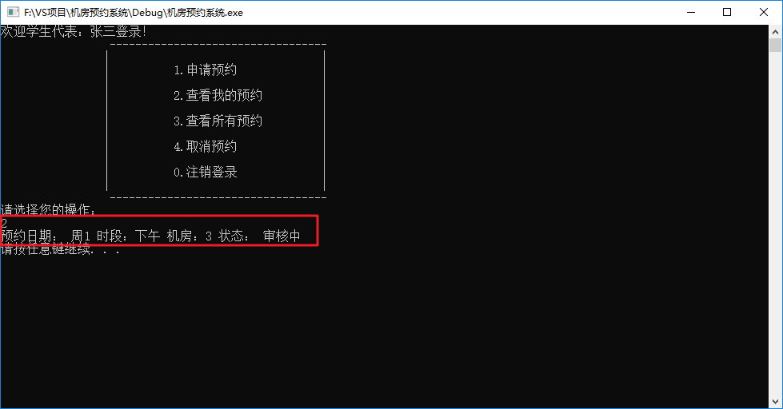
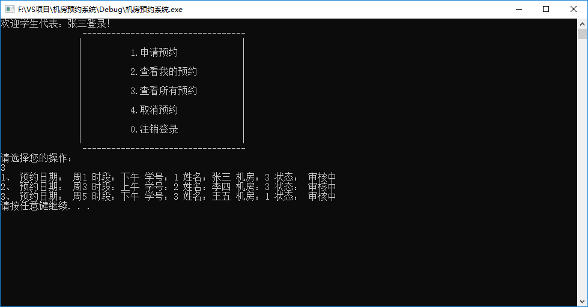

<!DOCTYPE html>
<html lang="zh-CN">
<head><meta name="generator" content="Hexo 3.9.0">
  <meta charset="utf-8">
  <meta content="width=device-width, initial-scale=1.0, maximum-scale=1.0, user-scalable=0" name="viewport">
  
  <title itemprop="name">机房预约系统 | APingStudio</title>
  
    <link rel="shortcut icon" href="/images/img1.png">
  
  <meta http-equiv="x-dns-prefetch-control" content="on">
  <link rel="stylesheet" href="https://fonts.googleapis.com/css?family=Noto+SerifMerriweather|Merriweather+Sans|Source+Code+Pro|Ubuntu:400,700|Noto+Serif+SC" media="all">
  <link rel="dns-prefetch" href="//cdn.jsdelivr.net">
  <link rel="stylesheet" id="saukra_css-css" href="/css/style.css" type="text/css" media="all">
  <link rel="stylesheet" href="/css/lib.min.css" media="all">
  <link rel="stylesheet" href="/css/font.css" media="all">
  <link rel="stylesheet" href="/css/insight.css" media="all">
  <link rel="stylesheet" href="/css/jquery.fancybox.min.css" media="all">
  <link rel="stylesheet" href="/css/zoom.css" media="all">
  <link rel="stylesheet" type="text/css" href="/css/sharejs.css">
<!--   <link rel="stylesheet" id="saukra_css-css" href="https://2heng.xin/wp-content/cache/autoptimize/css/autoptimize_ad42a61f4c7d4bdd9f91afcff6b5dda5.css
" type="text/css" media="all"> -->
  <script>
  /*Initial Variables*/
  var mashiro_option = new Object();
  var mashiro_global = new Object();
  mashiro_option.NProgressON = true;
  /* 
   * 邮箱信息之类的东西可以填在这里，这些js变量基本都作用于sakura-app.js
   * 这样的设置仅是为了方便在基于PHP开发的主题中设置js变量，既然移植到了Node上，我想或许可以精简这一逻辑吧
   */
  mashiro_option.email_domain = "";
  mashiro_option.email_name = "";
  mashiro_option.cookie_version_control = "";
  mashiro_option.qzone_autocomplete = false;
  mashiro_option.site_name = "一咻工作室APingStudio";
  mashiro_option.author_name = "APingStudio";
  mashiro_option.site_url = "https://space.bilibili.com/331466888";
  mashiro_option.v_appId = "DdsMXpMXVU9txs2JImBoeySP-gzGzoHsz";
  mashiro_option.v_appKey = "Lwl1hTpDKgcYhvil6DWs7zoY";
  mashiro_option.mathjax = "1";
  mashiro_option.qq_api_url = "https://api.mashiro.top/qqinfo/"; 
  mashiro_option.qq_avatar_api_url = "https://api.mashiro.top/qqinfo/";

  // mashiro_option.jsdelivr_css_src = "https://cdn.jsdelivr.net/gh/moezx/cdn@3.4.5/css/lib.min.css";
  // mashiro_option.float_player_on = true;

  /*End of Initial Variables*/
  </script>
  <script type="text/javascript">
  var bg = "https://i.loli.net/2021/02/11/dFGIORg7k5VX9ha.jpg,https://i.loli.net/2021/02/11/x7ietRWXqHjLDy5.jpg,https://i.loli.net/2021/02/11/FgY4QpaLNSuvKce.jpg,https://i.loli.net/2021/02/11/32ZJYQhuV19sfgF.jpg,https://i.loli.net/2021/02/11/t2uDVHCXspacGgd.jpg".split(",");
  var bgindex = Math.floor(Math.random()*bg.length);
  if (!!window.ActiveXObject || "ActiveXObject" in window) { //is IE?
    alert('朋友，IE浏览器未适配哦~');
  }
  </script>
  <style type="text/css">
  .hljs-ln{border-collapse:collapse}.hljs-ln td{padding:0}.hljs-ln-n:before{content:attr(data-line-number)}
  </style>
  <style type="text/css">.site-top .lower nav{display:block !important;}.author-profile i,.post-like a,.post-share .show-share,.sub-text,.we-info a,span.sitename,.post-more i:hover,#pagination a:hover,.post-content a:hover,.float-content i:hover{color:#FE9600}.feature i,.download,.navigator i:hover,.links ul li:before,.ar-time i,span.ar-circle,.object,.comment .comment-reply-link,.siren-checkbox-radio:checked + .siren-checkbox-radioInput:after{background:#FE9600}::-webkit-scrollbar-thumb{background:#FE9600}.download,.navigator i:hover,.link-title,.links ul li:hover,#pagination a:hover,.comment-respond input[type='submit']:hover{border-color:#FE9600}.entry-content a:hover,.site-info a:hover,.comment h4 a,#comments-navi a.prev,#comments-navi a.next,.comment h4 a:hover,.site-top ul li a:hover,.entry-title a:hover,#archives-temp h3,span.page-numbers.current,.sorry li a:hover,.site-title a:hover,i.iconfont.js-toggle-search.iconsearch:hover,.comment-respond input[type='submit']:hover{color:#FE9600}.comments .comments-main{display:block !important;}.comments .comments-hidden{display:none !important;}background-position:center center;background-attachment:inherit;}
  </style>
</head>
</html>
<body class="page-template page-template-user page-template-page-analytics page-template-userpage-analytics-php page page-id-1297 chinese-font serif isWebKit">
  <div class="scrollbar" id="bar">
  </div>
  <a href="#" class="cd-top faa-float animated"></a>
  <section id="main-container">
    <div class="headertop filter-grid">
  <div id="banner_wave_1"></div>
  <div id="banner_wave_2"></div>
  <figure id="centerbg" class="centerbg">
    <div class="focusinfo no-select">
      <div class="header-tou">
        <a href="https://space.bilibili.com/331466888">
          
        </a>
      </div>
      <div class="header-info">
        <p>Live your life with passion! With some drive!</p>
        <div class="top-social_v2">
          <li id="bg-pre">
            
          </li>
          
            
              
                <li>
                  <a href="https://github.com/nerdsman" target="_blank" class="social-github" title="github">
                    
                  </a>
                </li>
              
            
              
                <li>
                  <a href="https://www.zhihu.com/people/lu-tao-85-50" target="_blank" class="social-github" title="zhihu">
                    
                  </a>
                </li>
              
            
              
                <li class="wechat">
                  <a href="/#">
                    
                  </a>
                  <div class="wechatInner">
                    
                  </div>
                </li>
              
            
          
          <li id="bg-next">
            
          </li>
        </div>
      </div>
    </div>
  </figure>
  <div id="video-container" style="">
    <video style="object-fit: fill" id="bgvideo" class="video" video-name="" src="" width="auto" preload="auto">
    </video>
    <div id="video-btn" class="loadvideo videolive">
    </div>
    <div id="video-add">
    </div>
    <div class="video-stu">
    </div>
  </div>
  <div class="headertop-down faa-float animated" onclick="headertop_down()">
    <span>
      <i class="fa fa-chevron-down" aria-hidden="true">
      </i>
    </span>
  </div>
</div>
    <div id="page" class="site wrapper">
      <header class="site-header no-select gizle sabit" role="banner">
  <div class="site-top">
    <div class="site-branding">
      <span class="site-title">
        <span class="logolink moe-mashiro">
          <a href="/">
            <span class="sakurasono">一咻工作室</span>
            <span class="shironeko">APingStudio</span>
          </a>
        </span>
      </span>
    </div>
    <div class="searchbox search-form-submit">
      <i class="iconfont js-toggle-search iconsearch icon-search">
      </i>
    </div>
    <div id="show-nav" class="showNav mobile-fit">
      <div class="line line1">
      </div>
      <div class="line line2">
      </div>
      <div class="line line3">
      </div>
    </div>
    <div class="lower-cantiner">
      <div class="lower">
        <nav class="mobile-fit-control hide">
          <ul id="menu-new" class="menu">
            
              <li>
                <a href="/">
                  <span class="faa-parent animated-hover">
                    <i class="fa  fa-fort-awesome faa-shake" aria-hidden="true"></i>
                    首页
                  </span>
                </a>
                
              </li>
            
              <li>
                <a href="/archives">
                  <span class="faa-parent animated-hover">
                    <i class="fa  fa-archive faa-shake" aria-hidden="true"></i>
                    归档
                  </span>
                </a>
                
                  <ul class="sub-menu">
                    
                      <li>
                        <a href="/categories/技术/">
                          <i class="fa fa-code" aria-hidden="true"></i>
                          技术
                        </a>
                      </li>
                    
                      <li>
                        <a href="/categories/生活/">
                          <i class="fa fa-file-text-o" aria-hidden="true"></i>
                          生活
                        </a>
                      </li>
                    
                      <li>
                        <a href="/materials/">
                          <i class="fa fa-cloud-download" aria-hidden="true"></i>
                          资源
                        </a>
                      </li>
                    
                      <li>
                        <a href="/categories/随想/">
                          <i class="fa fa-commenting-o" aria-hidden="true"></i>
                          随想
                        </a>
                      </li>
                    
                      <li>
                        <a href="/categories/转载/">
                          <i class="fa fa-book" aria-hidden="true"></i>
                          转载
                        </a>
                      </li>
                    
                  </ul>
                
              </li>
            
              <li>
                <a href="javascript:;">
                  <span class="faa-parent animated-hover">
                    <i class="fa  fa-list-ul faa-vertical" aria-hidden="true"></i>
                    清单
                  </span>
                </a>
                
                  <ul class="sub-menu">
                    
                      <li>
                        <a href="/tags/悦读/">
                          <i class="fa fa-th-list faa-bounce" aria-hidden="true"></i>
                          书单
                        </a>
                      </li>
                    
                      <li>
                        <a href="/bangumi/">
                          <i class="fa fa-film faa-vertical" aria-hidden="true"></i>
                          番组
                        </a>
                      </li>
                    
                      <li>
                        <a href="/music/">
                          <i class="fa fa-headphones" aria-hidden="true"></i>
                          歌单
                        </a>
                      </li>
                    
                      <li>
                        <a href="/tags/图集/">
                          <i class="fa fa-photo" aria-hidden="true"></i>
                          图集
                        </a>
                      </li>
                    
                  </ul>
                
              </li>
            
              <li>
                <a href="/comment/">
                  <span class="faa-parent animated-hover">
                    <i class="fa  fa-pencil-square-o faa-tada" aria-hidden="true"></i>
                    留言板
                  </span>
                </a>
                
              </li>
            
              <li>
                <a href="/links/">
                  <span class="faa-parent animated-hover">
                    <i class="fa  fa-link faa-shake" aria-hidden="true"></i>
                    友人帐
                  </span>
                </a>
                
              </li>
            
              <li>
                <a href="/donate/">
                  <span class="faa-parent animated-hover">
                    <i class="fa  fa-heart faa-pulse" aria-hidden="true"></i>
                    赞赏
                  </span>
                </a>
                
              </li>
            
              <li>
                <a href="/">
                  <span class="faa-parent animated-hover">
                    <i class="fa  fa-leaf faa-wrench" aria-hidden="true"></i>
                    关于
                  </span>
                </a>
                
                  <ul class="sub-menu">
                    
                      <li>
                        <a href="/about/">
                          <i class="fa fa-meetup" aria-hidden="true"></i>
                          我？
                        </a>
                      </li>
                    
                      <li>
                        <a href="/theme-sakura/">
                          <i class="fa iconfont icon-sakura" aria-hidden="true"></i>
                          主题
                        </a>
                      </li>
                    
                      <li>
                        <a href="/lab/">
                          <i class="fa fa-cogs" aria-hidden="true"></i>
                          Lab
                        </a>
                      </li>
                    
                  </ul>
                
              </li>
            
          </ul>
        </nav>
      </div>
    </div>
  </div>
</header>

      <link rel="stylesheet" type="text/css" href="/css/sharejs.css">
<link rel="stylesheet" href="https://cdnjs.cloudflare.com/ajax/libs/tocbot/4.4.2/tocbot.css">
<div class="pattern-center-blank"></div>

<div id="content" class="site-content">
  <div id="primary" class="content-area">
    <main id="main" class="site-main" role="main">
      <article id="post-1" class="post-1 post type-post status-publish format-standard has-post-thumbnail hentry category-uncategorized">
        <div class="toc"></div>
        <!--<div class="toc-entry-content"><!-- 套嵌目录使用（主要为了支援评论）-->
        
          <header class="entry-header">
            <h1 class="entry-title">机房预约系统</h1>
            <p class="entry-census">&nbsp;·&nbsp;2021-2-3&nbsp;·&nbsp;<span id="busuanzi_value_page_pv"></span>次阅读</p></p>

            <hr>
          </header>
        
        <div class="entry-content">
          <h1 id="机房预约系统"><a href="#机房预约系统" class="headerlink" title="机房预约系统"></a>机房预约系统</h1><h2 id="1、机房预约系统需求"><a href="#1、机房预约系统需求" class="headerlink" title="1、机房预约系统需求"></a>1、机房预约系统需求</h2><h3 id="1-1-系统简介"><a href="#1-1-系统简介" class="headerlink" title="1.1 系统简介"></a>1.1 系统简介</h3><ul>
<li>学校现有几个规格不同的机房，由于使用时经常出现”撞车”现象,现开发一套机房预约系统，解决这一问题。</li>
</ul>
<p></p>
<h3 id="1-2-身份简介"><a href="#1-2-身份简介" class="headerlink" title="1.2 身份简介"></a>1.2 身份简介</h3><p>分别有三种身份使用该程序</p>
<ul>
<li><strong>学生代表</strong>：申请使用机房</li>
<li><strong>教师</strong>：审核学生的预约申请</li>
<li><strong>管理员</strong>：给学生、教师创建账号</li>
</ul>
<h3 id="1-3-机房简介"><a href="#1-3-机房简介" class="headerlink" title="1.3 机房简介"></a>1.3 机房简介</h3><p>机房总共有3间</p>
<ul>
<li>1号机房   — 最大容量20人</li>
<li>2号机房   — 最多容量50人</li>
<li>3号机房   — 最多容量100人</li>
</ul>
<h3 id="1-4-申请简介"><a href="#1-4-申请简介" class="headerlink" title="1.4 申请简介"></a>1.4 申请简介</h3><ul>
<li>申请的订单每周由管理员负责清空。</li>
<li>学生可以预约未来一周内的机房使用，预约的日期为周一至周五，预约时需要选择预约时段（上午、下午）</li>
<li>教师来审核预约，依据实际情况审核预约通过或者不通过</li>
</ul>
<h3 id="1-5-系统具体需求"><a href="#1-5-系统具体需求" class="headerlink" title="1.5 系统具体需求"></a>1.5 系统具体需求</h3><ul>
<li>首先进入登录界面，可选登录身份有：<ul>
<li>学生代表</li>
<li>老师</li>
<li>管理员</li>
<li>退出</li>
</ul>
</li>
<li>每个身份都需要进行验证后，进入子菜单<ul>
<li>学生需要输入 ：学号、姓名、登录密码</li>
<li>老师需要输入：职工号、姓名、登录密码</li>
<li>管理员需要输入：管理员姓名、登录密码</li>
</ul>
</li>
<li>学生具体功能<ul>
<li>申请预约    —   预约机房</li>
<li>查看自身的预约    —  查看自己的预约状态</li>
<li>查看所有预约   —   查看全部预约信息以及预约状态</li>
<li>取消预约    —   取消自身的预约，预约成功或审核中的预约均可取消</li>
<li>注销登录    —   退出登录</li>
</ul>
</li>
<li>教师具体功能<ul>
<li>查看所有预约   —   查看全部预约信息以及预约状态</li>
<li>审核预约    —   对学生的预约进行审核</li>
<li>注销登录    —   退出登录</li>
</ul>
</li>
<li>管理员具体功能<ul>
<li>添加账号    —   添加学生或教师的账号，需要检测学生编号或教师职工号是否重复</li>
<li>查看账号    —   可以选择查看学生或教师的全部信息</li>
<li>查看机房    —   查看所有机房的信息</li>
<li>清空预约    —   清空所有预约记录</li>
<li>注销登录    —   退出登录</li>
</ul>
</li>
</ul>
<p></p>
<h2 id="2、创建项目"><a href="#2、创建项目" class="headerlink" title="2、创建项目"></a>2、创建项目</h2><p>创建项目步骤如下：</p>
<ul>
<li>创建新项目</li>
<li>添加文件</li>
</ul>
<h3 id="2-1-创建项目"><a href="#2-1-创建项目" class="headerlink" title="2.1 创建项目"></a>2.1 创建项目</h3><ul>
<li>打开vs2017后，点击创建新项目，创建新的C++项目</li>
</ul>
<p>如图：</p>
<p></p>
<ul>
<li>填写项目名称以及选取项目路径，点击确定生成项目</li>
</ul>
<p></p>
<h3 id="2-2-添加文件"><a href="#2-2-添加文件" class="headerlink" title="2.2 添加文件"></a>2.2 添加文件</h3><ul>
<li>右键源文件，进行添加文件操作</li>
</ul>
<p></p>
<ul>
<li>填写文件名称，点击添加</li>
</ul>
<p></p>
<ul>
<li>生成文件成功，效果如下图</li>
</ul>
<p></p>
<h2 id="3、创建主菜单"><a href="#3、创建主菜单" class="headerlink" title="3、创建主菜单"></a>3、创建主菜单</h2><p><strong>功能描述：</strong></p>
<ul>
<li>设计主菜单，与用户进行交互</li>
</ul>
<h3 id="3-1-菜单实现"><a href="#3-1-菜单实现" class="headerlink" title="3.1 菜单实现"></a>3.1 菜单实现</h3><ul>
<li>在主函数main中添加菜单提示，代码如下：</li>
</ul>
<figure class="highlight c++"><table><tr><td class="gutter"><pre><span class="line">1</span><br><span class="line">2</span><br><span class="line">3</span><br><span class="line">4</span><br><span class="line">5</span><br><span class="line">6</span><br><span class="line">7</span><br><span class="line">8</span><br><span class="line">9</span><br><span class="line">10</span><br><span class="line">11</span><br><span class="line">12</span><br><span class="line">13</span><br><span class="line">14</span><br><span class="line">15</span><br><span class="line">16</span><br><span class="line">17</span><br><span class="line">18</span><br><span class="line">19</span><br><span class="line">20</span><br><span class="line">21</span><br><span class="line">22</span><br></pre></td><td class="code"><pre><span class="line"><span class="function"><span class="keyword">int</span> <span class="title">main</span><span class="params">()</span> </span>&#123;</span><br><span class="line"></span><br><span class="line">	<span class="built_in">cout</span> &lt;&lt; <span class="string">"======================  欢迎来到传智播客机房预约系统  ====================="</span> </span><br><span class="line">         &lt;&lt; <span class="built_in">endl</span>;</span><br><span class="line">	<span class="built_in">cout</span> &lt;&lt; <span class="built_in">endl</span> &lt;&lt; <span class="string">"请输入您的身份"</span> &lt;&lt; <span class="built_in">endl</span>;</span><br><span class="line">	<span class="built_in">cout</span> &lt;&lt; <span class="string">"\t\t -------------------------------\n"</span>;</span><br><span class="line">	<span class="built_in">cout</span> &lt;&lt; <span class="string">"\t\t|                               |\n"</span>;</span><br><span class="line">	<span class="built_in">cout</span> &lt;&lt; <span class="string">"\t\t|          1.学生代表           |\n"</span>;</span><br><span class="line">	<span class="built_in">cout</span> &lt;&lt; <span class="string">"\t\t|                               |\n"</span>;</span><br><span class="line">	<span class="built_in">cout</span> &lt;&lt; <span class="string">"\t\t|          2.老    师           |\n"</span>;</span><br><span class="line">	<span class="built_in">cout</span> &lt;&lt; <span class="string">"\t\t|                               |\n"</span>;</span><br><span class="line">	<span class="built_in">cout</span> &lt;&lt; <span class="string">"\t\t|          3.管 理 员           |\n"</span>;</span><br><span class="line">	<span class="built_in">cout</span> &lt;&lt; <span class="string">"\t\t|                               |\n"</span>;</span><br><span class="line">	<span class="built_in">cout</span> &lt;&lt; <span class="string">"\t\t|          0.退    出           |\n"</span>;</span><br><span class="line">	<span class="built_in">cout</span> &lt;&lt; <span class="string">"\t\t|                               |\n"</span>;</span><br><span class="line">	<span class="built_in">cout</span> &lt;&lt; <span class="string">"\t\t -------------------------------\n"</span>;</span><br><span class="line">	<span class="built_in">cout</span> &lt;&lt; <span class="string">"输入您的选择: "</span>;</span><br><span class="line"></span><br><span class="line">	system(<span class="string">"pause"</span>);</span><br><span class="line"></span><br><span class="line">	<span class="keyword">return</span> <span class="number">0</span>;</span><br><span class="line">&#125;</span><br></pre></td></tr></table></figure>
<p>运行效果如图：</p>
<p></p>
<h3 id="3-2-搭建接口"><a href="#3-2-搭建接口" class="headerlink" title="3.2 搭建接口"></a>3.2 搭建接口</h3><ul>
<li>接受用户的选择，搭建接口</li>
<li>在main中添加代码</li>
</ul>
<figure class="highlight c++"><table><tr><td class="gutter"><pre><span class="line">1</span><br><span class="line">2</span><br><span class="line">3</span><br><span class="line">4</span><br><span class="line">5</span><br><span class="line">6</span><br><span class="line">7</span><br><span class="line">8</span><br><span class="line">9</span><br><span class="line">10</span><br><span class="line">11</span><br><span class="line">12</span><br><span class="line">13</span><br><span class="line">14</span><br><span class="line">15</span><br><span class="line">16</span><br><span class="line">17</span><br><span class="line">18</span><br><span class="line">19</span><br><span class="line">20</span><br><span class="line">21</span><br><span class="line">22</span><br><span class="line">23</span><br><span class="line">24</span><br><span class="line">25</span><br><span class="line">26</span><br><span class="line">27</span><br><span class="line">28</span><br><span class="line">29</span><br><span class="line">30</span><br><span class="line">31</span><br><span class="line">32</span><br><span class="line">33</span><br><span class="line">34</span><br><span class="line">35</span><br><span class="line">36</span><br><span class="line">37</span><br><span class="line">38</span><br><span class="line">39</span><br><span class="line">40</span><br><span class="line">41</span><br><span class="line">42</span><br><span class="line">43</span><br><span class="line">44</span><br><span class="line">45</span><br></pre></td><td class="code"><pre><span class="line"><span class="function"><span class="keyword">int</span> <span class="title">main</span><span class="params">()</span> </span>&#123;</span><br><span class="line"></span><br><span class="line">	<span class="keyword">int</span> select = <span class="number">0</span>;</span><br><span class="line"></span><br><span class="line">	<span class="keyword">while</span> (<span class="literal">true</span>)</span><br><span class="line">	&#123;</span><br><span class="line"></span><br><span class="line">		<span class="built_in">cout</span> &lt;&lt; <span class="string">"======================  欢迎来到传智播客机房预约系统  ====================="</span> &lt;&lt; <span class="built_in">endl</span>;</span><br><span class="line">		<span class="built_in">cout</span> &lt;&lt; <span class="built_in">endl</span> &lt;&lt; <span class="string">"请输入您的身份"</span> &lt;&lt; <span class="built_in">endl</span>;</span><br><span class="line">		<span class="built_in">cout</span> &lt;&lt; <span class="string">"\t\t -------------------------------\n"</span>;</span><br><span class="line">		<span class="built_in">cout</span> &lt;&lt; <span class="string">"\t\t|                               |\n"</span>;</span><br><span class="line">		<span class="built_in">cout</span> &lt;&lt; <span class="string">"\t\t|          1.学生代表           |\n"</span>;</span><br><span class="line">		<span class="built_in">cout</span> &lt;&lt; <span class="string">"\t\t|                               |\n"</span>;</span><br><span class="line">		<span class="built_in">cout</span> &lt;&lt; <span class="string">"\t\t|          2.老    师           |\n"</span>;</span><br><span class="line">		<span class="built_in">cout</span> &lt;&lt; <span class="string">"\t\t|                               |\n"</span>;</span><br><span class="line">		<span class="built_in">cout</span> &lt;&lt; <span class="string">"\t\t|          3.管 理 员           |\n"</span>;</span><br><span class="line">		<span class="built_in">cout</span> &lt;&lt; <span class="string">"\t\t|                               |\n"</span>;</span><br><span class="line">		<span class="built_in">cout</span> &lt;&lt; <span class="string">"\t\t|          0.退    出           |\n"</span>;</span><br><span class="line">		<span class="built_in">cout</span> &lt;&lt; <span class="string">"\t\t|                               |\n"</span>;</span><br><span class="line">		<span class="built_in">cout</span> &lt;&lt; <span class="string">"\t\t -------------------------------\n"</span>;</span><br><span class="line">		<span class="built_in">cout</span> &lt;&lt; <span class="string">"输入您的选择: "</span>;</span><br><span class="line"></span><br><span class="line">		<span class="built_in">cin</span> &gt;&gt; select; <span class="comment">//接受用户选择</span></span><br><span class="line"></span><br><span class="line">		<span class="keyword">switch</span> (select)</span><br><span class="line">		&#123;</span><br><span class="line">		<span class="keyword">case</span> <span class="number">1</span>:  <span class="comment">//学生身份</span></span><br><span class="line">			<span class="keyword">break</span>;</span><br><span class="line">		<span class="keyword">case</span> <span class="number">2</span>:  <span class="comment">//老师身份</span></span><br><span class="line">			<span class="keyword">break</span>;</span><br><span class="line">		<span class="keyword">case</span> <span class="number">3</span>:  <span class="comment">//管理员身份</span></span><br><span class="line">			<span class="keyword">break</span>;</span><br><span class="line">		<span class="keyword">case</span> <span class="number">0</span>:  <span class="comment">//退出系统</span></span><br><span class="line">			<span class="keyword">break</span>;</span><br><span class="line">		<span class="keyword">default</span>:</span><br><span class="line">             <span class="built_in">cout</span> &lt;&lt; <span class="string">"输入有误，请重新选择！"</span> &lt;&lt; <span class="built_in">endl</span>;</span><br><span class="line">		    system(<span class="string">"pause"</span>);</span><br><span class="line">			system(<span class="string">"cls"</span>);</span><br><span class="line">			<span class="keyword">break</span>;</span><br><span class="line">		&#125;</span><br><span class="line"></span><br><span class="line">	&#125;</span><br><span class="line">	system(<span class="string">"pause"</span>);</span><br><span class="line">	<span class="keyword">return</span> <span class="number">0</span>;</span><br><span class="line">&#125;</span><br></pre></td></tr></table></figure>
<p>测试，输入0、1、2、3会重新回到界面，输入其他提示输入有误，清屏后重新选择</p>
<p>效果如图：</p>
<p></p>
<p>至此，界面搭建完毕</p>
<h2 id="4、-退出功能实现"><a href="#4、-退出功能实现" class="headerlink" title="4、 退出功能实现"></a>4、 退出功能实现</h2><h3 id="4-1-退出功能实现"><a href="#4-1-退出功能实现" class="headerlink" title="4.1 退出功能实现"></a>4.1 退出功能实现</h3><p>在main函数分支 0 选项中，添加退出程序的代码：</p>
<figure class="highlight c++"><table><tr><td class="gutter"><pre><span class="line">1</span><br><span class="line">2</span><br><span class="line">3</span><br></pre></td><td class="code"><pre><span class="line"><span class="built_in">cout</span> &lt;&lt; <span class="string">"欢迎下一次使用"</span>&lt;&lt;<span class="built_in">endl</span>;</span><br><span class="line">system(<span class="string">"pause"</span>);</span><br><span class="line"><span class="keyword">return</span> <span class="number">0</span>;</span><br></pre></td></tr></table></figure>
<p></p>
<h3 id="4-2-测试退出功能"><a href="#4-2-测试退出功能" class="headerlink" title="4.2 测试退出功能"></a>4.2 测试退出功能</h3><p>运行程序，效果如图：</p>
<p></p>
<p>至此，退出程序功能实现</p>
<h2 id="5、-创建身份类"><a href="#5、-创建身份类" class="headerlink" title="5、 创建身份类"></a>5、 创建身份类</h2><h3 id="5-1-身份的基类"><a href="#5-1-身份的基类" class="headerlink" title="5.1 身份的基类"></a>5.1 身份的基类</h3><ul>
<li>在整个系统中，有三种身份，分别为：学生代表、老师以及管理员</li>
<li>三种身份有其共性也有其特性，因此我们可以将三种身份抽象出一个身份基类<strong>identity</strong></li>
<li>在头文件下创建Identity.h文件</li>
</ul>
<p>Identity.h中添加如下代码：</p>
<figure class="highlight c++"><table><tr><td class="gutter"><pre><span class="line">1</span><br><span class="line">2</span><br><span class="line">3</span><br><span class="line">4</span><br><span class="line">5</span><br><span class="line">6</span><br><span class="line">7</span><br><span class="line">8</span><br><span class="line">9</span><br><span class="line">10</span><br><span class="line">11</span><br><span class="line">12</span><br><span class="line">13</span><br><span class="line">14</span><br><span class="line">15</span><br></pre></td><td class="code"><pre><span class="line"><span class="meta">#<span class="meta-keyword">pragma</span> once</span></span><br><span class="line"><span class="meta">#<span class="meta-keyword">include</span><span class="meta-string">&lt;iostream&gt;</span></span></span><br><span class="line"><span class="keyword">using</span> <span class="keyword">namespace</span> <span class="built_in">std</span>;</span><br><span class="line"></span><br><span class="line"><span class="comment">//身份抽象类</span></span><br><span class="line"><span class="class"><span class="keyword">class</span> <span class="title">Identity</span></span></span><br><span class="line"><span class="class">&#123;</span></span><br><span class="line"><span class="keyword">public</span>:</span><br><span class="line"></span><br><span class="line">	<span class="comment">//操作菜单</span></span><br><span class="line">	<span class="function"><span class="keyword">virtual</span> <span class="keyword">void</span> <span class="title">operMenu</span><span class="params">()</span> </span>= <span class="number">0</span>;</span><br><span class="line"></span><br><span class="line">	<span class="built_in">string</span> m_Name; <span class="comment">//用户名</span></span><br><span class="line">	<span class="built_in">string</span> m_Pwd;  <span class="comment">//密码</span></span><br><span class="line">&#125;;</span><br></pre></td></tr></table></figure>
<p>效果如图：</p>
<p></p>
<h3 id="5-2-学生类"><a href="#5-2-学生类" class="headerlink" title="5.2 学生类"></a>5.2 学生类</h3><h4 id="5-2-1-功能分析"><a href="#5-2-1-功能分析" class="headerlink" title="5.2.1 功能分析"></a>5.2.1 功能分析</h4><ul>
<li><p>学生类主要功能是可以通过类中成员函数，实现预约实验室操作</p>
</li>
<li><p>学生类中主要功能有：</p>
<ul>
<li>显示学生操作的菜单界面</li>
<li>申请预约</li>
<li>查看自身预约</li>
<li>查看所有预约</li>
<li>取消预约</li>
</ul>
<p>​</p>
</li>
</ul>
<h4 id="5-2-2-类的创建"><a href="#5-2-2-类的创建" class="headerlink" title="5.2.2 类的创建"></a>5.2.2 类的创建</h4><ul>
<li>在头文件以及源文件下创建 student.h 和 student.cpp文件</li>
</ul>
<p>student.h中添加如下代码：</p>
<figure class="highlight c++"><table><tr><td class="gutter"><pre><span class="line">1</span><br><span class="line">2</span><br><span class="line">3</span><br><span class="line">4</span><br><span class="line">5</span><br><span class="line">6</span><br><span class="line">7</span><br><span class="line">8</span><br><span class="line">9</span><br><span class="line">10</span><br><span class="line">11</span><br><span class="line">12</span><br><span class="line">13</span><br><span class="line">14</span><br><span class="line">15</span><br><span class="line">16</span><br><span class="line">17</span><br><span class="line">18</span><br><span class="line">19</span><br><span class="line">20</span><br><span class="line">21</span><br><span class="line">22</span><br><span class="line">23</span><br><span class="line">24</span><br><span class="line">25</span><br><span class="line">26</span><br><span class="line">27</span><br><span class="line">28</span><br><span class="line">29</span><br><span class="line">30</span><br><span class="line">31</span><br><span class="line">32</span><br><span class="line">33</span><br><span class="line">34</span><br></pre></td><td class="code"><pre><span class="line"><span class="meta">#<span class="meta-keyword">pragma</span> once</span></span><br><span class="line"><span class="meta">#<span class="meta-keyword">include</span><span class="meta-string">&lt;iostream&gt;</span></span></span><br><span class="line"><span class="keyword">using</span> <span class="keyword">namespace</span> <span class="built_in">std</span>;</span><br><span class="line"><span class="meta">#<span class="meta-keyword">include</span> <span class="meta-string">"identity.h"</span></span></span><br><span class="line"></span><br><span class="line"><span class="comment">//学生类</span></span><br><span class="line"><span class="class"><span class="keyword">class</span> <span class="title">Student</span> :</span><span class="keyword">public</span> Identity</span><br><span class="line">&#123;</span><br><span class="line"><span class="keyword">public</span>:</span><br><span class="line">	<span class="comment">//默认构造</span></span><br><span class="line">	Student();</span><br><span class="line"></span><br><span class="line">	<span class="comment">//有参构造(学号、姓名、密码)</span></span><br><span class="line">	Student(<span class="keyword">int</span> id, <span class="built_in">string</span> name, <span class="built_in">string</span> pwd);</span><br><span class="line"></span><br><span class="line">	<span class="comment">//菜单界面</span></span><br><span class="line">	<span class="function"><span class="keyword">virtual</span> <span class="keyword">void</span> <span class="title">operMenu</span><span class="params">()</span></span>; </span><br><span class="line"></span><br><span class="line">	<span class="comment">//申请预约</span></span><br><span class="line">	<span class="function"><span class="keyword">void</span> <span class="title">applyOrder</span><span class="params">()</span></span>; </span><br><span class="line"></span><br><span class="line">	<span class="comment">//查看我的预约</span></span><br><span class="line">	<span class="function"><span class="keyword">void</span> <span class="title">showMyOrder</span><span class="params">()</span></span>; </span><br><span class="line"></span><br><span class="line">	<span class="comment">//查看所有预约</span></span><br><span class="line">	<span class="function"><span class="keyword">void</span> <span class="title">showAllOrder</span><span class="params">()</span></span>; </span><br><span class="line"></span><br><span class="line">	<span class="comment">//取消预约</span></span><br><span class="line">	<span class="function"><span class="keyword">void</span> <span class="title">cancelOrder</span><span class="params">()</span></span>;</span><br><span class="line">	</span><br><span class="line">	<span class="comment">//学生学号</span></span><br><span class="line">	<span class="keyword">int</span> m_Id;</span><br><span class="line"></span><br><span class="line">&#125;;</span><br></pre></td></tr></table></figure>
<p>student.cpp中添加如下代码：</p>
<figure class="highlight c++"><table><tr><td class="gutter"><pre><span class="line">1</span><br><span class="line">2</span><br><span class="line">3</span><br><span class="line">4</span><br><span class="line">5</span><br><span class="line">6</span><br><span class="line">7</span><br><span class="line">8</span><br><span class="line">9</span><br><span class="line">10</span><br><span class="line">11</span><br><span class="line">12</span><br><span class="line">13</span><br><span class="line">14</span><br><span class="line">15</span><br><span class="line">16</span><br><span class="line">17</span><br><span class="line">18</span><br><span class="line">19</span><br><span class="line">20</span><br><span class="line">21</span><br><span class="line">22</span><br><span class="line">23</span><br><span class="line">24</span><br><span class="line">25</span><br><span class="line">26</span><br><span class="line">27</span><br><span class="line">28</span><br><span class="line">29</span><br><span class="line">30</span><br><span class="line">31</span><br><span class="line">32</span><br><span class="line">33</span><br><span class="line">34</span><br><span class="line">35</span><br><span class="line">36</span><br><span class="line">37</span><br><span class="line">38</span><br><span class="line">39</span><br><span class="line">40</span><br></pre></td><td class="code"><pre><span class="line"><span class="meta">#<span class="meta-keyword">include</span> <span class="meta-string">"student.h"</span></span></span><br><span class="line"></span><br><span class="line"><span class="comment">//默认构造</span></span><br><span class="line">Student::Student()</span><br><span class="line">&#123;</span><br><span class="line">&#125;</span><br><span class="line"></span><br><span class="line"><span class="comment">//有参构造(学号、姓名、密码)</span></span><br><span class="line">Student::Student(<span class="keyword">int</span> id, <span class="built_in">string</span> name, <span class="built_in">string</span> pwd)</span><br><span class="line">&#123;</span><br><span class="line">&#125;</span><br><span class="line"></span><br><span class="line"><span class="comment">//菜单界面</span></span><br><span class="line"><span class="function"><span class="keyword">void</span> <span class="title">Student::operMenu</span><span class="params">()</span></span></span><br><span class="line"><span class="function"></span>&#123;</span><br><span class="line">&#125;</span><br><span class="line"></span><br><span class="line"><span class="comment">//申请预约</span></span><br><span class="line"><span class="function"><span class="keyword">void</span> <span class="title">Student::applyOrder</span><span class="params">()</span></span></span><br><span class="line"><span class="function"></span>&#123;</span><br><span class="line"></span><br><span class="line">&#125;</span><br><span class="line"></span><br><span class="line"><span class="comment">//查看我的预约</span></span><br><span class="line"><span class="function"><span class="keyword">void</span> <span class="title">Student::showMyOrder</span><span class="params">()</span></span></span><br><span class="line"><span class="function"></span>&#123;</span><br><span class="line"></span><br><span class="line">&#125;</span><br><span class="line"></span><br><span class="line"><span class="comment">//查看所有预约</span></span><br><span class="line"><span class="function"><span class="keyword">void</span> <span class="title">Student::showAllOrder</span><span class="params">()</span></span></span><br><span class="line"><span class="function"></span>&#123;</span><br><span class="line"></span><br><span class="line">&#125;</span><br><span class="line"></span><br><span class="line"><span class="comment">//取消预约</span></span><br><span class="line"><span class="function"><span class="keyword">void</span> <span class="title">Student::cancelOrder</span><span class="params">()</span></span></span><br><span class="line"><span class="function"></span>&#123;</span><br><span class="line"></span><br><span class="line">&#125;</span><br></pre></td></tr></table></figure>
<h3 id="5-3-老师类"><a href="#5-3-老师类" class="headerlink" title="5.3 老师类"></a>5.3 老师类</h3><h4 id="5-3-1-功能分析"><a href="#5-3-1-功能分析" class="headerlink" title="5.3.1 功能分析"></a>5.3.1 功能分析</h4><ul>
<li><p>教师类主要功能是查看学生的预约，并进行审核</p>
</li>
<li><p>教师类中主要功能有：</p>
<ul>
<li><p>显示教师操作的菜单界面</p>
</li>
<li><p>查看所有预约</p>
</li>
<li><p>审核预约</p>
<p>​</p>
</li>
</ul>
</li>
</ul>
<h4 id="5-3-2-类的创建"><a href="#5-3-2-类的创建" class="headerlink" title="5.3.2 类的创建"></a>5.3.2 类的创建</h4><ul>
<li>在头文件以及源文件下创建 teacher.h 和 teacher.cpp文件</li>
</ul>
<p>teacher.h中添加如下代码：</p>
<figure class="highlight c++"><table><tr><td class="gutter"><pre><span class="line">1</span><br><span class="line">2</span><br><span class="line">3</span><br><span class="line">4</span><br><span class="line">5</span><br><span class="line">6</span><br><span class="line">7</span><br><span class="line">8</span><br><span class="line">9</span><br><span class="line">10</span><br><span class="line">11</span><br><span class="line">12</span><br><span class="line">13</span><br><span class="line">14</span><br><span class="line">15</span><br><span class="line">16</span><br><span class="line">17</span><br><span class="line">18</span><br><span class="line">19</span><br><span class="line">20</span><br><span class="line">21</span><br><span class="line">22</span><br><span class="line">23</span><br><span class="line">24</span><br><span class="line">25</span><br><span class="line">26</span><br><span class="line">27</span><br><span class="line">28</span><br></pre></td><td class="code"><pre><span class="line"><span class="meta">#<span class="meta-keyword">pragma</span> once</span></span><br><span class="line"><span class="meta">#<span class="meta-keyword">define</span> _CRT_SECURE_NO_WARNINGS</span></span><br><span class="line"><span class="meta">#<span class="meta-keyword">include</span><span class="meta-string">&lt;iostream&gt;</span></span></span><br><span class="line"><span class="keyword">using</span> <span class="keyword">namespace</span> <span class="built_in">std</span>;</span><br><span class="line"><span class="meta">#<span class="meta-keyword">include</span> <span class="meta-string">"identity.h"</span></span></span><br><span class="line"></span><br><span class="line"><span class="class"><span class="keyword">class</span> <span class="title">Teacher</span> :</span><span class="keyword">public</span> Identity</span><br><span class="line">&#123;</span><br><span class="line"><span class="keyword">public</span>:</span><br><span class="line"></span><br><span class="line">	<span class="comment">//默认构造</span></span><br><span class="line">	Teacher();</span><br><span class="line"></span><br><span class="line">	<span class="comment">//有参构造 (职工编号，姓名，密码)</span></span><br><span class="line">	Teacher(<span class="keyword">int</span> empId, <span class="built_in">string</span> name, <span class="built_in">string</span> pwd);</span><br><span class="line"></span><br><span class="line">	<span class="comment">//菜单界面</span></span><br><span class="line">	<span class="function"><span class="keyword">virtual</span> <span class="keyword">void</span> <span class="title">operMenu</span><span class="params">()</span></span>;</span><br><span class="line"></span><br><span class="line">	<span class="comment">//查看所有预约</span></span><br><span class="line">	<span class="function"><span class="keyword">void</span> <span class="title">showAllOrder</span><span class="params">()</span></span>; </span><br><span class="line"></span><br><span class="line">	<span class="comment">//审核预约</span></span><br><span class="line">	<span class="function"><span class="keyword">void</span> <span class="title">validOrder</span><span class="params">()</span></span>; </span><br><span class="line"></span><br><span class="line">	<span class="keyword">int</span> m_EmpId; <span class="comment">//教师编号</span></span><br><span class="line"></span><br><span class="line">&#125;;</span><br></pre></td></tr></table></figure>
<ul>
<li>teacher.cpp中添加如下代码:</li>
</ul>
<figure class="highlight c++"><table><tr><td class="gutter"><pre><span class="line">1</span><br><span class="line">2</span><br><span class="line">3</span><br><span class="line">4</span><br><span class="line">5</span><br><span class="line">6</span><br><span class="line">7</span><br><span class="line">8</span><br><span class="line">9</span><br><span class="line">10</span><br><span class="line">11</span><br><span class="line">12</span><br><span class="line">13</span><br><span class="line">14</span><br><span class="line">15</span><br><span class="line">16</span><br><span class="line">17</span><br><span class="line">18</span><br><span class="line">19</span><br><span class="line">20</span><br><span class="line">21</span><br><span class="line">22</span><br><span class="line">23</span><br><span class="line">24</span><br><span class="line">25</span><br><span class="line">26</span><br></pre></td><td class="code"><pre><span class="line"><span class="meta">#<span class="meta-keyword">include</span><span class="meta-string">"teacher.h"</span></span></span><br><span class="line"></span><br><span class="line"><span class="comment">//默认构造</span></span><br><span class="line">Teacher::Teacher()</span><br><span class="line">&#123;</span><br><span class="line">&#125;</span><br><span class="line"></span><br><span class="line"><span class="comment">//有参构造 (职工编号，姓名，密码)</span></span><br><span class="line">Teacher::Teacher(<span class="keyword">int</span> empId, <span class="built_in">string</span> name, <span class="built_in">string</span> pwd)</span><br><span class="line">&#123;</span><br><span class="line">&#125;</span><br><span class="line"></span><br><span class="line"><span class="comment">//菜单界面</span></span><br><span class="line"><span class="function"><span class="keyword">void</span> <span class="title">Teacher::operMenu</span><span class="params">()</span></span></span><br><span class="line"><span class="function"></span>&#123;</span><br><span class="line">&#125;</span><br><span class="line"></span><br><span class="line"><span class="comment">//查看所有预约</span></span><br><span class="line"><span class="function"><span class="keyword">void</span> <span class="title">Teacher::showAllOrder</span><span class="params">()</span></span></span><br><span class="line"><span class="function"></span>&#123;</span><br><span class="line">&#125;</span><br><span class="line"></span><br><span class="line"><span class="comment">//审核预约</span></span><br><span class="line"><span class="function"><span class="keyword">void</span> <span class="title">Teacher::validOrder</span><span class="params">()</span></span></span><br><span class="line"><span class="function"></span>&#123;</span><br><span class="line">&#125;</span><br></pre></td></tr></table></figure>
<h3 id="5-4-管理员类"><a href="#5-4-管理员类" class="headerlink" title="5.4 管理员类"></a>5.4 管理员类</h3><h4 id="5-4-1-功能分析"><a href="#5-4-1-功能分析" class="headerlink" title="5.4.1 功能分析"></a>5.4.1 功能分析</h4><ul>
<li><p>管理员类主要功能是对学生和老师账户进行管理，查看机房信息以及清空预约记录</p>
</li>
<li><p>管理员类中主要功能有：</p>
<ul>
<li><p>显示管理员操作的菜单界面</p>
</li>
<li><p>添加账号</p>
</li>
<li><p>查看账号</p>
</li>
<li><p>查看机房信息</p>
</li>
<li><p>清空预约记录</p>
<p>​</p>
</li>
</ul>
</li>
</ul>
<h4 id="5-4-2-类的创建"><a href="#5-4-2-类的创建" class="headerlink" title="5.4.2 类的创建"></a>5.4.2 类的创建</h4><ul>
<li>在头文件以及源文件下创建 manager.h 和 manager.cpp文件</li>
</ul>
<p>manager.h中添加如下代码：</p>
<figure class="highlight c++"><table><tr><td class="gutter"><pre><span class="line">1</span><br><span class="line">2</span><br><span class="line">3</span><br><span class="line">4</span><br><span class="line">5</span><br><span class="line">6</span><br><span class="line">7</span><br><span class="line">8</span><br><span class="line">9</span><br><span class="line">10</span><br><span class="line">11</span><br><span class="line">12</span><br><span class="line">13</span><br><span class="line">14</span><br><span class="line">15</span><br><span class="line">16</span><br><span class="line">17</span><br><span class="line">18</span><br><span class="line">19</span><br><span class="line">20</span><br><span class="line">21</span><br><span class="line">22</span><br><span class="line">23</span><br><span class="line">24</span><br><span class="line">25</span><br><span class="line">26</span><br><span class="line">27</span><br><span class="line">28</span><br><span class="line">29</span><br><span class="line">30</span><br><span class="line">31</span><br></pre></td><td class="code"><pre><span class="line"><span class="meta">#<span class="meta-keyword">pragma</span> once</span></span><br><span class="line"><span class="meta">#<span class="meta-keyword">include</span><span class="meta-string">&lt;iostream&gt;</span></span></span><br><span class="line"><span class="keyword">using</span> <span class="keyword">namespace</span> <span class="built_in">std</span>;</span><br><span class="line"><span class="meta">#<span class="meta-keyword">include</span> <span class="meta-string">"identity.h"</span></span></span><br><span class="line"></span><br><span class="line"><span class="class"><span class="keyword">class</span> <span class="title">Manager</span> :</span><span class="keyword">public</span> Identity</span><br><span class="line">&#123;</span><br><span class="line"><span class="keyword">public</span>:</span><br><span class="line"></span><br><span class="line">	<span class="comment">//默认构造</span></span><br><span class="line">	Manager();</span><br><span class="line"></span><br><span class="line">	<span class="comment">//有参构造  管理员姓名，密码</span></span><br><span class="line">	Manager(<span class="built_in">string</span> name, <span class="built_in">string</span> pwd);</span><br><span class="line"></span><br><span class="line">	<span class="comment">//选择菜单</span></span><br><span class="line">	<span class="function"><span class="keyword">virtual</span> <span class="keyword">void</span> <span class="title">operMenu</span><span class="params">()</span></span>;</span><br><span class="line"></span><br><span class="line">	<span class="comment">//添加账号  </span></span><br><span class="line">	<span class="function"><span class="keyword">void</span> <span class="title">addPerson</span><span class="params">()</span></span>;</span><br><span class="line"></span><br><span class="line">	<span class="comment">//查看账号</span></span><br><span class="line">	<span class="function"><span class="keyword">void</span> <span class="title">showPerson</span><span class="params">()</span></span>;</span><br><span class="line"></span><br><span class="line">	<span class="comment">//查看机房信息</span></span><br><span class="line">	<span class="function"><span class="keyword">void</span> <span class="title">showComputer</span><span class="params">()</span></span>;</span><br><span class="line"></span><br><span class="line">	<span class="comment">//清空预约记录</span></span><br><span class="line">	<span class="function"><span class="keyword">void</span> <span class="title">cleanFile</span><span class="params">()</span></span>;</span><br><span class="line"></span><br><span class="line">&#125;;</span><br></pre></td></tr></table></figure>
<ul>
<li>manager.cpp中添加如下代码:</li>
</ul>
<figure class="highlight c++"><table><tr><td class="gutter"><pre><span class="line">1</span><br><span class="line">2</span><br><span class="line">3</span><br><span class="line">4</span><br><span class="line">5</span><br><span class="line">6</span><br><span class="line">7</span><br><span class="line">8</span><br><span class="line">9</span><br><span class="line">10</span><br><span class="line">11</span><br><span class="line">12</span><br><span class="line">13</span><br><span class="line">14</span><br><span class="line">15</span><br><span class="line">16</span><br><span class="line">17</span><br><span class="line">18</span><br><span class="line">19</span><br><span class="line">20</span><br><span class="line">21</span><br><span class="line">22</span><br><span class="line">23</span><br><span class="line">24</span><br><span class="line">25</span><br><span class="line">26</span><br><span class="line">27</span><br><span class="line">28</span><br><span class="line">29</span><br><span class="line">30</span><br><span class="line">31</span><br><span class="line">32</span><br><span class="line">33</span><br><span class="line">34</span><br><span class="line">35</span><br><span class="line">36</span><br></pre></td><td class="code"><pre><span class="line"><span class="meta">#<span class="meta-keyword">include</span> <span class="meta-string">"manager.h"</span></span></span><br><span class="line"></span><br><span class="line"><span class="comment">//默认构造</span></span><br><span class="line">Manager::Manager()</span><br><span class="line">&#123;</span><br><span class="line">&#125;</span><br><span class="line"></span><br><span class="line"><span class="comment">//有参构造</span></span><br><span class="line">Manager::Manager(<span class="built_in">string</span> name, <span class="built_in">string</span> pwd)</span><br><span class="line">&#123;</span><br><span class="line">&#125;</span><br><span class="line"></span><br><span class="line"><span class="comment">//选择菜单</span></span><br><span class="line"><span class="function"><span class="keyword">void</span> <span class="title">Manager::operMenu</span><span class="params">()</span></span></span><br><span class="line"><span class="function"></span>&#123;</span><br><span class="line">&#125;</span><br><span class="line"></span><br><span class="line"><span class="comment">//添加账号  </span></span><br><span class="line"><span class="function"><span class="keyword">void</span> <span class="title">Manager::addPerson</span><span class="params">()</span></span></span><br><span class="line"><span class="function"></span>&#123;</span><br><span class="line">&#125;</span><br><span class="line"></span><br><span class="line"><span class="comment">//查看账号</span></span><br><span class="line"><span class="function"><span class="keyword">void</span> <span class="title">Manager::showPerson</span><span class="params">()</span></span></span><br><span class="line"><span class="function"></span>&#123;</span><br><span class="line">&#125;</span><br><span class="line"></span><br><span class="line"><span class="comment">//查看机房信息</span></span><br><span class="line"><span class="function"><span class="keyword">void</span> <span class="title">Manager::showComputer</span><span class="params">()</span></span></span><br><span class="line"><span class="function"></span>&#123;</span><br><span class="line">&#125;</span><br><span class="line"></span><br><span class="line"><span class="comment">//清空预约记录</span></span><br><span class="line"><span class="function"><span class="keyword">void</span> <span class="title">Manager::cleanFile</span><span class="params">()</span></span></span><br><span class="line"><span class="function"></span>&#123;</span><br><span class="line">&#125;</span><br></pre></td></tr></table></figure>
<p>至此，所有身份类创建完毕，效果如图：</p>
<p></p>
<h2 id="6、-登录模块"><a href="#6、-登录模块" class="headerlink" title="6、  登录模块"></a>6、  登录模块</h2><h3 id="6-1-全局文件添加"><a href="#6-1-全局文件添加" class="headerlink" title="6.1 全局文件添加"></a>6.1 全局文件添加</h3><p>功能描述：</p>
<ul>
<li>不同的身份可能会用到不同的文件操作，我们可以将所有的文件名定义到一个全局的文件中</li>
<li>在头文件中添加 <strong>globalFile.h</strong> 文件</li>
<li>并添加如下代码：</li>
</ul>
<figure class="highlight c++"><table><tr><td class="gutter"><pre><span class="line">1</span><br><span class="line">2</span><br><span class="line">3</span><br><span class="line">4</span><br><span class="line">5</span><br><span class="line">6</span><br><span class="line">7</span><br><span class="line">8</span><br><span class="line">9</span><br><span class="line">10</span><br><span class="line">11</span><br><span class="line">12</span><br></pre></td><td class="code"><pre><span class="line"><span class="meta">#<span class="meta-keyword">pragma</span> once </span></span><br><span class="line"></span><br><span class="line"><span class="comment">//管理员文件</span></span><br><span class="line"><span class="meta">#<span class="meta-keyword">define</span> ADMIN_FILE     <span class="meta-string">"admin.txt"</span></span></span><br><span class="line"><span class="comment">//学生文件</span></span><br><span class="line"><span class="meta">#<span class="meta-keyword">define</span> STUDENT_FILE   <span class="meta-string">"student.txt"</span></span></span><br><span class="line"><span class="comment">//教师文件</span></span><br><span class="line"><span class="meta">#<span class="meta-keyword">define</span> TEACHER_FILE   <span class="meta-string">"teacher.txt"</span></span></span><br><span class="line"><span class="comment">//机房信息文件</span></span><br><span class="line"><span class="meta">#<span class="meta-keyword">define</span> COMPUTER_FILE  <span class="meta-string">"computerRoom.txt"</span></span></span><br><span class="line"><span class="comment">//订单文件</span></span><br><span class="line"><span class="meta">#<span class="meta-keyword">define</span> ORDER_FILE     <span class="meta-string">"order.txt"</span></span></span><br></pre></td></tr></table></figure>
<p>并且在同级目录下，创建这几个文件</p>
<p></p>
<h3 id="6-2-登录函数封装"><a href="#6-2-登录函数封装" class="headerlink" title="6.2  登录函数封装"></a>6.2  登录函数封装</h3><p>功能描述：</p>
<ul>
<li>根据用户的选择，进入不同的身份登录</li>
</ul>
<p>在预约系统的.cpp文件中添加全局函数 <code>void LoginIn(string fileName, int type)</code></p>
<p>参数：</p>
<ul>
<li>fileName  — 操作的文件名</li>
<li>type      —  登录的身份  （1代表学生、2代表老师、3代表管理员）</li>
</ul>
<p>LoginIn中添加如下代码：</p>
<figure class="highlight c++"><table><tr><td class="gutter"><pre><span class="line">1</span><br><span class="line">2</span><br><span class="line">3</span><br><span class="line">4</span><br><span class="line">5</span><br><span class="line">6</span><br><span class="line">7</span><br><span class="line">8</span><br><span class="line">9</span><br><span class="line">10</span><br><span class="line">11</span><br><span class="line">12</span><br><span class="line">13</span><br><span class="line">14</span><br><span class="line">15</span><br><span class="line">16</span><br><span class="line">17</span><br><span class="line">18</span><br><span class="line">19</span><br><span class="line">20</span><br><span class="line">21</span><br><span class="line">22</span><br><span class="line">23</span><br><span class="line">24</span><br><span class="line">25</span><br><span class="line">26</span><br><span class="line">27</span><br><span class="line">28</span><br><span class="line">29</span><br><span class="line">30</span><br><span class="line">31</span><br><span class="line">32</span><br><span class="line">33</span><br><span class="line">34</span><br><span class="line">35</span><br><span class="line">36</span><br><span class="line">37</span><br><span class="line">38</span><br><span class="line">39</span><br><span class="line">40</span><br><span class="line">41</span><br><span class="line">42</span><br><span class="line">43</span><br><span class="line">44</span><br><span class="line">45</span><br><span class="line">46</span><br><span class="line">47</span><br><span class="line">48</span><br><span class="line">49</span><br><span class="line">50</span><br><span class="line">51</span><br><span class="line">52</span><br><span class="line">53</span><br><span class="line">54</span><br><span class="line">55</span><br><span class="line">56</span><br><span class="line">57</span><br><span class="line">58</span><br><span class="line">59</span><br><span class="line">60</span><br><span class="line">61</span><br><span class="line">62</span><br><span class="line">63</span><br><span class="line">64</span><br></pre></td><td class="code"><pre><span class="line"><span class="meta">#<span class="meta-keyword">include</span> <span class="meta-string">"globalFile.h"</span></span></span><br><span class="line"><span class="meta">#<span class="meta-keyword">include</span> <span class="meta-string">"identity.h"</span></span></span><br><span class="line"><span class="meta">#<span class="meta-keyword">include</span> <span class="meta-string">&lt;fstream&gt;</span></span></span><br><span class="line"><span class="meta">#<span class="meta-keyword">include</span> <span class="meta-string">&lt;string&gt;</span></span></span><br><span class="line"></span><br><span class="line"></span><br><span class="line"><span class="comment">//登录功能</span></span><br><span class="line"><span class="function"><span class="keyword">void</span> <span class="title">LoginIn</span><span class="params">(<span class="built_in">string</span> fileName, <span class="keyword">int</span> type)</span></span></span><br><span class="line"><span class="function"></span>&#123;</span><br><span class="line"></span><br><span class="line">	Identity * person = <span class="literal">NULL</span>;</span><br><span class="line"></span><br><span class="line">	ifstream ifs;</span><br><span class="line">	ifs.<span class="built_in">open</span>(fileName, ios::in);</span><br><span class="line"></span><br><span class="line">	<span class="comment">//文件不存在情况</span></span><br><span class="line">	<span class="keyword">if</span> (!ifs.is_open())</span><br><span class="line">	&#123;</span><br><span class="line">		<span class="built_in">cout</span> &lt;&lt; <span class="string">"文件不存在"</span> &lt;&lt; <span class="built_in">endl</span>;</span><br><span class="line">		ifs.<span class="built_in">close</span>();</span><br><span class="line">		<span class="keyword">return</span>;</span><br><span class="line">	&#125;</span><br><span class="line"></span><br><span class="line">	<span class="keyword">int</span> id = <span class="number">0</span>;</span><br><span class="line">	<span class="built_in">string</span> name;</span><br><span class="line">	<span class="built_in">string</span> pwd;</span><br><span class="line"></span><br><span class="line">	<span class="keyword">if</span> (type == <span class="number">1</span>)	<span class="comment">//学生登录</span></span><br><span class="line">	&#123;</span><br><span class="line">		<span class="built_in">cout</span> &lt;&lt; <span class="string">"请输入你的学号"</span> &lt;&lt; <span class="built_in">endl</span>;</span><br><span class="line">		<span class="built_in">cin</span> &gt;&gt; id;</span><br><span class="line">	&#125;</span><br><span class="line">	<span class="keyword">else</span> <span class="keyword">if</span> (type == <span class="number">2</span>) <span class="comment">//教师登录</span></span><br><span class="line">	&#123;</span><br><span class="line">		<span class="built_in">cout</span> &lt;&lt; <span class="string">"请输入你的职工号"</span> &lt;&lt; <span class="built_in">endl</span>;</span><br><span class="line">		<span class="built_in">cin</span> &gt;&gt; id;</span><br><span class="line">	&#125;</span><br><span class="line"></span><br><span class="line">	<span class="built_in">cout</span> &lt;&lt; <span class="string">"请输入用户名："</span> &lt;&lt; <span class="built_in">endl</span>;</span><br><span class="line">	<span class="built_in">cin</span> &gt;&gt; name;</span><br><span class="line"></span><br><span class="line">	<span class="built_in">cout</span> &lt;&lt; <span class="string">"请输入密码： "</span> &lt;&lt; <span class="built_in">endl</span>;</span><br><span class="line">	<span class="built_in">cin</span> &gt;&gt; pwd;</span><br><span class="line"></span><br><span class="line"></span><br><span class="line">	<span class="keyword">if</span> (type == <span class="number">1</span>)</span><br><span class="line">	&#123;</span><br><span class="line">		<span class="comment">//学生登录验证</span></span><br><span class="line">	&#125;</span><br><span class="line">	<span class="keyword">else</span> <span class="keyword">if</span> (type == <span class="number">2</span>)</span><br><span class="line">	&#123;</span><br><span class="line">		<span class="comment">//教师登录验证</span></span><br><span class="line">	&#125;</span><br><span class="line">	<span class="keyword">else</span> <span class="keyword">if</span>(type == <span class="number">3</span>)</span><br><span class="line">	&#123;</span><br><span class="line">		<span class="comment">//管理员登录验证</span></span><br><span class="line">	&#125;</span><br><span class="line">	</span><br><span class="line">	<span class="built_in">cout</span> &lt;&lt; <span class="string">"验证登录失败!"</span> &lt;&lt; <span class="built_in">endl</span>;</span><br><span class="line"></span><br><span class="line">	system(<span class="string">"pause"</span>);</span><br><span class="line">	system(<span class="string">"cls"</span>);</span><br><span class="line">	<span class="keyword">return</span>;</span><br><span class="line">&#125;</span><br></pre></td></tr></table></figure>
<ul>
<li>在main函数的不同分支中，填入不同的登录接口</li>
</ul>
<p></p>
<h3 id="6-3-学生登录实现"><a href="#6-3-学生登录实现" class="headerlink" title="6.3 学生登录实现"></a>6.3 学生登录实现</h3><p>在student.txt文件中添加两条学生信息，用于测试</p>
<p>添加信息:   </p>
<figure class="highlight c++"><table><tr><td class="gutter"><pre><span class="line">1</span><br><span class="line">2</span><br></pre></td><td class="code"><pre><span class="line"><span class="number">1</span> 张三 <span class="number">123</span></span><br><span class="line"><span class="number">2</span> 李四 <span class="number">123456</span></span><br></pre></td></tr></table></figure>
<p>其中：</p>
<ul>
<li>第一列  代表  <strong>学号</strong></li>
<li>第二列  代表  <strong>学生姓名</strong></li>
<li>第三列  代表  <strong>密码</strong></li>
</ul>
<p>效果图：</p>
<p></p>
<p>在Login函数的学生分支中加入如下代码，验证学生身份</p>
<figure class="highlight c++"><table><tr><td class="gutter"><pre><span class="line">1</span><br><span class="line">2</span><br><span class="line">3</span><br><span class="line">4</span><br><span class="line">5</span><br><span class="line">6</span><br><span class="line">7</span><br><span class="line">8</span><br><span class="line">9</span><br><span class="line">10</span><br><span class="line">11</span><br><span class="line">12</span><br><span class="line">13</span><br><span class="line">14</span><br><span class="line">15</span><br><span class="line">16</span><br></pre></td><td class="code"><pre><span class="line"><span class="comment">//学生登录验证</span></span><br><span class="line"><span class="keyword">int</span> fId;</span><br><span class="line"><span class="built_in">string</span> fName;</span><br><span class="line"><span class="built_in">string</span> fPwd;</span><br><span class="line"><span class="keyword">while</span> (ifs &gt;&gt; fId &amp;&amp; ifs &gt;&gt; fName &amp;&amp; ifs &gt;&gt; fPwd)</span><br><span class="line">&#123;</span><br><span class="line">	<span class="keyword">if</span> (id == fId &amp;&amp; name == fName &amp;&amp; pwd == fPwd)</span><br><span class="line">	&#123;</span><br><span class="line">		<span class="built_in">cout</span> &lt;&lt; <span class="string">"学生验证登录成功!"</span> &lt;&lt; <span class="built_in">endl</span>;</span><br><span class="line">		system(<span class="string">"pause"</span>);</span><br><span class="line">		system(<span class="string">"cls"</span>);</span><br><span class="line">		person = <span class="keyword">new</span> Student(id, name, pwd);</span><br><span class="line">		</span><br><span class="line">		<span class="keyword">return</span>;</span><br><span class="line">	&#125;</span><br><span class="line">&#125;</span><br></pre></td></tr></table></figure>
<p>添加代码效果图</p>
<p></p>
<p>测试：</p>
<p></p>
<h3 id="6-4-教师登录实现"><a href="#6-4-教师登录实现" class="headerlink" title="6.4 教师登录实现"></a>6.4 教师登录实现</h3><p>在teacher.txt文件中添加一条老师信息，用于测试</p>
<p>添加信息:   </p>
<figure class="highlight c++"><table><tr><td class="gutter"><pre><span class="line">1</span><br></pre></td><td class="code"><pre><span class="line"><span class="number">1</span> 老王 <span class="number">123</span></span><br></pre></td></tr></table></figure>
<p>其中：</p>
<ul>
<li>第一列  代表  <strong>教师职工编号</strong></li>
<li>第二列  代表  <strong>教师姓名</strong></li>
<li>第三列  代表  <strong>密码</strong></li>
</ul>
<p>效果图：</p>
<p></p>
<p>在Login函数的教师分支中加入如下代码，验证教师身份</p>
<figure class="highlight c++"><table><tr><td class="gutter"><pre><span class="line">1</span><br><span class="line">2</span><br><span class="line">3</span><br><span class="line">4</span><br><span class="line">5</span><br><span class="line">6</span><br><span class="line">7</span><br><span class="line">8</span><br><span class="line">9</span><br><span class="line">10</span><br><span class="line">11</span><br><span class="line">12</span><br><span class="line">13</span><br><span class="line">14</span><br><span class="line">15</span><br></pre></td><td class="code"><pre><span class="line"><span class="comment">//教师登录验证</span></span><br><span class="line"><span class="keyword">int</span> fId;</span><br><span class="line"><span class="built_in">string</span> fName;</span><br><span class="line"><span class="built_in">string</span> fPwd;</span><br><span class="line"><span class="keyword">while</span> (ifs &gt;&gt; fId &amp;&amp; ifs &gt;&gt; fName &amp;&amp; ifs &gt;&gt; fPwd)</span><br><span class="line">&#123;</span><br><span class="line">	<span class="keyword">if</span> (id == fId &amp;&amp; name == fName &amp;&amp; pwd == fPwd)</span><br><span class="line">	&#123;</span><br><span class="line">		<span class="built_in">cout</span> &lt;&lt; <span class="string">"教师验证登录成功!"</span> &lt;&lt; <span class="built_in">endl</span>;</span><br><span class="line">		system(<span class="string">"pause"</span>);</span><br><span class="line">		system(<span class="string">"cls"</span>);</span><br><span class="line">		person = <span class="keyword">new</span> Teacher(id, name, pwd);</span><br><span class="line">		<span class="keyword">return</span>;</span><br><span class="line">	&#125;</span><br><span class="line">&#125;</span><br></pre></td></tr></table></figure>
<p>添加代码效果图</p>
<p></p>
<p>测试：</p>
<p></p>
<h3 id="6-5-管理员登录实现"><a href="#6-5-管理员登录实现" class="headerlink" title="6.5 管理员登录实现"></a>6.5 管理员登录实现</h3><p>在admin.txt文件中添加一条管理员信息，由于我们只有一条管理员，因此本案例中没有添加管理员的功能</p>
<p>添加信息:   </p>
<figure class="highlight c++"><table><tr><td class="gutter"><pre><span class="line">1</span><br></pre></td><td class="code"><pre><span class="line">admin <span class="number">123</span></span><br></pre></td></tr></table></figure>
<p>其中：<code>admin</code>代表管理员用户名，<code>123</code>代表管理员密码</p>
<p>效果图：</p>
<p></p>
<p>在Login函数的管理员分支中加入如下代码，验证管理员身份</p>
<figure class="highlight c++"><table><tr><td class="gutter"><pre><span class="line">1</span><br><span class="line">2</span><br><span class="line">3</span><br><span class="line">4</span><br><span class="line">5</span><br><span class="line">6</span><br><span class="line">7</span><br><span class="line">8</span><br><span class="line">9</span><br><span class="line">10</span><br><span class="line">11</span><br><span class="line">12</span><br><span class="line">13</span><br><span class="line">14</span><br><span class="line">15</span><br><span class="line">16</span><br></pre></td><td class="code"><pre><span class="line"><span class="comment">//管理员登录验证</span></span><br><span class="line">		<span class="built_in">string</span> fName;</span><br><span class="line">		<span class="built_in">string</span> fPwd;</span><br><span class="line">		<span class="keyword">while</span> (ifs &gt;&gt; fName &amp;&amp; ifs &gt;&gt; fPwd)</span><br><span class="line">		&#123;</span><br><span class="line">			<span class="keyword">if</span> (name == fName &amp;&amp; pwd == fPwd)</span><br><span class="line">			&#123;</span><br><span class="line">				<span class="built_in">cout</span> &lt;&lt; <span class="string">"验证登录成功!"</span> &lt;&lt; <span class="built_in">endl</span>;</span><br><span class="line">				<span class="comment">//登录成功后，按任意键进入管理员界面</span></span><br><span class="line">				system(<span class="string">"pause"</span>);</span><br><span class="line">				system(<span class="string">"cls"</span>);</span><br><span class="line">				<span class="comment">//创建管理员对象</span></span><br><span class="line">				person = <span class="keyword">new</span> Manager(name,pwd);</span><br><span class="line">				<span class="keyword">return</span>;</span><br><span class="line">			&#125;</span><br><span class="line">		&#125;</span><br></pre></td></tr></table></figure>
<p>添加效果如图：</p>
<p></p>
<p>测试效果如图：</p>
<p></p>
<p>至此，所有身份的登录功能全部实现！</p>
<h2 id="7、-管理员模块"><a href="#7、-管理员模块" class="headerlink" title="7、 管理员模块"></a>7、 管理员模块</h2><h3 id="7-1-管理员登录和注销"><a href="#7-1-管理员登录和注销" class="headerlink" title="7.1  管理员登录和注销"></a>7.1  管理员登录和注销</h3><h4 id="7-1-1-构造函数"><a href="#7-1-1-构造函数" class="headerlink" title="7.1.1 构造函数"></a>7.1.1 构造函数</h4><ul>
<li>在Manager类的构造函数中，初始化管理员信息，代码如下：</li>
</ul>
<figure class="highlight c++"><table><tr><td class="gutter"><pre><span class="line">1</span><br><span class="line">2</span><br><span class="line">3</span><br><span class="line">4</span><br><span class="line">5</span><br><span class="line">6</span><br></pre></td><td class="code"><pre><span class="line"><span class="comment">//有参构造</span></span><br><span class="line">Manager::Manager(<span class="built_in">string</span> name, <span class="built_in">string</span> pwd)</span><br><span class="line">&#123;</span><br><span class="line">	<span class="keyword">this</span>-&gt;m_Name = name;</span><br><span class="line">	<span class="keyword">this</span>-&gt;m_Pwd = pwd;</span><br><span class="line">&#125;</span><br></pre></td></tr></table></figure>
<h4 id="7-1-2-管理员子菜单"><a href="#7-1-2-管理员子菜单" class="headerlink" title="7.1.2  管理员子菜单"></a>7.1.2  管理员子菜单</h4><ul>
<li>在机房预约系统.cpp中，当用户登录的是管理员，添加管理员菜单接口</li>
<li>将不同的分支提供出来<ul>
<li>添加账号</li>
<li>查看账号</li>
<li>查看机房</li>
<li>清空预约</li>
<li>注销登录</li>
</ul>
</li>
<li>实现注销功能</li>
</ul>
<p>添加全局函数 <code>void managerMenu(Identity * &amp;manager)</code>，代码如下：</p>
<figure class="highlight c++"><table><tr><td class="gutter"><pre><span class="line">1</span><br><span class="line">2</span><br><span class="line">3</span><br><span class="line">4</span><br><span class="line">5</span><br><span class="line">6</span><br><span class="line">7</span><br><span class="line">8</span><br><span class="line">9</span><br><span class="line">10</span><br><span class="line">11</span><br><span class="line">12</span><br><span class="line">13</span><br><span class="line">14</span><br><span class="line">15</span><br><span class="line">16</span><br><span class="line">17</span><br><span class="line">18</span><br><span class="line">19</span><br><span class="line">20</span><br><span class="line">21</span><br><span class="line">22</span><br><span class="line">23</span><br><span class="line">24</span><br><span class="line">25</span><br><span class="line">26</span><br><span class="line">27</span><br><span class="line">28</span><br><span class="line">29</span><br><span class="line">30</span><br><span class="line">31</span><br><span class="line">32</span><br><span class="line">33</span><br><span class="line">34</span><br><span class="line">35</span><br><span class="line">36</span><br><span class="line">37</span><br><span class="line">38</span><br><span class="line">39</span><br><span class="line">40</span><br><span class="line">41</span><br><span class="line">42</span><br><span class="line">43</span><br></pre></td><td class="code"><pre><span class="line"><span class="comment">//管理员菜单</span></span><br><span class="line"><span class="function"><span class="keyword">void</span> <span class="title">managerMenu</span><span class="params">(Identity * &amp;manager)</span></span></span><br><span class="line"><span class="function"></span>&#123;</span><br><span class="line">	<span class="keyword">while</span> (<span class="literal">true</span>)</span><br><span class="line">	&#123;</span><br><span class="line">		<span class="comment">//管理员菜单</span></span><br><span class="line">		manager-&gt;operMenu();</span><br><span class="line"></span><br><span class="line">		Manager* man = (Manager*)manager;</span><br><span class="line">		<span class="keyword">int</span> select = <span class="number">0</span>;</span><br><span class="line"></span><br><span class="line">		<span class="built_in">cin</span> &gt;&gt; select;</span><br><span class="line">        </span><br><span class="line">		<span class="keyword">if</span> (select == <span class="number">1</span>)  <span class="comment">//添加账号</span></span><br><span class="line">		&#123;</span><br><span class="line">			<span class="built_in">cout</span> &lt;&lt; <span class="string">"添加账号"</span> &lt;&lt; <span class="built_in">endl</span>;</span><br><span class="line">			man-&gt;addPerson();</span><br><span class="line">		&#125;</span><br><span class="line">		<span class="keyword">else</span> <span class="keyword">if</span> (select == <span class="number">2</span>) <span class="comment">//查看账号</span></span><br><span class="line">		&#123;</span><br><span class="line">			<span class="built_in">cout</span> &lt;&lt; <span class="string">"查看账号"</span> &lt;&lt; <span class="built_in">endl</span>;</span><br><span class="line">			man-&gt;showPerson(); </span><br><span class="line">		&#125;</span><br><span class="line">		<span class="keyword">else</span> <span class="keyword">if</span> (select == <span class="number">3</span>) <span class="comment">//查看机房</span></span><br><span class="line">		&#123;</span><br><span class="line">			<span class="built_in">cout</span> &lt;&lt; <span class="string">"查看机房"</span> &lt;&lt; <span class="built_in">endl</span>;</span><br><span class="line">			man-&gt;showComputer();</span><br><span class="line">		&#125;</span><br><span class="line">		<span class="keyword">else</span> <span class="keyword">if</span> (select == <span class="number">4</span>) <span class="comment">//清空预约</span></span><br><span class="line">		&#123;</span><br><span class="line">			<span class="built_in">cout</span> &lt;&lt; <span class="string">"清空预约"</span> &lt;&lt; <span class="built_in">endl</span>;</span><br><span class="line">			man-&gt;cleanFile();</span><br><span class="line">		&#125;</span><br><span class="line">		<span class="keyword">else</span></span><br><span class="line">		&#123;</span><br><span class="line">			<span class="keyword">delete</span> manager;</span><br><span class="line">			<span class="built_in">cout</span> &lt;&lt; <span class="string">"注销成功"</span> &lt;&lt; <span class="built_in">endl</span>;</span><br><span class="line">			system(<span class="string">"pause"</span>);</span><br><span class="line">			system(<span class="string">"cls"</span>);</span><br><span class="line">			<span class="keyword">return</span>;</span><br><span class="line">		&#125;</span><br><span class="line">	&#125;</span><br><span class="line">&#125;</span><br></pre></td></tr></table></figure>
<h4 id="7-1-3-菜单功能实现"><a href="#7-1-3-菜单功能实现" class="headerlink" title="7.1.3 菜单功能实现"></a>7.1.3 菜单功能实现</h4><ul>
<li>在实现成员函数<code>void Manager::operMenu()</code> 代码如下：</li>
</ul>
<figure class="highlight c++"><table><tr><td class="gutter"><pre><span class="line">1</span><br><span class="line">2</span><br><span class="line">3</span><br><span class="line">4</span><br><span class="line">5</span><br><span class="line">6</span><br><span class="line">7</span><br><span class="line">8</span><br><span class="line">9</span><br><span class="line">10</span><br><span class="line">11</span><br><span class="line">12</span><br><span class="line">13</span><br><span class="line">14</span><br><span class="line">15</span><br><span class="line">16</span><br><span class="line">17</span><br><span class="line">18</span><br><span class="line">19</span><br></pre></td><td class="code"><pre><span class="line"><span class="comment">//选择菜单</span></span><br><span class="line"><span class="function"><span class="keyword">void</span> <span class="title">Manager::operMenu</span><span class="params">()</span></span></span><br><span class="line"><span class="function"></span>&#123;</span><br><span class="line">	<span class="built_in">cout</span> &lt;&lt; <span class="string">"欢迎管理员："</span>&lt;&lt;<span class="keyword">this</span>-&gt;m_Name &lt;&lt; <span class="string">"登录！"</span> &lt;&lt; <span class="built_in">endl</span>;</span><br><span class="line">	<span class="built_in">cout</span> &lt;&lt; <span class="string">"\t\t ---------------------------------\n"</span>;</span><br><span class="line">	<span class="built_in">cout</span> &lt;&lt; <span class="string">"\t\t|                                |\n"</span>;</span><br><span class="line">	<span class="built_in">cout</span> &lt;&lt; <span class="string">"\t\t|          1.添加账号            |\n"</span>;</span><br><span class="line">	<span class="built_in">cout</span> &lt;&lt; <span class="string">"\t\t|                                |\n"</span>;</span><br><span class="line">	<span class="built_in">cout</span> &lt;&lt; <span class="string">"\t\t|          2.查看账号            |\n"</span>;</span><br><span class="line">	<span class="built_in">cout</span> &lt;&lt; <span class="string">"\t\t|                                |\n"</span>;</span><br><span class="line">	<span class="built_in">cout</span> &lt;&lt; <span class="string">"\t\t|          3.查看机房            |\n"</span>;</span><br><span class="line">	<span class="built_in">cout</span> &lt;&lt; <span class="string">"\t\t|                                |\n"</span>;</span><br><span class="line">	<span class="built_in">cout</span> &lt;&lt; <span class="string">"\t\t|          4.清空预约            |\n"</span>;</span><br><span class="line">	<span class="built_in">cout</span> &lt;&lt; <span class="string">"\t\t|                                |\n"</span>;</span><br><span class="line">	<span class="built_in">cout</span> &lt;&lt; <span class="string">"\t\t|          0.注销登录            |\n"</span>;</span><br><span class="line">	<span class="built_in">cout</span> &lt;&lt; <span class="string">"\t\t|                                |\n"</span>;</span><br><span class="line">	<span class="built_in">cout</span> &lt;&lt; <span class="string">"\t\t ---------------------------------\n"</span>;</span><br><span class="line">	<span class="built_in">cout</span> &lt;&lt; <span class="string">"请选择您的操作： "</span> &lt;&lt; <span class="built_in">endl</span>;</span><br><span class="line">&#125;</span><br></pre></td></tr></table></figure>
<h4 id="7-1-4-接口对接"><a href="#7-1-4-接口对接" class="headerlink" title="7.1.4 接口对接"></a>7.1.4 接口对接</h4><ul>
<li>管理员成功登录后，调用管理员子菜单界面</li>
<li>在管理员登录验证分支中，添加代码：</li>
</ul>
<figure class="highlight c++"><table><tr><td class="gutter"><pre><span class="line">1</span><br><span class="line">2</span><br></pre></td><td class="code"><pre><span class="line"><span class="comment">//进入管理员子菜单</span></span><br><span class="line">managerMenu(person);</span><br></pre></td></tr></table></figure>
<p>添加效果如：</p>
<p></p>
<p>测试对接，效果如图：</p>
<p></p>
<p>登录成功</p>
<p></p>
<p>注销登录：</p>
<p></p>
<p>至此，管理员身份可以成功登录以及注销</p>
<h3 id="7-2-添加账号"><a href="#7-2-添加账号" class="headerlink" title="7.2 添加账号"></a>7.2 添加账号</h3><p>功能描述：</p>
<ul>
<li>给学生或教师添加新的账号</li>
</ul>
<p>功能要求：</p>
<ul>
<li>添加时学生学号不能重复、教师职工号不能重复</li>
</ul>
<h4 id="7-2-1-添加功能实现"><a href="#7-2-1-添加功能实现" class="headerlink" title="7.2.1 添加功能实现"></a>7.2.1 添加功能实现</h4><p>在Manager的<strong>addPerson</strong>成员函数中，实现添加新账号功能，代码如下：</p>
<figure class="highlight c++"><table><tr><td class="gutter"><pre><span class="line">1</span><br><span class="line">2</span><br><span class="line">3</span><br><span class="line">4</span><br><span class="line">5</span><br><span class="line">6</span><br><span class="line">7</span><br><span class="line">8</span><br><span class="line">9</span><br><span class="line">10</span><br><span class="line">11</span><br><span class="line">12</span><br><span class="line">13</span><br><span class="line">14</span><br><span class="line">15</span><br><span class="line">16</span><br><span class="line">17</span><br><span class="line">18</span><br><span class="line">19</span><br><span class="line">20</span><br><span class="line">21</span><br><span class="line">22</span><br><span class="line">23</span><br><span class="line">24</span><br><span class="line">25</span><br><span class="line">26</span><br><span class="line">27</span><br><span class="line">28</span><br><span class="line">29</span><br><span class="line">30</span><br><span class="line">31</span><br><span class="line">32</span><br><span class="line">33</span><br><span class="line">34</span><br><span class="line">35</span><br><span class="line">36</span><br><span class="line">37</span><br><span class="line">38</span><br><span class="line">39</span><br><span class="line">40</span><br><span class="line">41</span><br><span class="line">42</span><br><span class="line">43</span><br><span class="line">44</span><br><span class="line">45</span><br><span class="line">46</span><br><span class="line">47</span><br></pre></td><td class="code"><pre><span class="line"><span class="comment">//添加账号  </span></span><br><span class="line"><span class="function"><span class="keyword">void</span> <span class="title">Manager::addPerson</span><span class="params">()</span></span></span><br><span class="line"><span class="function"></span>&#123;</span><br><span class="line"></span><br><span class="line">	<span class="built_in">cout</span> &lt;&lt; <span class="string">"请输入添加账号的类型"</span> &lt;&lt; <span class="built_in">endl</span>;</span><br><span class="line">	<span class="built_in">cout</span> &lt;&lt; <span class="string">"1、添加学生"</span> &lt;&lt; <span class="built_in">endl</span>;</span><br><span class="line">	<span class="built_in">cout</span> &lt;&lt; <span class="string">"2、添加老师"</span> &lt;&lt; <span class="built_in">endl</span>;</span><br><span class="line"></span><br><span class="line">	<span class="built_in">string</span> fileName;</span><br><span class="line">	<span class="built_in">string</span> tip;</span><br><span class="line">	ofstream ofs;</span><br><span class="line"></span><br><span class="line">	<span class="keyword">int</span> select = <span class="number">0</span>;</span><br><span class="line">	<span class="built_in">cin</span> &gt;&gt; select;</span><br><span class="line"></span><br><span class="line">	<span class="keyword">if</span> (select == <span class="number">1</span>)</span><br><span class="line">	&#123;</span><br><span class="line">		fileName = STUDENT_FILE;</span><br><span class="line">		tip = <span class="string">"请输入学号： "</span>;</span><br><span class="line">	&#125;</span><br><span class="line">	<span class="keyword">else</span></span><br><span class="line">	&#123;</span><br><span class="line">		fileName = TEACHER_FILE;</span><br><span class="line">		tip = <span class="string">"请输入职工编号："</span>;</span><br><span class="line">	&#125;</span><br><span class="line"></span><br><span class="line">	ofs.<span class="built_in">open</span>(fileName, ios::out | ios::app);</span><br><span class="line">	<span class="keyword">int</span> id;</span><br><span class="line">	<span class="built_in">string</span> name;</span><br><span class="line">	<span class="built_in">string</span> pwd;</span><br><span class="line">	<span class="built_in">cout</span> &lt;&lt;tip &lt;&lt; <span class="built_in">endl</span>;</span><br><span class="line">	<span class="built_in">cin</span> &gt;&gt; id;</span><br><span class="line"></span><br><span class="line">	<span class="built_in">cout</span> &lt;&lt; <span class="string">"请输入姓名： "</span> &lt;&lt; <span class="built_in">endl</span>;</span><br><span class="line">	<span class="built_in">cin</span> &gt;&gt; name;</span><br><span class="line"></span><br><span class="line">	<span class="built_in">cout</span> &lt;&lt; <span class="string">"请输入密码： "</span> &lt;&lt; <span class="built_in">endl</span>;</span><br><span class="line">	<span class="built_in">cin</span> &gt;&gt; pwd;</span><br><span class="line"></span><br><span class="line">	ofs &lt;&lt; id &lt;&lt; <span class="string">" "</span> &lt;&lt; name &lt;&lt; <span class="string">" "</span> &lt;&lt; pwd &lt;&lt; <span class="string">" "</span> &lt;&lt; <span class="built_in">endl</span>;</span><br><span class="line">	<span class="built_in">cout</span> &lt;&lt; <span class="string">"添加成功"</span> &lt;&lt; <span class="built_in">endl</span>;</span><br><span class="line"></span><br><span class="line">	system(<span class="string">"pause"</span>);</span><br><span class="line">	system(<span class="string">"cls"</span>);</span><br><span class="line"></span><br><span class="line">	ofs.<span class="built_in">close</span>();</span><br><span class="line">&#125;</span><br></pre></td></tr></table></figure>
<p>测试添加学生：</p>
<p></p>
<p>成功在学生文件中添加了一条信息</p>
<p></p>
<p>测试添加教师：</p>
<p></p>
<p>成功在教师文件中添加了一条信息</p>
<p></p>
<h4 id="7-2-2-去重操作"><a href="#7-2-2-去重操作" class="headerlink" title="7.2.2 去重操作"></a>7.2.2 去重操作</h4><p>功能描述：添加新账号时，如果是重复的学生编号，或是重复的教师职工编号，提示有误</p>
<h5 id="7-2-2-1-读取信息"><a href="#7-2-2-1-读取信息" class="headerlink" title="7.2.2.1 读取信息"></a>7.2.2.1 读取信息</h5><ul>
<li>要去除重复的账号，首先要先将学生和教师的账号信息获取到程序中，方可检测</li>
<li>在manager.h中，添加两个容器，用于存放学生和教师的信息</li>
<li>添加一个新的成员函数  <code>void initVector()</code> 初始化容器</li>
</ul>
<figure class="highlight c++"><table><tr><td class="gutter"><pre><span class="line">1</span><br><span class="line">2</span><br><span class="line">3</span><br><span class="line">4</span><br><span class="line">5</span><br><span class="line">6</span><br><span class="line">7</span><br><span class="line">8</span><br></pre></td><td class="code"><pre><span class="line"><span class="comment">//初始化容器</span></span><br><span class="line"><span class="function"><span class="keyword">void</span> <span class="title">initVector</span><span class="params">()</span></span>;</span><br><span class="line"></span><br><span class="line"><span class="comment">//学生容器</span></span><br><span class="line"><span class="built_in">vector</span>&lt;Student&gt; vStu;</span><br><span class="line"></span><br><span class="line"><span class="comment">//教师容器</span></span><br><span class="line"><span class="built_in">vector</span>&lt;Teacher&gt; vTea;</span><br></pre></td></tr></table></figure>
<p>添加位置如图：</p>
<p></p>
<p>在Manager的有参构造函数中，获取目前的学生和教师信息</p>
<p>代码如下：</p>
<figure class="highlight c++"><table><tr><td class="gutter"><pre><span class="line">1</span><br><span class="line">2</span><br><span class="line">3</span><br><span class="line">4</span><br><span class="line">5</span><br><span class="line">6</span><br><span class="line">7</span><br><span class="line">8</span><br><span class="line">9</span><br><span class="line">10</span><br><span class="line">11</span><br><span class="line">12</span><br><span class="line">13</span><br><span class="line">14</span><br><span class="line">15</span><br><span class="line">16</span><br><span class="line">17</span><br><span class="line">18</span><br><span class="line">19</span><br><span class="line">20</span><br><span class="line">21</span><br><span class="line">22</span><br><span class="line">23</span><br><span class="line">24</span><br><span class="line">25</span><br><span class="line">26</span><br><span class="line">27</span><br><span class="line">28</span><br><span class="line">29</span><br><span class="line">30</span><br><span class="line">31</span><br><span class="line">32</span><br><span class="line">33</span><br><span class="line">34</span><br></pre></td><td class="code"><pre><span class="line"><span class="function"><span class="keyword">void</span> <span class="title">Manager::initVector</span><span class="params">()</span></span></span><br><span class="line"><span class="function"></span>&#123;</span><br><span class="line">	<span class="comment">//读取学生文件中信息</span></span><br><span class="line">	ifstream ifs;</span><br><span class="line">	ifs.<span class="built_in">open</span>(STUDENT_FILE, ios::in);</span><br><span class="line">	<span class="keyword">if</span> (!ifs.is_open())</span><br><span class="line">	&#123;</span><br><span class="line">		<span class="built_in">cout</span> &lt;&lt; <span class="string">"文件读取失败"</span> &lt;&lt; <span class="built_in">endl</span>;</span><br><span class="line">		<span class="keyword">return</span>;</span><br><span class="line">	&#125;</span><br><span class="line">    </span><br><span class="line">	vStu.<span class="built_in">clear</span>();</span><br><span class="line">     vTea.<span class="built_in">clear</span>();</span><br><span class="line">    </span><br><span class="line">	Student s;</span><br><span class="line">	<span class="keyword">while</span> (ifs &gt;&gt; s.m_Id &amp;&amp; ifs &gt;&gt; s.m_Name &amp;&amp;  ifs &gt;&gt; s.m_Pwd)</span><br><span class="line">	&#123;</span><br><span class="line">		vStu.push_back(s);</span><br><span class="line">	&#125;</span><br><span class="line">	<span class="built_in">cout</span> &lt;&lt; <span class="string">"当前学生数量为： "</span> &lt;&lt; vStu.<span class="built_in">size</span>() &lt;&lt; <span class="built_in">endl</span>;</span><br><span class="line">	ifs.<span class="built_in">close</span>(); <span class="comment">//学生初始化</span></span><br><span class="line"></span><br><span class="line">	<span class="comment">//读取老师文件信息</span></span><br><span class="line">	ifs.<span class="built_in">open</span>(TEACHER_FILE, ios::in);</span><br><span class="line"></span><br><span class="line">	Teacher t;</span><br><span class="line">	<span class="keyword">while</span> (ifs &gt;&gt; t.m_EmpId &amp;&amp; ifs &gt;&gt; t.m_Name &amp;&amp;  ifs &gt;&gt; t.m_Pwd)</span><br><span class="line">	&#123;</span><br><span class="line">		vTea.push_back(t);</span><br><span class="line">	&#125;</span><br><span class="line">	<span class="built_in">cout</span> &lt;&lt; <span class="string">"当前教师数量为： "</span> &lt;&lt; vTea.<span class="built_in">size</span>() &lt;&lt; <span class="built_in">endl</span>;</span><br><span class="line"></span><br><span class="line">	ifs.<span class="built_in">close</span>();</span><br><span class="line">&#125;</span><br></pre></td></tr></table></figure>
<p>在有参构造函数中，调用初始化容器函数</p>
<figure class="highlight c++"><table><tr><td class="gutter"><pre><span class="line">1</span><br><span class="line">2</span><br><span class="line">3</span><br><span class="line">4</span><br><span class="line">5</span><br><span class="line">6</span><br><span class="line">7</span><br><span class="line">8</span><br><span class="line">9</span><br></pre></td><td class="code"><pre><span class="line"><span class="comment">//有参构造</span></span><br><span class="line">Manager::Manager(<span class="built_in">string</span> name, <span class="built_in">string</span> pwd)</span><br><span class="line">&#123;</span><br><span class="line">	<span class="keyword">this</span>-&gt;m_Name = name;</span><br><span class="line">	<span class="keyword">this</span>-&gt;m_Pwd = pwd;</span><br><span class="line">    </span><br><span class="line">	<span class="comment">//初始化容器</span></span><br><span class="line">	<span class="keyword">this</span>-&gt;initVector();</span><br><span class="line">&#125;</span><br></pre></td></tr></table></figure>
<p>测试，运行代码可以看到测试代码获取当前学生和教师数量</p>
<p></p>
<h5 id="7-2-2-2-去重函数封装"><a href="#7-2-2-2-去重函数封装" class="headerlink" title="7.2.2.2 去重函数封装"></a>7.2.2.2 去重函数封装</h5><p>在manager.h文件中添加成员函数<code>bool checkRepeat(int id, int type);</code></p>
<figure class="highlight c++"><table><tr><td class="gutter"><pre><span class="line">1</span><br><span class="line">2</span><br></pre></td><td class="code"><pre><span class="line"><span class="comment">//检测重复 参数:(传入id，传入类型) 返回值：(true 代表有重复，false代表没有重复)</span></span><br><span class="line"><span class="function"><span class="keyword">bool</span> <span class="title">checkRepeat</span><span class="params">(<span class="keyword">int</span> id, <span class="keyword">int</span> type)</span></span>;</span><br></pre></td></tr></table></figure>
<p>在manager.cpp文件中实现成员函数  <code>bool checkRepeat(int id, int type);</code></p>
<figure class="highlight c++"><table><tr><td class="gutter"><pre><span class="line">1</span><br><span class="line">2</span><br><span class="line">3</span><br><span class="line">4</span><br><span class="line">5</span><br><span class="line">6</span><br><span class="line">7</span><br><span class="line">8</span><br><span class="line">9</span><br><span class="line">10</span><br><span class="line">11</span><br><span class="line">12</span><br><span class="line">13</span><br><span class="line">14</span><br><span class="line">15</span><br><span class="line">16</span><br><span class="line">17</span><br><span class="line">18</span><br><span class="line">19</span><br><span class="line">20</span><br><span class="line">21</span><br><span class="line">22</span><br><span class="line">23</span><br><span class="line">24</span><br></pre></td><td class="code"><pre><span class="line"><span class="function"><span class="keyword">bool</span> <span class="title">Manager::checkRepeat</span><span class="params">(<span class="keyword">int</span> id, <span class="keyword">int</span> type)</span></span></span><br><span class="line"><span class="function"></span>&#123;</span><br><span class="line">	<span class="keyword">if</span> (type == <span class="number">1</span>)</span><br><span class="line">	&#123;</span><br><span class="line">		<span class="keyword">for</span> (<span class="built_in">vector</span>&lt;Student&gt;::iterator it = vStu.<span class="built_in">begin</span>(); it != vStu.<span class="built_in">end</span>(); it++)</span><br><span class="line">		&#123;</span><br><span class="line">			<span class="keyword">if</span> (id == it-&gt;m_Id)</span><br><span class="line">			&#123;</span><br><span class="line">				<span class="keyword">return</span> <span class="literal">true</span>;</span><br><span class="line">			&#125;</span><br><span class="line">		&#125;</span><br><span class="line">	&#125;</span><br><span class="line">	<span class="keyword">else</span></span><br><span class="line">	&#123;</span><br><span class="line">		<span class="keyword">for</span> (<span class="built_in">vector</span>&lt;Teacher&gt;::iterator it = vTea.<span class="built_in">begin</span>(); it != vTea.<span class="built_in">end</span>(); it++)</span><br><span class="line">		&#123;</span><br><span class="line">			<span class="keyword">if</span> (id == it-&gt;m_EmpId)</span><br><span class="line">			&#123;</span><br><span class="line">				<span class="keyword">return</span> <span class="literal">true</span>;</span><br><span class="line">			&#125;</span><br><span class="line">		&#125;</span><br><span class="line">	&#125;</span><br><span class="line">	<span class="keyword">return</span> <span class="literal">false</span>;</span><br><span class="line">&#125;</span><br></pre></td></tr></table></figure>
<h5 id="7-2-2-3-添加去重操作"><a href="#7-2-2-3-添加去重操作" class="headerlink" title="7.2.2.3 添加去重操作"></a>7.2.2.3 添加去重操作</h5><p>在添加学生编号或者教师职工号时，检测是否有重复，代码如下：</p>
<figure class="highlight c++"><table><tr><td class="gutter"><pre><span class="line">1</span><br><span class="line">2</span><br><span class="line">3</span><br><span class="line">4</span><br><span class="line">5</span><br><span class="line">6</span><br><span class="line">7</span><br><span class="line">8</span><br><span class="line">9</span><br><span class="line">10</span><br><span class="line">11</span><br><span class="line">12</span><br><span class="line">13</span><br><span class="line">14</span><br><span class="line">15</span><br><span class="line">16</span><br><span class="line">17</span><br><span class="line">18</span><br><span class="line">19</span><br><span class="line">20</span><br><span class="line">21</span><br><span class="line">22</span><br><span class="line">23</span><br><span class="line">24</span><br><span class="line">25</span><br><span class="line">26</span><br><span class="line">27</span><br><span class="line">28</span><br><span class="line">29</span><br><span class="line">30</span><br><span class="line">31</span><br><span class="line">32</span><br><span class="line">33</span><br><span class="line">34</span><br><span class="line">35</span><br></pre></td><td class="code"><pre><span class="line"><span class="built_in">string</span> errorTip; <span class="comment">//重复错误提示</span></span><br><span class="line"></span><br><span class="line"><span class="keyword">if</span> (select == <span class="number">1</span>)</span><br><span class="line">&#123;</span><br><span class="line">	fileName = STUDENT_FILE;</span><br><span class="line">	tip = <span class="string">"请输入学号： "</span>;</span><br><span class="line">	errorTip = <span class="string">"学号重复，请重新输入"</span>;</span><br><span class="line">&#125;</span><br><span class="line"><span class="keyword">else</span></span><br><span class="line">&#123;</span><br><span class="line">	fileName = TEACHER_FILE;</span><br><span class="line">	tip = <span class="string">"请输入职工编号："</span>;</span><br><span class="line">	errorTip = <span class="string">"职工号重复，请重新输入"</span>;</span><br><span class="line">&#125;</span><br><span class="line">ofs.<span class="built_in">open</span>(fileName, ios::out | ios::app);</span><br><span class="line"><span class="keyword">int</span> id;</span><br><span class="line"><span class="built_in">string</span> name;</span><br><span class="line"><span class="built_in">string</span> pwd;</span><br><span class="line"><span class="built_in">cout</span> &lt;&lt;tip &lt;&lt; <span class="built_in">endl</span>;</span><br><span class="line"></span><br><span class="line"><span class="keyword">while</span> (<span class="literal">true</span>)</span><br><span class="line">&#123;</span><br><span class="line">	<span class="built_in">cin</span> &gt;&gt; id;</span><br><span class="line"></span><br><span class="line">	<span class="keyword">bool</span> ret = <span class="keyword">this</span>-&gt;checkRepeat(id, <span class="number">1</span>);</span><br><span class="line"></span><br><span class="line">	<span class="keyword">if</span> (ret) <span class="comment">//有重复</span></span><br><span class="line">	&#123;</span><br><span class="line">		<span class="built_in">cout</span> &lt;&lt; errorTip &lt;&lt; <span class="built_in">endl</span>;</span><br><span class="line">	&#125;</span><br><span class="line">	<span class="keyword">else</span></span><br><span class="line">	&#123;</span><br><span class="line">		<span class="keyword">break</span>;</span><br><span class="line">	&#125;</span><br><span class="line">&#125;</span><br></pre></td></tr></table></figure>
<p>代码位置如图：</p>
<p></p>
<p>检测效果：</p>
<p></p>
<h5 id="7-2-2-4-bug解决"><a href="#7-2-2-4-bug解决" class="headerlink" title="7.2.2.4 bug解决"></a>7.2.2.4 bug解决</h5><p>bug描述：</p>
<ul>
<li>虽然可以检测重复的账号，但是刚添加的账号由于没有更新到容器中，因此不会做检测</li>
<li>导致刚加入的账号的学生号或者职工编号，再次添加时依然可以重复</li>
</ul>
<p>解决方案：</p>
<ul>
<li>在每次添加新账号时，重新初始化容器</li>
</ul>
<p>在添加完毕后，加入代码：</p>
<figure class="highlight c++"><table><tr><td class="gutter"><pre><span class="line">1</span><br><span class="line">2</span><br></pre></td><td class="code"><pre><span class="line"><span class="comment">//初始化容器</span></span><br><span class="line"><span class="keyword">this</span>-&gt;initVector();</span><br></pre></td></tr></table></figure>
<p>位置如图：</p>
<p></p>
<p>再次测试，刚加入的账号不会重复添加了！</p>
<h3 id="7-3-显示账号"><a href="#7-3-显示账号" class="headerlink" title="7.3  显示账号"></a>7.3  显示账号</h3><p>功能描述：显示学生信息或教师信息</p>
<h4 id="7-3-1-显示功能实现"><a href="#7-3-1-显示功能实现" class="headerlink" title="7.3.1 显示功能实现"></a>7.3.1 显示功能实现</h4><p>在Manager的<strong>showPerson</strong>成员函数中，实现显示账号功能，代码如下：</p>
<figure class="highlight c++"><table><tr><td class="gutter"><pre><span class="line">1</span><br><span class="line">2</span><br><span class="line">3</span><br><span class="line">4</span><br><span class="line">5</span><br><span class="line">6</span><br><span class="line">7</span><br><span class="line">8</span><br><span class="line">9</span><br><span class="line">10</span><br><span class="line">11</span><br><span class="line">12</span><br><span class="line">13</span><br><span class="line">14</span><br><span class="line">15</span><br><span class="line">16</span><br><span class="line">17</span><br><span class="line">18</span><br><span class="line">19</span><br><span class="line">20</span><br><span class="line">21</span><br><span class="line">22</span><br><span class="line">23</span><br><span class="line">24</span><br><span class="line">25</span><br><span class="line">26</span><br><span class="line">27</span><br><span class="line">28</span><br><span class="line">29</span><br><span class="line">30</span><br><span class="line">31</span><br><span class="line">32</span><br></pre></td><td class="code"><pre><span class="line"><span class="function"><span class="keyword">void</span> <span class="title">printStudent</span><span class="params">(Student &amp; s)</span></span></span><br><span class="line"><span class="function"></span>&#123;</span><br><span class="line">	<span class="built_in">cout</span> &lt;&lt; <span class="string">"学号： "</span> &lt;&lt; s.m_Id &lt;&lt; <span class="string">" 姓名： "</span> &lt;&lt; s.m_Name &lt;&lt; <span class="string">" 密码："</span> &lt;&lt; s.m_Pwd &lt;&lt; <span class="built_in">endl</span>;</span><br><span class="line">&#125;</span><br><span class="line"><span class="function"><span class="keyword">void</span> <span class="title">printTeacher</span><span class="params">(Teacher &amp; t)</span></span></span><br><span class="line"><span class="function"></span>&#123;</span><br><span class="line">	<span class="built_in">cout</span> &lt;&lt; <span class="string">"职工号： "</span> &lt;&lt; t.m_EmpId &lt;&lt; <span class="string">" 姓名： "</span> &lt;&lt; t.m_Name &lt;&lt; <span class="string">" 密码："</span> &lt;&lt; t.m_Pwd &lt;&lt; <span class="built_in">endl</span>;</span><br><span class="line">&#125;</span><br><span class="line"></span><br><span class="line"><span class="function"><span class="keyword">void</span> <span class="title">Manager::showPerson</span><span class="params">()</span></span></span><br><span class="line"><span class="function"></span>&#123;</span><br><span class="line">	<span class="built_in">cout</span> &lt;&lt; <span class="string">"请选择查看内容："</span> &lt;&lt; <span class="built_in">endl</span>;</span><br><span class="line">	<span class="built_in">cout</span> &lt;&lt; <span class="string">"1、查看所有学生"</span> &lt;&lt; <span class="built_in">endl</span>;</span><br><span class="line">	<span class="built_in">cout</span> &lt;&lt; <span class="string">"2、查看所有老师"</span> &lt;&lt; <span class="built_in">endl</span>;</span><br><span class="line"></span><br><span class="line">	<span class="keyword">int</span> select = <span class="number">0</span>;</span><br><span class="line"></span><br><span class="line">	<span class="built_in">cin</span> &gt;&gt; select;</span><br><span class="line">    </span><br><span class="line">	<span class="keyword">if</span> (select == <span class="number">1</span>)</span><br><span class="line">	&#123;</span><br><span class="line">		<span class="built_in">cout</span> &lt;&lt; <span class="string">"所有学生信息如下： "</span> &lt;&lt; <span class="built_in">endl</span>;</span><br><span class="line">		for_each(vStu.<span class="built_in">begin</span>(), vStu.<span class="built_in">end</span>(), printStudent);</span><br><span class="line">	&#125;</span><br><span class="line">	<span class="keyword">else</span></span><br><span class="line">	&#123;</span><br><span class="line">		<span class="built_in">cout</span> &lt;&lt; <span class="string">"所有老师信息如下： "</span> &lt;&lt; <span class="built_in">endl</span>;</span><br><span class="line">		for_each(vTea.<span class="built_in">begin</span>(), vTea.<span class="built_in">end</span>(), printTeacher);</span><br><span class="line">	&#125;</span><br><span class="line">	system(<span class="string">"pause"</span>);</span><br><span class="line">	system(<span class="string">"cls"</span>);</span><br><span class="line">&#125;</span><br></pre></td></tr></table></figure>
<h4 id="7-3-2-测试"><a href="#7-3-2-测试" class="headerlink" title="7.3.2 测试"></a>7.3.2 测试</h4><p>测试查看学生效果</p>
<p></p>
<p>测试查看教师效果</p>
<p></p>
<p>至此，显示账号功能实现完毕</p>
<h3 id="7-4-查看机房"><a href="#7-4-查看机房" class="headerlink" title="7.4 查看机房"></a>7.4 查看机房</h3><h4 id="7-4-1-添加机房信息"><a href="#7-4-1-添加机房信息" class="headerlink" title="7.4.1 添加机房信息"></a>7.4.1 添加机房信息</h4><p>案例需求中，机房一共有三个，其中1号机房容量20台机器，2号50台，3号100台</p>
<p>我们可以将信息录入到computerRoom.txt中</p>
<p></p>
<h4 id="7-4-2-机房类创建"><a href="#7-4-2-机房类创建" class="headerlink" title="7.4.2 机房类创建"></a>7.4.2 机房类创建</h4><p>在头文件下，创建新的文件 computerRoom.h</p>
<p>并添加如下代码：</p>
<figure class="highlight c++"><table><tr><td class="gutter"><pre><span class="line">1</span><br><span class="line">2</span><br><span class="line">3</span><br><span class="line">4</span><br><span class="line">5</span><br><span class="line">6</span><br><span class="line">7</span><br><span class="line">8</span><br><span class="line">9</span><br><span class="line">10</span><br><span class="line">11</span><br><span class="line">12</span><br></pre></td><td class="code"><pre><span class="line"><span class="meta">#<span class="meta-keyword">pragma</span> once</span></span><br><span class="line"><span class="meta">#<span class="meta-keyword">include</span><span class="meta-string">&lt;iostream&gt;</span></span></span><br><span class="line"><span class="keyword">using</span> <span class="keyword">namespace</span> <span class="built_in">std</span>;</span><br><span class="line"><span class="comment">//机房类</span></span><br><span class="line"><span class="class"><span class="keyword">class</span> <span class="title">ComputerRoom</span></span></span><br><span class="line"><span class="class">&#123;</span></span><br><span class="line"><span class="keyword">public</span>:</span><br><span class="line"></span><br><span class="line">	<span class="keyword">int</span> m_ComId; <span class="comment">//机房id号</span></span><br><span class="line"></span><br><span class="line">	<span class="keyword">int</span> m_MaxNum; <span class="comment">//机房最大容量</span></span><br><span class="line">&#125;;</span><br></pre></td></tr></table></figure>
<h4 id="7-4-3-初始化机房信息"><a href="#7-4-3-初始化机房信息" class="headerlink" title="7.4.3 初始化机房信息"></a>7.4.3 初始化机房信息</h4><p>在Manager管理员类下，添加机房的容器,用于保存机房信息</p>
<figure class="highlight c++"><table><tr><td class="gutter"><pre><span class="line">1</span><br><span class="line">2</span><br></pre></td><td class="code"><pre><span class="line"><span class="comment">//机房容器</span></span><br><span class="line"><span class="built_in">vector</span>&lt;ComputerRoom&gt; vCom;</span><br></pre></td></tr></table></figure>
<p>在Manager有参构造函数中，追加如下代码，初始化机房信息</p>
<figure class="highlight c++"><table><tr><td class="gutter"><pre><span class="line">1</span><br><span class="line">2</span><br><span class="line">3</span><br><span class="line">4</span><br><span class="line">5</span><br><span class="line">6</span><br><span class="line">7</span><br><span class="line">8</span><br><span class="line">9</span><br><span class="line">10</span><br><span class="line">11</span><br><span class="line">12</span><br><span class="line">13</span><br></pre></td><td class="code"><pre><span class="line"><span class="comment">//获取机房信息</span></span><br><span class="line">ifstream ifs;</span><br><span class="line"></span><br><span class="line">ifs.<span class="built_in">open</span>(COMPUTER_FILE, ios::in);</span><br><span class="line"></span><br><span class="line">ComputerRoom c;</span><br><span class="line"><span class="keyword">while</span> (ifs &gt;&gt; c.m_ComId &amp;&amp; ifs &gt;&gt; c.m_MaxNum)</span><br><span class="line">&#123;</span><br><span class="line">	vCom.push_back(c);</span><br><span class="line">&#125;</span><br><span class="line"><span class="built_in">cout</span> &lt;&lt; <span class="string">"当前机房数量为： "</span> &lt;&lt; vCom.<span class="built_in">size</span>() &lt;&lt; <span class="built_in">endl</span>;</span><br><span class="line"></span><br><span class="line">ifs.<span class="built_in">close</span>();</span><br></pre></td></tr></table></figure>
<p>位置如图：</p>
<p></p>
<p>因为机房信息目前版本不会有所改动，如果后期有修改功能，最好封装到一个函数中，方便维护</p>
<h4 id="7-4-4-显示机房信息"><a href="#7-4-4-显示机房信息" class="headerlink" title="7.4.4 显示机房信息"></a>7.4.4 显示机房信息</h4><p>在Manager类的showComputer成员函数中添加如下代码：</p>
<figure class="highlight c++"><table><tr><td class="gutter"><pre><span class="line">1</span><br><span class="line">2</span><br><span class="line">3</span><br><span class="line">4</span><br><span class="line">5</span><br><span class="line">6</span><br><span class="line">7</span><br><span class="line">8</span><br><span class="line">9</span><br><span class="line">10</span><br><span class="line">11</span><br></pre></td><td class="code"><pre><span class="line"><span class="comment">//查看机房信息</span></span><br><span class="line"><span class="function"><span class="keyword">void</span> <span class="title">Manager::showComputer</span><span class="params">()</span></span></span><br><span class="line"><span class="function"></span>&#123;</span><br><span class="line">	<span class="built_in">cout</span> &lt;&lt; <span class="string">"机房信息如下： "</span> &lt;&lt; <span class="built_in">endl</span>;</span><br><span class="line">	<span class="keyword">for</span> (<span class="built_in">vector</span>&lt;ComputerRoom&gt;::iterator it = vCom.<span class="built_in">begin</span>(); it != vCom.<span class="built_in">end</span>(); it++)</span><br><span class="line">	&#123;</span><br><span class="line">		<span class="built_in">cout</span> &lt;&lt; <span class="string">"机房编号： "</span> &lt;&lt; it-&gt;m_ComId &lt;&lt; <span class="string">" 机房最大容量： "</span> &lt;&lt; it-&gt;m_MaxNum &lt;&lt; <span class="built_in">endl</span>;</span><br><span class="line">	&#125;</span><br><span class="line">	system(<span class="string">"pause"</span>);</span><br><span class="line">	system(<span class="string">"cls"</span>);</span><br><span class="line">&#125;</span><br></pre></td></tr></table></figure>
<p>测试显示机房信息功能：</p>
<p></p>
<h3 id="7-5-清空预约"><a href="#7-5-清空预约" class="headerlink" title="7.5 清空预约"></a>7.5 清空预约</h3><p>功能描述：</p>
<p>清空生成的<code>order.txt</code>预约文件</p>
<h4 id="7-5-1-清空功能实现"><a href="#7-5-1-清空功能实现" class="headerlink" title="7.5.1 清空功能实现"></a>7.5.1 清空功能实现</h4><p>在Manager的cleanFile成员函数中添加如下代码：</p>
<figure class="highlight c++"><table><tr><td class="gutter"><pre><span class="line">1</span><br><span class="line">2</span><br><span class="line">3</span><br><span class="line">4</span><br><span class="line">5</span><br><span class="line">6</span><br><span class="line">7</span><br><span class="line">8</span><br><span class="line">9</span><br><span class="line">10</span><br></pre></td><td class="code"><pre><span class="line"><span class="comment">//清空预约记录</span></span><br><span class="line"><span class="function"><span class="keyword">void</span> <span class="title">Manager::cleanFile</span><span class="params">()</span></span></span><br><span class="line"><span class="function"></span>&#123;</span><br><span class="line">	<span class="function">ofstream <span class="title">ofs</span><span class="params">(ORDER_FILE, ios::trunc)</span></span>;</span><br><span class="line">	ofs.<span class="built_in">close</span>();</span><br><span class="line"></span><br><span class="line">	<span class="built_in">cout</span> &lt;&lt; <span class="string">"清空成功！"</span> &lt;&lt; <span class="built_in">endl</span>;</span><br><span class="line">	system(<span class="string">"pause"</span>);</span><br><span class="line">	system(<span class="string">"cls"</span>);</span><br><span class="line">&#125;</span><br></pre></td></tr></table></figure>
<p>测试清空，可以随意写入一些信息在order.txt中，然后调用cleanFile清空文件接口，查看是否清空干净</p>
<h2 id="8、-学生模块"><a href="#8、-学生模块" class="headerlink" title="8、 学生模块"></a>8、 学生模块</h2><h3 id="8-1-学生登录和注销"><a href="#8-1-学生登录和注销" class="headerlink" title="8.1 学生登录和注销"></a>8.1 学生登录和注销</h3><h4 id="8-1-1-构造函数"><a href="#8-1-1-构造函数" class="headerlink" title="8.1.1 构造函数"></a>8.1.1 构造函数</h4><ul>
<li>在Student类的构造函数中，初始化学生信息，代码如下：</li>
</ul>
<figure class="highlight c++"><table><tr><td class="gutter"><pre><span class="line">1</span><br><span class="line">2</span><br><span class="line">3</span><br><span class="line">4</span><br><span class="line">5</span><br><span class="line">6</span><br><span class="line">7</span><br><span class="line">8</span><br></pre></td><td class="code"><pre><span class="line"><span class="comment">//有参构造(学号、姓名、密码)</span></span><br><span class="line">Student::Student(<span class="keyword">int</span> id, <span class="built_in">string</span> name, <span class="built_in">string</span> pwd)</span><br><span class="line">&#123;</span><br><span class="line">	<span class="comment">//初始化属性</span></span><br><span class="line">	<span class="keyword">this</span>-&gt;m_Id = id;</span><br><span class="line">	<span class="keyword">this</span>-&gt;m_Name = name;</span><br><span class="line">	<span class="keyword">this</span>-&gt;m_Pwd = pwd;</span><br><span class="line">&#125;</span><br></pre></td></tr></table></figure>
<h4 id="8-1-2-管理员子菜单"><a href="#8-1-2-管理员子菜单" class="headerlink" title="8.1.2  管理员子菜单"></a>8.1.2  管理员子菜单</h4><ul>
<li>在机房预约系统.cpp中，当用户登录的是学生，添加学生菜单接口</li>
<li>将不同的分支提供出来<ul>
<li>申请预约</li>
<li>查看我的预约</li>
<li>查看所有预约</li>
<li>取消预约</li>
<li>注销登录</li>
</ul>
</li>
<li>实现注销功能</li>
</ul>
<p>添加全局函数 <code>void studentMenu(Identity * &amp;manager)</code> 代码如下：</p>
<figure class="highlight c++"><table><tr><td class="gutter"><pre><span class="line">1</span><br><span class="line">2</span><br><span class="line">3</span><br><span class="line">4</span><br><span class="line">5</span><br><span class="line">6</span><br><span class="line">7</span><br><span class="line">8</span><br><span class="line">9</span><br><span class="line">10</span><br><span class="line">11</span><br><span class="line">12</span><br><span class="line">13</span><br><span class="line">14</span><br><span class="line">15</span><br><span class="line">16</span><br><span class="line">17</span><br><span class="line">18</span><br><span class="line">19</span><br><span class="line">20</span><br><span class="line">21</span><br><span class="line">22</span><br><span class="line">23</span><br><span class="line">24</span><br><span class="line">25</span><br><span class="line">26</span><br><span class="line">27</span><br><span class="line">28</span><br><span class="line">29</span><br><span class="line">30</span><br><span class="line">31</span><br><span class="line">32</span><br><span class="line">33</span><br><span class="line">34</span><br><span class="line">35</span><br><span class="line">36</span><br><span class="line">37</span><br><span class="line">38</span><br><span class="line">39</span><br></pre></td><td class="code"><pre><span class="line"><span class="comment">//学生菜单</span></span><br><span class="line"><span class="function"><span class="keyword">void</span> <span class="title">studentMenu</span><span class="params">(Identity * &amp;student)</span></span></span><br><span class="line"><span class="function"></span>&#123;</span><br><span class="line">	<span class="keyword">while</span> (<span class="literal">true</span>)</span><br><span class="line">	&#123;</span><br><span class="line">		<span class="comment">//学生菜单</span></span><br><span class="line">		student-&gt;operMenu();</span><br><span class="line"></span><br><span class="line">		Student* stu = (Student*)student;</span><br><span class="line">		<span class="keyword">int</span> select = <span class="number">0</span>;</span><br><span class="line"></span><br><span class="line">		<span class="built_in">cin</span> &gt;&gt; select;</span><br><span class="line"></span><br><span class="line">		<span class="keyword">if</span> (select == <span class="number">1</span>) <span class="comment">//申请预约</span></span><br><span class="line">		&#123;</span><br><span class="line">			stu-&gt;applyOrder();</span><br><span class="line">		&#125;</span><br><span class="line">		<span class="keyword">else</span> <span class="keyword">if</span> (select == <span class="number">2</span>) <span class="comment">//查看自身预约</span></span><br><span class="line">		&#123;</span><br><span class="line">			stu-&gt;showMyOrder();</span><br><span class="line">		&#125;</span><br><span class="line">		<span class="keyword">else</span> <span class="keyword">if</span> (select == <span class="number">3</span>) <span class="comment">//查看所有预约</span></span><br><span class="line">		&#123;</span><br><span class="line">			stu-&gt;showAllOrder();</span><br><span class="line">		&#125;</span><br><span class="line">		<span class="keyword">else</span> <span class="keyword">if</span> (select == <span class="number">4</span>) <span class="comment">//取消预约</span></span><br><span class="line">		&#123;</span><br><span class="line">			stu-&gt;cancelOrder();</span><br><span class="line">		&#125;</span><br><span class="line">		<span class="keyword">else</span></span><br><span class="line">		&#123;</span><br><span class="line">			<span class="keyword">delete</span> student;</span><br><span class="line">			<span class="built_in">cout</span> &lt;&lt; <span class="string">"注销成功"</span> &lt;&lt; <span class="built_in">endl</span>;</span><br><span class="line">			system(<span class="string">"pause"</span>);</span><br><span class="line">			system(<span class="string">"cls"</span>);</span><br><span class="line">			<span class="keyword">return</span>;</span><br><span class="line">		&#125;</span><br><span class="line">	&#125;</span><br><span class="line">&#125;</span><br></pre></td></tr></table></figure>
<h4 id="8-1-3-菜单功能实现"><a href="#8-1-3-菜单功能实现" class="headerlink" title="8.1.3 菜单功能实现"></a>8.1.3 菜单功能实现</h4><ul>
<li>在实现成员函数<code>void Student::operMenu()</code> 代码如下：</li>
</ul>
<figure class="highlight c++"><table><tr><td class="gutter"><pre><span class="line">1</span><br><span class="line">2</span><br><span class="line">3</span><br><span class="line">4</span><br><span class="line">5</span><br><span class="line">6</span><br><span class="line">7</span><br><span class="line">8</span><br><span class="line">9</span><br><span class="line">10</span><br><span class="line">11</span><br><span class="line">12</span><br><span class="line">13</span><br><span class="line">14</span><br><span class="line">15</span><br><span class="line">16</span><br><span class="line">17</span><br><span class="line">18</span><br><span class="line">19</span><br></pre></td><td class="code"><pre><span class="line"><span class="comment">//菜单界面</span></span><br><span class="line"><span class="function"><span class="keyword">void</span> <span class="title">Student::operMenu</span><span class="params">()</span></span></span><br><span class="line"><span class="function"></span>&#123;</span><br><span class="line">	<span class="built_in">cout</span> &lt;&lt; <span class="string">"欢迎学生代表："</span> &lt;&lt; <span class="keyword">this</span>-&gt;m_Name &lt;&lt; <span class="string">"登录！"</span> &lt;&lt; <span class="built_in">endl</span>;</span><br><span class="line">	<span class="built_in">cout</span> &lt;&lt; <span class="string">"\t\t ----------------------------------\n"</span>;</span><br><span class="line">	<span class="built_in">cout</span> &lt;&lt; <span class="string">"\t\t|                                 |\n"</span>;</span><br><span class="line">	<span class="built_in">cout</span> &lt;&lt; <span class="string">"\t\t|          1.申请预约              |\n"</span>;</span><br><span class="line">	<span class="built_in">cout</span> &lt;&lt; <span class="string">"\t\t|                                 |\n"</span>;</span><br><span class="line">	<span class="built_in">cout</span> &lt;&lt; <span class="string">"\t\t|          2.查看我的预约          |\n"</span>;</span><br><span class="line">	<span class="built_in">cout</span> &lt;&lt; <span class="string">"\t\t|                                 |\n"</span>;</span><br><span class="line">	<span class="built_in">cout</span> &lt;&lt; <span class="string">"\t\t|          3.查看所有预约          |\n"</span>;</span><br><span class="line">	<span class="built_in">cout</span> &lt;&lt; <span class="string">"\t\t|                                 |\n"</span>;</span><br><span class="line">	<span class="built_in">cout</span> &lt;&lt; <span class="string">"\t\t|          4.取消预约              |\n"</span>;</span><br><span class="line">	<span class="built_in">cout</span> &lt;&lt; <span class="string">"\t\t|                                 |\n"</span>;</span><br><span class="line">	<span class="built_in">cout</span> &lt;&lt; <span class="string">"\t\t|          0.注销登录              |\n"</span>;</span><br><span class="line">	<span class="built_in">cout</span> &lt;&lt; <span class="string">"\t\t|                                 |\n"</span>;</span><br><span class="line">	<span class="built_in">cout</span> &lt;&lt; <span class="string">"\t\t ----------------------------------\n"</span>;</span><br><span class="line">	<span class="built_in">cout</span> &lt;&lt; <span class="string">"请选择您的操作： "</span> &lt;&lt; <span class="built_in">endl</span>;</span><br><span class="line">&#125;</span><br></pre></td></tr></table></figure>
<h4 id="8-1-4-接口对接"><a href="#8-1-4-接口对接" class="headerlink" title="8.1.4 接口对接"></a>8.1.4 接口对接</h4><ul>
<li>学生成功登录后，调用学生的子菜单界面</li>
<li>在学生登录分支中，添加代码：</li>
</ul>
<figure class="highlight c++"><table><tr><td class="gutter"><pre><span class="line">1</span><br><span class="line">2</span><br></pre></td><td class="code"><pre><span class="line"><span class="comment">//进入学生子菜单</span></span><br><span class="line">studentMenu(person);</span><br></pre></td></tr></table></figure>
<p>添加效果如图：</p>
<p></p>
<p>测试对接，效果如图：</p>
<p>登录验证通过：</p>
<p></p>
<p>学生子菜单：</p>
<p></p>
<p>注销登录：</p>
<p></p>
<h3 id="8-2-申请预约"><a href="#8-2-申请预约" class="headerlink" title="8.2 申请预约"></a>8.2 申请预约</h3><h4 id="8-2-1-获取机房信息"><a href="#8-2-1-获取机房信息" class="headerlink" title="8.2.1 获取机房信息"></a>8.2.1 获取机房信息</h4><ul>
<li>在申请预约时，学生可以看到机房的信息，因此我们需要让学生获取到机房的信息</li>
</ul>
<p>在student.h中添加新的成员函数如下：</p>
<figure class="highlight c++"><table><tr><td class="gutter"><pre><span class="line">1</span><br><span class="line">2</span><br></pre></td><td class="code"><pre><span class="line"><span class="comment">//机房容器</span></span><br><span class="line"><span class="built_in">vector</span>&lt;ComputerRoom&gt; vCom;</span><br></pre></td></tr></table></figure>
<p>在学生的有参构造函数中追加如下代码：</p>
<figure class="highlight c++"><table><tr><td class="gutter"><pre><span class="line">1</span><br><span class="line">2</span><br><span class="line">3</span><br><span class="line">4</span><br><span class="line">5</span><br><span class="line">6</span><br><span class="line">7</span><br><span class="line">8</span><br><span class="line">9</span><br><span class="line">10</span><br><span class="line">11</span><br></pre></td><td class="code"><pre><span class="line"><span class="comment">//获取机房信息</span></span><br><span class="line">ifstream ifs;</span><br><span class="line">ifs.<span class="built_in">open</span>(COMPUTER_FILE, ios::in);</span><br><span class="line"></span><br><span class="line">ComputerRoom c;</span><br><span class="line"><span class="keyword">while</span> (ifs &gt;&gt; c.m_ComId &amp;&amp; ifs &gt;&gt; c.m_MaxNum)</span><br><span class="line">&#123;</span><br><span class="line">	vCom.push_back(c);</span><br><span class="line">&#125;</span><br><span class="line"></span><br><span class="line">ifs.<span class="built_in">close</span>();</span><br></pre></td></tr></table></figure>
<p>追加位置如图：</p>
<p></p>
<p>至此，vCom容器中保存了所有机房的信息</p>
<h4 id="8-2-2-预约功能实现"><a href="#8-2-2-预约功能实现" class="headerlink" title="8.2.2 预约功能实现"></a>8.2.2 预约功能实现</h4><p>在student.cpp中实现成员函数 <code>void Student::applyOrder()</code></p>
<figure class="highlight c++"><table><tr><td class="gutter"><pre><span class="line">1</span><br><span class="line">2</span><br><span class="line">3</span><br><span class="line">4</span><br><span class="line">5</span><br><span class="line">6</span><br><span class="line">7</span><br><span class="line">8</span><br><span class="line">9</span><br><span class="line">10</span><br><span class="line">11</span><br><span class="line">12</span><br><span class="line">13</span><br><span class="line">14</span><br><span class="line">15</span><br><span class="line">16</span><br><span class="line">17</span><br><span class="line">18</span><br><span class="line">19</span><br><span class="line">20</span><br><span class="line">21</span><br><span class="line">22</span><br><span class="line">23</span><br><span class="line">24</span><br><span class="line">25</span><br><span class="line">26</span><br><span class="line">27</span><br><span class="line">28</span><br><span class="line">29</span><br><span class="line">30</span><br><span class="line">31</span><br><span class="line">32</span><br><span class="line">33</span><br><span class="line">34</span><br><span class="line">35</span><br><span class="line">36</span><br><span class="line">37</span><br><span class="line">38</span><br><span class="line">39</span><br><span class="line">40</span><br><span class="line">41</span><br><span class="line">42</span><br><span class="line">43</span><br><span class="line">44</span><br><span class="line">45</span><br><span class="line">46</span><br><span class="line">47</span><br><span class="line">48</span><br><span class="line">49</span><br><span class="line">50</span><br><span class="line">51</span><br><span class="line">52</span><br><span class="line">53</span><br><span class="line">54</span><br><span class="line">55</span><br><span class="line">56</span><br><span class="line">57</span><br><span class="line">58</span><br><span class="line">59</span><br><span class="line">60</span><br><span class="line">61</span><br><span class="line">62</span><br><span class="line">63</span><br><span class="line">64</span><br><span class="line">65</span><br><span class="line">66</span><br><span class="line">67</span><br><span class="line">68</span><br><span class="line">69</span><br></pre></td><td class="code"><pre><span class="line"><span class="comment">//申请预约</span></span><br><span class="line"><span class="function"><span class="keyword">void</span> <span class="title">Student::applyOrder</span><span class="params">()</span></span></span><br><span class="line"><span class="function"></span>&#123;</span><br><span class="line">	<span class="built_in">cout</span> &lt;&lt; <span class="string">"机房开放时间为周一至周五！"</span> &lt;&lt; <span class="built_in">endl</span>;</span><br><span class="line">	<span class="built_in">cout</span> &lt;&lt; <span class="string">"请输入申请预约的时间："</span> &lt;&lt; <span class="built_in">endl</span>;</span><br><span class="line">	<span class="built_in">cout</span> &lt;&lt; <span class="string">"1、周一"</span> &lt;&lt; <span class="built_in">endl</span>;</span><br><span class="line">	<span class="built_in">cout</span> &lt;&lt; <span class="string">"2、周二"</span> &lt;&lt; <span class="built_in">endl</span>;</span><br><span class="line">	<span class="built_in">cout</span> &lt;&lt; <span class="string">"3、周三"</span> &lt;&lt; <span class="built_in">endl</span>;</span><br><span class="line">	<span class="built_in">cout</span> &lt;&lt; <span class="string">"4、周四"</span> &lt;&lt; <span class="built_in">endl</span>;</span><br><span class="line">	<span class="built_in">cout</span> &lt;&lt; <span class="string">"5、周五"</span> &lt;&lt; <span class="built_in">endl</span>;</span><br><span class="line">	<span class="keyword">int</span> date = <span class="number">0</span>;</span><br><span class="line">	<span class="keyword">int</span> interval = <span class="number">0</span>;</span><br><span class="line">	<span class="keyword">int</span> room = <span class="number">0</span>;</span><br><span class="line"></span><br><span class="line">	<span class="keyword">while</span> (<span class="literal">true</span>)</span><br><span class="line">	&#123;</span><br><span class="line">		<span class="built_in">cin</span> &gt;&gt; date;</span><br><span class="line">		<span class="keyword">if</span> (date &gt;= <span class="number">1</span> &amp;&amp; date &lt;= <span class="number">5</span>)</span><br><span class="line">		&#123;</span><br><span class="line">			<span class="keyword">break</span>;</span><br><span class="line">		&#125;</span><br><span class="line">		<span class="built_in">cout</span> &lt;&lt; <span class="string">"输入有误，请重新输入"</span> &lt;&lt; <span class="built_in">endl</span>;</span><br><span class="line">	&#125;</span><br><span class="line"></span><br><span class="line"></span><br><span class="line">	<span class="built_in">cout</span> &lt;&lt; <span class="string">"请输入申请预约的时间段："</span> &lt;&lt; <span class="built_in">endl</span>;</span><br><span class="line">	<span class="built_in">cout</span> &lt;&lt; <span class="string">"1、上午"</span> &lt;&lt; <span class="built_in">endl</span>;</span><br><span class="line">	<span class="built_in">cout</span> &lt;&lt; <span class="string">"2、下午"</span> &lt;&lt; <span class="built_in">endl</span>;</span><br><span class="line"></span><br><span class="line">	<span class="keyword">while</span> (<span class="literal">true</span>)</span><br><span class="line">	&#123;</span><br><span class="line">		<span class="built_in">cin</span> &gt;&gt; interval;</span><br><span class="line">		<span class="keyword">if</span> (interval &gt;= <span class="number">1</span> &amp;&amp; interval &lt;= <span class="number">2</span>)</span><br><span class="line">		&#123;</span><br><span class="line">			<span class="keyword">break</span>;</span><br><span class="line">		&#125;</span><br><span class="line">		<span class="built_in">cout</span> &lt;&lt; <span class="string">"输入有误，请重新输入"</span> &lt;&lt; <span class="built_in">endl</span>;</span><br><span class="line">	&#125;</span><br><span class="line"></span><br><span class="line">	<span class="built_in">cout</span> &lt;&lt; <span class="string">"请选择机房："</span> &lt;&lt; <span class="built_in">endl</span>;</span><br><span class="line">	<span class="built_in">cout</span> &lt;&lt; <span class="string">"1号机房容量："</span> &lt;&lt; vCom[<span class="number">0</span>].m_MaxNum &lt;&lt; <span class="built_in">endl</span>;</span><br><span class="line">	<span class="built_in">cout</span> &lt;&lt; <span class="string">"2号机房容量："</span> &lt;&lt; vCom[<span class="number">1</span>].m_MaxNum &lt;&lt; <span class="built_in">endl</span>;</span><br><span class="line">	<span class="built_in">cout</span> &lt;&lt; <span class="string">"3号机房容量："</span> &lt;&lt; vCom[<span class="number">2</span>].m_MaxNum &lt;&lt; <span class="built_in">endl</span>;</span><br><span class="line"></span><br><span class="line">	<span class="keyword">while</span> (<span class="literal">true</span>)</span><br><span class="line">	&#123;</span><br><span class="line">		<span class="built_in">cin</span> &gt;&gt; room;</span><br><span class="line">		<span class="keyword">if</span> (room &gt;= <span class="number">1</span> &amp;&amp; room &lt;= <span class="number">3</span>)</span><br><span class="line">		&#123;</span><br><span class="line">			<span class="keyword">break</span>;</span><br><span class="line">		&#125;</span><br><span class="line">		<span class="built_in">cout</span> &lt;&lt; <span class="string">"输入有误，请重新输入"</span> &lt;&lt; <span class="built_in">endl</span>;</span><br><span class="line">	&#125;</span><br><span class="line"></span><br><span class="line">	<span class="built_in">cout</span> &lt;&lt; <span class="string">"预约成功！审核中"</span> &lt;&lt; <span class="built_in">endl</span>;</span><br><span class="line"></span><br><span class="line">	<span class="function">ofstream <span class="title">ofs</span><span class="params">(ORDER_FILE, ios::app)</span></span>;</span><br><span class="line">	ofs &lt;&lt; <span class="string">"date:"</span> &lt;&lt; date &lt;&lt; <span class="string">" "</span>;</span><br><span class="line">	ofs &lt;&lt; <span class="string">"interval:"</span> &lt;&lt; interval &lt;&lt; <span class="string">" "</span>;</span><br><span class="line">	ofs &lt;&lt; <span class="string">"stuId:"</span> &lt;&lt; <span class="keyword">this</span>-&gt;m_Id &lt;&lt; <span class="string">" "</span>;</span><br><span class="line">	ofs &lt;&lt; <span class="string">"stuName:"</span> &lt;&lt; <span class="keyword">this</span>-&gt;m_Name &lt;&lt; <span class="string">" "</span>;</span><br><span class="line">	ofs &lt;&lt; <span class="string">"roomId:"</span> &lt;&lt; room &lt;&lt; <span class="string">" "</span>;</span><br><span class="line">	ofs &lt;&lt; <span class="string">"status:"</span> &lt;&lt; <span class="number">1</span> &lt;&lt; <span class="built_in">endl</span>;</span><br><span class="line"></span><br><span class="line">	ofs.<span class="built_in">close</span>();</span><br><span class="line"></span><br><span class="line">	system(<span class="string">"pause"</span>);</span><br><span class="line">	system(<span class="string">"cls"</span>);</span><br><span class="line">&#125;</span><br></pre></td></tr></table></figure>
<p>运行程序，测试代码:</p>
<p></p>
<p>在order.txt文件中生成如下内容：</p>
<p></p>
<h3 id="8-3-显示预约"><a href="#8-3-显示预约" class="headerlink" title="8.3 显示预约"></a>8.3 显示预约</h3><h4 id="8-3-1-创建预约类"><a href="#8-3-1-创建预约类" class="headerlink" title="8.3.1 创建预约类"></a>8.3.1 创建预约类</h4><p>功能描述：显示预约记录时，需要从文件中获取到所有记录，用来显示，创建预约的类来管理记录以及更新</p>
<p>在头文件以及源文件下分别创建<strong>orderFile.h</strong> 和 <strong>orderFile.cpp</strong>文件</p>
<p>orderFile.h中添加如下代码：</p>
<figure class="highlight c++"><table><tr><td class="gutter"><pre><span class="line">1</span><br><span class="line">2</span><br><span class="line">3</span><br><span class="line">4</span><br><span class="line">5</span><br><span class="line">6</span><br><span class="line">7</span><br><span class="line">8</span><br><span class="line">9</span><br><span class="line">10</span><br><span class="line">11</span><br><span class="line">12</span><br><span class="line">13</span><br><span class="line">14</span><br><span class="line">15</span><br><span class="line">16</span><br><span class="line">17</span><br><span class="line">18</span><br><span class="line">19</span><br><span class="line">20</span><br><span class="line">21</span><br><span class="line">22</span><br></pre></td><td class="code"><pre><span class="line"><span class="meta">#<span class="meta-keyword">pragma</span> once</span></span><br><span class="line"><span class="meta">#<span class="meta-keyword">include</span><span class="meta-string">&lt;iostream&gt;</span></span></span><br><span class="line"><span class="keyword">using</span> <span class="keyword">namespace</span> <span class="built_in">std</span>;</span><br><span class="line"><span class="meta">#<span class="meta-keyword">include</span> <span class="meta-string">&lt;map&gt;</span></span></span><br><span class="line"><span class="meta">#<span class="meta-keyword">include</span> <span class="meta-string">"globalFile.h"</span></span></span><br><span class="line"></span><br><span class="line"><span class="class"><span class="keyword">class</span> <span class="title">OrderFile</span></span></span><br><span class="line"><span class="class">&#123;</span></span><br><span class="line"><span class="keyword">public</span>:</span><br><span class="line"></span><br><span class="line">	<span class="comment">//构造函数</span></span><br><span class="line">	OrderFile();</span><br><span class="line"></span><br><span class="line">	<span class="comment">//更新预约记录</span></span><br><span class="line">	<span class="function"><span class="keyword">void</span> <span class="title">updateOrder</span><span class="params">()</span></span>;</span><br><span class="line"></span><br><span class="line">	<span class="comment">//记录的容器  key --- 记录的条数  value --- 具体记录的键值对信息</span></span><br><span class="line">	<span class="built_in">map</span>&lt;<span class="keyword">int</span>, <span class="built_in">map</span>&lt;<span class="built_in">string</span>, <span class="built_in">string</span>&gt;&gt; m_orderData;</span><br><span class="line"></span><br><span class="line">	<span class="comment">//预约记录条数</span></span><br><span class="line">	<span class="keyword">int</span> m_Size;</span><br><span class="line">&#125;;</span><br></pre></td></tr></table></figure>
<p><strong>构造函数</strong>中获取所有信息，并存放在容器中，添加如下代码：</p>
<figure class="highlight c++"><table><tr><td class="gutter"><pre><span class="line">1</span><br><span class="line">2</span><br><span class="line">3</span><br><span class="line">4</span><br><span class="line">5</span><br><span class="line">6</span><br><span class="line">7</span><br><span class="line">8</span><br><span class="line">9</span><br><span class="line">10</span><br><span class="line">11</span><br><span class="line">12</span><br><span class="line">13</span><br><span class="line">14</span><br><span class="line">15</span><br><span class="line">16</span><br><span class="line">17</span><br><span class="line">18</span><br><span class="line">19</span><br><span class="line">20</span><br><span class="line">21</span><br><span class="line">22</span><br><span class="line">23</span><br><span class="line">24</span><br><span class="line">25</span><br><span class="line">26</span><br><span class="line">27</span><br><span class="line">28</span><br><span class="line">29</span><br><span class="line">30</span><br><span class="line">31</span><br><span class="line">32</span><br><span class="line">33</span><br><span class="line">34</span><br><span class="line">35</span><br><span class="line">36</span><br><span class="line">37</span><br><span class="line">38</span><br><span class="line">39</span><br><span class="line">40</span><br><span class="line">41</span><br><span class="line">42</span><br><span class="line">43</span><br><span class="line">44</span><br><span class="line">45</span><br><span class="line">46</span><br><span class="line">47</span><br><span class="line">48</span><br><span class="line">49</span><br><span class="line">50</span><br><span class="line">51</span><br><span class="line">52</span><br><span class="line">53</span><br><span class="line">54</span><br><span class="line">55</span><br><span class="line">56</span><br><span class="line">57</span><br><span class="line">58</span><br><span class="line">59</span><br><span class="line">60</span><br><span class="line">61</span><br><span class="line">62</span><br><span class="line">63</span><br><span class="line">64</span><br><span class="line">65</span><br><span class="line">66</span><br><span class="line">67</span><br><span class="line">68</span><br><span class="line">69</span><br><span class="line">70</span><br><span class="line">71</span><br><span class="line">72</span><br><span class="line">73</span><br><span class="line">74</span><br><span class="line">75</span><br><span class="line">76</span><br><span class="line">77</span><br><span class="line">78</span><br><span class="line">79</span><br><span class="line">80</span><br><span class="line">81</span><br><span class="line">82</span><br><span class="line">83</span><br><span class="line">84</span><br><span class="line">85</span><br><span class="line">86</span><br><span class="line">87</span><br><span class="line">88</span><br><span class="line">89</span><br><span class="line">90</span><br><span class="line">91</span><br><span class="line">92</span><br><span class="line">93</span><br><span class="line">94</span><br><span class="line">95</span><br><span class="line">96</span><br><span class="line">97</span><br></pre></td><td class="code"><pre><span class="line">OrderFile::OrderFile()</span><br><span class="line">&#123;</span><br><span class="line">	ifstream ifs;</span><br><span class="line">	ifs.<span class="built_in">open</span>(ORDER_FILE, ios::in);</span><br><span class="line"></span><br><span class="line">	<span class="built_in">string</span> date;      <span class="comment">//日期</span></span><br><span class="line">	<span class="built_in">string</span> interval;  <span class="comment">//时间段</span></span><br><span class="line">	<span class="built_in">string</span> stuId;     <span class="comment">//学生编号</span></span><br><span class="line">	<span class="built_in">string</span> stuName;   <span class="comment">//学生姓名</span></span><br><span class="line">	<span class="built_in">string</span> roomId;    <span class="comment">//机房编号</span></span><br><span class="line">	<span class="built_in">string</span> status;    <span class="comment">//预约状态</span></span><br><span class="line"></span><br><span class="line"></span><br><span class="line">	<span class="keyword">this</span>-&gt;m_Size = <span class="number">0</span>; <span class="comment">//预约记录个数</span></span><br><span class="line"></span><br><span class="line">	<span class="keyword">while</span> (ifs &gt;&gt; date &amp;&amp; ifs &gt;&gt; interval &amp;&amp; ifs &gt;&gt; stuId &amp;&amp; ifs &gt;&gt; stuName &amp;&amp; ifs &gt;&gt; roomId &amp;&amp;  ifs &gt;&gt; status)</span><br><span class="line">	&#123;</span><br><span class="line">		<span class="comment">//测试代码</span></span><br><span class="line">		<span class="comment">/*</span></span><br><span class="line"><span class="comment">		cout &lt;&lt; date &lt;&lt; endl;</span></span><br><span class="line"><span class="comment">		cout &lt;&lt; interval &lt;&lt; endl;</span></span><br><span class="line"><span class="comment">		cout &lt;&lt; stuId &lt;&lt; endl;</span></span><br><span class="line"><span class="comment">		cout &lt;&lt; stuName &lt;&lt; endl;</span></span><br><span class="line"><span class="comment">		cout &lt;&lt; roomId &lt;&lt; endl;</span></span><br><span class="line"><span class="comment">		cout &lt;&lt; status &lt;&lt; endl;</span></span><br><span class="line"><span class="comment">		*/</span></span><br><span class="line"></span><br><span class="line">		<span class="built_in">string</span> key;</span><br><span class="line">		<span class="built_in">string</span> value;</span><br><span class="line">		<span class="built_in">map</span>&lt;<span class="built_in">string</span>, <span class="built_in">string</span>&gt; m;</span><br><span class="line"></span><br><span class="line">		<span class="keyword">int</span> pos = date.<span class="built_in">find</span>(<span class="string">":"</span>);</span><br><span class="line">		<span class="keyword">if</span> (pos != <span class="number">-1</span>)</span><br><span class="line">		&#123;</span><br><span class="line">			key = date.substr(<span class="number">0</span>, pos);</span><br><span class="line">			value = date.substr(pos + <span class="number">1</span>, date.<span class="built_in">size</span>() - pos <span class="number">-1</span>);</span><br><span class="line">			m.insert(make_pair(key, value));</span><br><span class="line">		&#125;</span><br><span class="line"></span><br><span class="line">		pos = interval.<span class="built_in">find</span>(<span class="string">":"</span>);</span><br><span class="line">		<span class="keyword">if</span> (pos != <span class="number">-1</span>)</span><br><span class="line">		&#123;</span><br><span class="line">			key = interval.substr(<span class="number">0</span>, pos);</span><br><span class="line">			value = interval.substr(pos + <span class="number">1</span>, interval.<span class="built_in">size</span>() - pos <span class="number">-1</span> );</span><br><span class="line">			m.insert(make_pair(key, value));</span><br><span class="line">		&#125;</span><br><span class="line"></span><br><span class="line">		pos = stuId.<span class="built_in">find</span>(<span class="string">":"</span>);</span><br><span class="line">		<span class="keyword">if</span> (pos != <span class="number">-1</span>)</span><br><span class="line">		&#123;</span><br><span class="line">			key = stuId.substr(<span class="number">0</span>, pos);</span><br><span class="line">			value = stuId.substr(pos + <span class="number">1</span>, stuId.<span class="built_in">size</span>() - pos <span class="number">-1</span> );</span><br><span class="line">			m.insert(make_pair(key, value));</span><br><span class="line">		&#125;</span><br><span class="line"></span><br><span class="line">		pos = stuName.<span class="built_in">find</span>(<span class="string">":"</span>);</span><br><span class="line">		<span class="keyword">if</span> (pos != <span class="number">-1</span>)</span><br><span class="line">		&#123;</span><br><span class="line">			key = stuName.substr(<span class="number">0</span>, pos);</span><br><span class="line">			value = stuName.substr(pos + <span class="number">1</span>, stuName.<span class="built_in">size</span>() - pos <span class="number">-1</span>);</span><br><span class="line">			m.insert(make_pair(key, value));</span><br><span class="line">		&#125;</span><br><span class="line"></span><br><span class="line">		pos = roomId.<span class="built_in">find</span>(<span class="string">":"</span>);</span><br><span class="line">		<span class="keyword">if</span> (pos != <span class="number">-1</span>)</span><br><span class="line">		&#123;</span><br><span class="line">			key = roomId.substr(<span class="number">0</span>, pos);</span><br><span class="line">			value = roomId.substr(pos + <span class="number">1</span>, roomId.<span class="built_in">size</span>() - pos <span class="number">-1</span> );</span><br><span class="line">			m.insert(make_pair(key, value));</span><br><span class="line">		&#125;</span><br><span class="line"></span><br><span class="line">		pos = status.<span class="built_in">find</span>(<span class="string">":"</span>);</span><br><span class="line">		<span class="keyword">if</span> (pos != <span class="number">-1</span>)</span><br><span class="line">		&#123;</span><br><span class="line">			key = status.substr(<span class="number">0</span>, pos);</span><br><span class="line">			value = status.substr(pos + <span class="number">1</span>, status.<span class="built_in">size</span>() - pos <span class="number">-1</span>);</span><br><span class="line">			m.insert(make_pair(key, value));</span><br><span class="line">		&#125;</span><br><span class="line"></span><br><span class="line"></span><br><span class="line">		<span class="keyword">this</span>-&gt;m_orderData.insert(make_pair(<span class="keyword">this</span>-&gt;m_Size, m));</span><br><span class="line">		<span class="keyword">this</span>-&gt;m_Size++;</span><br><span class="line">	&#125;</span><br><span class="line"></span><br><span class="line">	<span class="comment">//测试代码</span></span><br><span class="line">	<span class="comment">//for (map&lt;int, map&lt;string, string&gt;&gt;::iterator it = m_orderData.begin(); it != m_orderData.end();it++)</span></span><br><span class="line">	<span class="comment">//&#123;</span></span><br><span class="line">	<span class="comment">//	cout &lt;&lt; "key = " &lt;&lt; it-&gt;first &lt;&lt; " value = " &lt;&lt; endl;</span></span><br><span class="line">	<span class="comment">//	for (map&lt;string, string&gt;::iterator mit = it-&gt;second.begin(); mit != it-&gt;second.end(); mit++)</span></span><br><span class="line">	<span class="comment">//	&#123;</span></span><br><span class="line">	<span class="comment">//		cout &lt;&lt; mit-&gt;first &lt;&lt; " " &lt;&lt; mit-&gt;second &lt;&lt; " ";</span></span><br><span class="line">	<span class="comment">//	&#125;</span></span><br><span class="line">	<span class="comment">//	cout &lt;&lt; endl;</span></span><br><span class="line">	<span class="comment">//&#125;</span></span><br><span class="line">    </span><br><span class="line">    ifs.<span class="built_in">close</span>();</span><br><span class="line">&#125;</span><br></pre></td></tr></table></figure>
<p>更新预约记录的成员函数updateOrder代码如下：</p>
<figure class="highlight c++"><table><tr><td class="gutter"><pre><span class="line">1</span><br><span class="line">2</span><br><span class="line">3</span><br><span class="line">4</span><br><span class="line">5</span><br><span class="line">6</span><br><span class="line">7</span><br><span class="line">8</span><br><span class="line">9</span><br><span class="line">10</span><br><span class="line">11</span><br><span class="line">12</span><br><span class="line">13</span><br><span class="line">14</span><br><span class="line">15</span><br><span class="line">16</span><br><span class="line">17</span><br><span class="line">18</span><br><span class="line">19</span><br></pre></td><td class="code"><pre><span class="line"><span class="function"><span class="keyword">void</span> <span class="title">OrderFile::updateOrder</span><span class="params">()</span></span></span><br><span class="line"><span class="function"></span>&#123;</span><br><span class="line">	<span class="keyword">if</span> (<span class="keyword">this</span>-&gt;m_Size == <span class="number">0</span>)</span><br><span class="line">	&#123;</span><br><span class="line">		<span class="keyword">return</span>;</span><br><span class="line">	&#125;</span><br><span class="line"></span><br><span class="line">	<span class="function">ofstream <span class="title">ofs</span><span class="params">(ORDER_FILE, ios::out | ios::trunc)</span></span>;</span><br><span class="line">	<span class="keyword">for</span> (<span class="keyword">int</span> i = <span class="number">0</span>; i &lt; m_Size;i++)</span><br><span class="line">	&#123;</span><br><span class="line">		ofs &lt;&lt; <span class="string">"date:"</span> &lt;&lt; <span class="keyword">this</span>-&gt;m_orderData[i][<span class="string">"date"</span>] &lt;&lt; <span class="string">" "</span>;</span><br><span class="line">		ofs &lt;&lt; <span class="string">"interval:"</span> &lt;&lt; <span class="keyword">this</span>-&gt;m_orderData[i][<span class="string">"interval"</span>] &lt;&lt; <span class="string">" "</span>;</span><br><span class="line">		ofs &lt;&lt; <span class="string">"stuId:"</span> &lt;&lt; <span class="keyword">this</span>-&gt;m_orderData[i][<span class="string">"stuId"</span>] &lt;&lt; <span class="string">" "</span>;</span><br><span class="line">		ofs &lt;&lt; <span class="string">"stuName:"</span> &lt;&lt; <span class="keyword">this</span>-&gt;m_orderData[i][<span class="string">"stuName"</span>] &lt;&lt; <span class="string">" "</span>;</span><br><span class="line">		ofs &lt;&lt; <span class="string">"roomId:"</span> &lt;&lt; <span class="keyword">this</span>-&gt;m_orderData[i][<span class="string">"roomId"</span>] &lt;&lt; <span class="string">" "</span>;</span><br><span class="line">		ofs &lt;&lt; <span class="string">"status:"</span> &lt;&lt; <span class="keyword">this</span>-&gt;m_orderData[i][<span class="string">"status"</span>] &lt;&lt; <span class="built_in">endl</span>;</span><br><span class="line">	&#125;</span><br><span class="line">    ofs.<span class="built_in">close</span>();</span><br><span class="line">&#125;</span><br></pre></td></tr></table></figure>
<h4 id="8-3-2-显示自身预约"><a href="#8-3-2-显示自身预约" class="headerlink" title="8.3.2 显示自身预约"></a>8.3.2 显示自身预约</h4><p>首先我们先添加几条预约记录，可以用程序添加或者直接修改order.txt文件</p>
<p>order.txt文件内容如下： 比如我们有三名同学分别产生了3条预约记录</p>
<p></p>
<p>在Student类的<code>void Student::showMyOrder()</code>成员函数中，添加如下代码</p>
<figure class="highlight c++"><table><tr><td class="gutter"><pre><span class="line">1</span><br><span class="line">2</span><br><span class="line">3</span><br><span class="line">4</span><br><span class="line">5</span><br><span class="line">6</span><br><span class="line">7</span><br><span class="line">8</span><br><span class="line">9</span><br><span class="line">10</span><br><span class="line">11</span><br><span class="line">12</span><br><span class="line">13</span><br><span class="line">14</span><br><span class="line">15</span><br><span class="line">16</span><br><span class="line">17</span><br><span class="line">18</span><br><span class="line">19</span><br><span class="line">20</span><br><span class="line">21</span><br><span class="line">22</span><br><span class="line">23</span><br><span class="line">24</span><br><span class="line">25</span><br><span class="line">26</span><br><span class="line">27</span><br><span class="line">28</span><br><span class="line">29</span><br><span class="line">30</span><br><span class="line">31</span><br><span class="line">32</span><br><span class="line">33</span><br><span class="line">34</span><br><span class="line">35</span><br><span class="line">36</span><br><span class="line">37</span><br><span class="line">38</span><br><span class="line">39</span><br><span class="line">40</span><br><span class="line">41</span><br><span class="line">42</span><br><span class="line">43</span><br></pre></td><td class="code"><pre><span class="line"><span class="comment">//查看我的预约</span></span><br><span class="line"><span class="function"><span class="keyword">void</span> <span class="title">Student::showMyOrder</span><span class="params">()</span></span></span><br><span class="line"><span class="function"></span>&#123;</span><br><span class="line">	OrderFile of;</span><br><span class="line">	<span class="keyword">if</span> (of.m_Size == <span class="number">0</span>)</span><br><span class="line">	&#123;</span><br><span class="line">		<span class="built_in">cout</span> &lt;&lt; <span class="string">"无预约记录"</span> &lt;&lt; <span class="built_in">endl</span>;</span><br><span class="line">		system(<span class="string">"pause"</span>);</span><br><span class="line">		system(<span class="string">"cls"</span>);</span><br><span class="line">		<span class="keyword">return</span>;</span><br><span class="line">	&#125;</span><br><span class="line">	<span class="keyword">for</span> (<span class="keyword">int</span> i = <span class="number">0</span>; i &lt; of.m_Size; i++)</span><br><span class="line">	&#123;</span><br><span class="line">		<span class="keyword">if</span> (atoi(of.m_orderData[i][<span class="string">"stuId"</span>].c_str()) == <span class="keyword">this</span>-&gt;m_Id)</span><br><span class="line">		&#123;</span><br><span class="line">			<span class="built_in">cout</span> &lt;&lt; <span class="string">"预约日期： 周"</span> &lt;&lt; of.m_orderData[i][<span class="string">"date"</span>];</span><br><span class="line">			<span class="built_in">cout</span> &lt;&lt; <span class="string">" 时段："</span> &lt;&lt; (of.m_orderData[i][<span class="string">"interval"</span>] == <span class="string">"1"</span> ? <span class="string">"上午"</span> : <span class="string">"下午"</span>);</span><br><span class="line">			<span class="built_in">cout</span> &lt;&lt; <span class="string">" 机房："</span> &lt;&lt; of.m_orderData[i][<span class="string">"roomId"</span>];</span><br><span class="line">			<span class="built_in">string</span> status = <span class="string">" 状态： "</span>;  <span class="comment">// 0 取消的预约   1 审核中   2 已预约 -1 预约失败</span></span><br><span class="line">			<span class="keyword">if</span> (of.m_orderData[i][<span class="string">"status"</span>] == <span class="string">"1"</span>)</span><br><span class="line">			&#123;</span><br><span class="line">				status += <span class="string">"审核中"</span>;</span><br><span class="line">			&#125;</span><br><span class="line">			<span class="keyword">else</span> <span class="keyword">if</span> (of.m_orderData[i][<span class="string">"status"</span>] == <span class="string">"2"</span>)</span><br><span class="line">			&#123;</span><br><span class="line">				status += <span class="string">"预约成功"</span>;</span><br><span class="line">			&#125;</span><br><span class="line">			<span class="keyword">else</span> <span class="keyword">if</span> (of.m_orderData[i][<span class="string">"status"</span>] == <span class="string">"-1"</span>)</span><br><span class="line">			&#123;</span><br><span class="line">				status += <span class="string">"审核未通过，预约失败"</span>;</span><br><span class="line">			&#125;</span><br><span class="line">			<span class="keyword">else</span></span><br><span class="line">			&#123;</span><br><span class="line">				status += <span class="string">"预约已取消"</span>;</span><br><span class="line">			&#125;</span><br><span class="line">			<span class="built_in">cout</span> &lt;&lt; status &lt;&lt; <span class="built_in">endl</span>;</span><br><span class="line"></span><br><span class="line">		&#125;</span><br><span class="line">	&#125;</span><br><span class="line"></span><br><span class="line">	system(<span class="string">"pause"</span>);</span><br><span class="line">	system(<span class="string">"cls"</span>);</span><br><span class="line">&#125;</span><br></pre></td></tr></table></figure>
<p>测试效果如图：</p>
<p></p>
<h4 id="8-3-3-显示所有预约"><a href="#8-3-3-显示所有预约" class="headerlink" title="8.3.3 显示所有预约"></a>8.3.3 显示所有预约</h4><p>在Student类的<code>void Student::showAllOrder()</code>成员函数中，添加如下代码</p>
<figure class="highlight c++"><table><tr><td class="gutter"><pre><span class="line">1</span><br><span class="line">2</span><br><span class="line">3</span><br><span class="line">4</span><br><span class="line">5</span><br><span class="line">6</span><br><span class="line">7</span><br><span class="line">8</span><br><span class="line">9</span><br><span class="line">10</span><br><span class="line">11</span><br><span class="line">12</span><br><span class="line">13</span><br><span class="line">14</span><br><span class="line">15</span><br><span class="line">16</span><br><span class="line">17</span><br><span class="line">18</span><br><span class="line">19</span><br><span class="line">20</span><br><span class="line">21</span><br><span class="line">22</span><br><span class="line">23</span><br><span class="line">24</span><br><span class="line">25</span><br><span class="line">26</span><br><span class="line">27</span><br><span class="line">28</span><br><span class="line">29</span><br><span class="line">30</span><br><span class="line">31</span><br><span class="line">32</span><br><span class="line">33</span><br><span class="line">34</span><br><span class="line">35</span><br><span class="line">36</span><br><span class="line">37</span><br><span class="line">38</span><br><span class="line">39</span><br><span class="line">40</span><br><span class="line">41</span><br><span class="line">42</span><br><span class="line">43</span><br><span class="line">44</span><br></pre></td><td class="code"><pre><span class="line"><span class="comment">//查看所有预约</span></span><br><span class="line"><span class="function"><span class="keyword">void</span> <span class="title">Student::showAllOrder</span><span class="params">()</span></span></span><br><span class="line"><span class="function"></span>&#123;</span><br><span class="line">	OrderFile of;</span><br><span class="line">	<span class="keyword">if</span> (of.m_Size == <span class="number">0</span>)</span><br><span class="line">	&#123;</span><br><span class="line">		<span class="built_in">cout</span> &lt;&lt; <span class="string">"无预约记录"</span> &lt;&lt; <span class="built_in">endl</span>;</span><br><span class="line">		system(<span class="string">"pause"</span>);</span><br><span class="line">		system(<span class="string">"cls"</span>);</span><br><span class="line">		<span class="keyword">return</span>;</span><br><span class="line">	&#125;</span><br><span class="line"></span><br><span class="line">	<span class="keyword">for</span> (<span class="keyword">int</span> i = <span class="number">0</span>; i &lt; of.m_Size; i++)</span><br><span class="line">	&#123;</span><br><span class="line">		<span class="built_in">cout</span> &lt;&lt; i + <span class="number">1</span> &lt;&lt; <span class="string">"、 "</span>;</span><br><span class="line"></span><br><span class="line">		<span class="built_in">cout</span> &lt;&lt; <span class="string">"预约日期： 周"</span> &lt;&lt; of.m_orderData[i][<span class="string">"date"</span>];</span><br><span class="line">		<span class="built_in">cout</span> &lt;&lt; <span class="string">" 时段："</span> &lt;&lt; (of.m_orderData[i][<span class="string">"interval"</span>] == <span class="string">"1"</span> ? <span class="string">"上午"</span> : <span class="string">"下午"</span>);</span><br><span class="line">		<span class="built_in">cout</span> &lt;&lt; <span class="string">" 学号："</span> &lt;&lt; of.m_orderData[i][<span class="string">"stuId"</span>];</span><br><span class="line">		<span class="built_in">cout</span> &lt;&lt; <span class="string">" 姓名："</span> &lt;&lt; of.m_orderData[i][<span class="string">"stuName"</span>];</span><br><span class="line">		<span class="built_in">cout</span> &lt;&lt; <span class="string">" 机房："</span> &lt;&lt; of.m_orderData[i][<span class="string">"roomId"</span>];</span><br><span class="line">		<span class="built_in">string</span> status = <span class="string">" 状态： "</span>;  <span class="comment">// 0 取消的预约   1 审核中   2 已预约 -1 预约失败</span></span><br><span class="line">		<span class="keyword">if</span> (of.m_orderData[i][<span class="string">"status"</span>] == <span class="string">"1"</span>)</span><br><span class="line">		&#123;</span><br><span class="line">			status += <span class="string">"审核中"</span>;</span><br><span class="line">		&#125;</span><br><span class="line">		<span class="keyword">else</span> <span class="keyword">if</span> (of.m_orderData[i][<span class="string">"status"</span>] == <span class="string">"2"</span>)</span><br><span class="line">		&#123;</span><br><span class="line">			status += <span class="string">"预约成功"</span>;</span><br><span class="line">		&#125;</span><br><span class="line">		<span class="keyword">else</span> <span class="keyword">if</span> (of.m_orderData[i][<span class="string">"status"</span>] == <span class="string">"-1"</span>)</span><br><span class="line">		&#123;</span><br><span class="line">			status += <span class="string">"审核未通过，预约失败"</span>;</span><br><span class="line">		&#125;</span><br><span class="line">		<span class="keyword">else</span></span><br><span class="line">		&#123;</span><br><span class="line">			status += <span class="string">"预约已取消"</span>;</span><br><span class="line">		&#125;</span><br><span class="line">		<span class="built_in">cout</span> &lt;&lt; status &lt;&lt; <span class="built_in">endl</span>;</span><br><span class="line">	&#125;</span><br><span class="line"></span><br><span class="line">	system(<span class="string">"pause"</span>);</span><br><span class="line">	system(<span class="string">"cls"</span>);</span><br><span class="line">&#125;</span><br></pre></td></tr></table></figure>
<p>测试效果如图：</p>
<p></p>
<h3 id="8-4-取消预约"><a href="#8-4-取消预约" class="headerlink" title="8.4 取消预约"></a>8.4 取消预约</h3><p>在Student类的<code>void Student::cancelOrder()</code>成员函数中，添加如下代码</p>
<figure class="highlight c++"><table><tr><td class="gutter"><pre><span class="line">1</span><br><span class="line">2</span><br><span class="line">3</span><br><span class="line">4</span><br><span class="line">5</span><br><span class="line">6</span><br><span class="line">7</span><br><span class="line">8</span><br><span class="line">9</span><br><span class="line">10</span><br><span class="line">11</span><br><span class="line">12</span><br><span class="line">13</span><br><span class="line">14</span><br><span class="line">15</span><br><span class="line">16</span><br><span class="line">17</span><br><span class="line">18</span><br><span class="line">19</span><br><span class="line">20</span><br><span class="line">21</span><br><span class="line">22</span><br><span class="line">23</span><br><span class="line">24</span><br><span class="line">25</span><br><span class="line">26</span><br><span class="line">27</span><br><span class="line">28</span><br><span class="line">29</span><br><span class="line">30</span><br><span class="line">31</span><br><span class="line">32</span><br><span class="line">33</span><br><span class="line">34</span><br><span class="line">35</span><br><span class="line">36</span><br><span class="line">37</span><br><span class="line">38</span><br><span class="line">39</span><br><span class="line">40</span><br><span class="line">41</span><br><span class="line">42</span><br><span class="line">43</span><br><span class="line">44</span><br><span class="line">45</span><br><span class="line">46</span><br><span class="line">47</span><br><span class="line">48</span><br><span class="line">49</span><br><span class="line">50</span><br><span class="line">51</span><br><span class="line">52</span><br><span class="line">53</span><br><span class="line">54</span><br><span class="line">55</span><br><span class="line">56</span><br><span class="line">57</span><br><span class="line">58</span><br><span class="line">59</span><br><span class="line">60</span><br><span class="line">61</span><br><span class="line">62</span><br><span class="line">63</span><br><span class="line">64</span><br><span class="line">65</span><br><span class="line">66</span><br><span class="line">67</span><br><span class="line">68</span><br></pre></td><td class="code"><pre><span class="line"><span class="comment">//取消预约</span></span><br><span class="line"><span class="function"><span class="keyword">void</span> <span class="title">Student::cancelOrder</span><span class="params">()</span></span></span><br><span class="line"><span class="function"></span>&#123;</span><br><span class="line">	OrderFile of;</span><br><span class="line">	<span class="keyword">if</span> (of.m_Size == <span class="number">0</span>)</span><br><span class="line">	&#123;</span><br><span class="line">		<span class="built_in">cout</span> &lt;&lt; <span class="string">"无预约记录"</span> &lt;&lt; <span class="built_in">endl</span>;</span><br><span class="line">		system(<span class="string">"pause"</span>);</span><br><span class="line">		system(<span class="string">"cls"</span>);</span><br><span class="line">		<span class="keyword">return</span>;</span><br><span class="line">	&#125;</span><br><span class="line">	<span class="built_in">cout</span> &lt;&lt; <span class="string">"审核中或预约成功的记录可以取消，请输入取消的记录"</span> &lt;&lt; <span class="built_in">endl</span>;</span><br><span class="line"></span><br><span class="line">	<span class="built_in">vector</span>&lt;<span class="keyword">int</span>&gt;v;</span><br><span class="line">	<span class="keyword">int</span> index = <span class="number">1</span>;</span><br><span class="line">	<span class="keyword">for</span> (<span class="keyword">int</span> i = <span class="number">0</span>; i &lt; of.m_Size; i++)</span><br><span class="line">	&#123;</span><br><span class="line">		<span class="keyword">if</span> (atoi(of.m_orderData[i][<span class="string">"stuId"</span>].c_str()) == <span class="keyword">this</span>-&gt;m_Id)</span><br><span class="line">		&#123;</span><br><span class="line">			<span class="keyword">if</span> (of.m_orderData[i][<span class="string">"status"</span>] == <span class="string">"1"</span> || of.m_orderData[i][<span class="string">"status"</span>] == <span class="string">"2"</span>)</span><br><span class="line">			&#123;</span><br><span class="line">				v.push_back(i);</span><br><span class="line">				<span class="built_in">cout</span> &lt;&lt;  index ++  &lt;&lt; <span class="string">"、 "</span>;</span><br><span class="line">				<span class="built_in">cout</span> &lt;&lt; <span class="string">"预约日期： 周"</span> &lt;&lt; of.m_orderData[i][<span class="string">"date"</span>];</span><br><span class="line">				<span class="built_in">cout</span> &lt;&lt; <span class="string">" 时段："</span> &lt;&lt; (of.m_orderData[i][<span class="string">"interval"</span>] == <span class="string">"1"</span> ? <span class="string">"上午"</span> : <span class="string">"下午"</span>);</span><br><span class="line">				<span class="built_in">cout</span> &lt;&lt; <span class="string">" 机房："</span> &lt;&lt; of.m_orderData[i][<span class="string">"roomId"</span>];</span><br><span class="line">				<span class="built_in">string</span> status = <span class="string">" 状态： "</span>;  <span class="comment">// 0 取消的预约   1 审核中   2 已预约  -1 预约失败</span></span><br><span class="line">				<span class="keyword">if</span> (of.m_orderData[i][<span class="string">"status"</span>] == <span class="string">"1"</span>)</span><br><span class="line">				&#123;</span><br><span class="line">					status += <span class="string">"审核中"</span>;</span><br><span class="line">				&#125;</span><br><span class="line">				<span class="keyword">else</span> <span class="keyword">if</span> (of.m_orderData[i][<span class="string">"status"</span>] == <span class="string">"2"</span>)</span><br><span class="line">				&#123;</span><br><span class="line">					status += <span class="string">"预约成功"</span>;</span><br><span class="line">				&#125;</span><br><span class="line">				<span class="built_in">cout</span> &lt;&lt; status &lt;&lt; <span class="built_in">endl</span>;</span><br><span class="line"></span><br><span class="line">			&#125;</span><br><span class="line">		&#125;</span><br><span class="line">	&#125;</span><br><span class="line"></span><br><span class="line">	<span class="built_in">cout</span> &lt;&lt; <span class="string">"请输入取消的记录,0代表返回"</span> &lt;&lt; <span class="built_in">endl</span>;</span><br><span class="line">	<span class="keyword">int</span> select = <span class="number">0</span>;</span><br><span class="line">	<span class="keyword">while</span> (<span class="literal">true</span>)</span><br><span class="line">	&#123;</span><br><span class="line">		<span class="built_in">cin</span> &gt;&gt; select;</span><br><span class="line">		<span class="keyword">if</span> (select &gt;= <span class="number">0</span> &amp;&amp; select &lt;= v.<span class="built_in">size</span>())</span><br><span class="line">		&#123;</span><br><span class="line">			<span class="keyword">if</span> (select == <span class="number">0</span>)</span><br><span class="line">			&#123;</span><br><span class="line">				<span class="keyword">break</span>;</span><br><span class="line">			&#125;</span><br><span class="line">			<span class="keyword">else</span></span><br><span class="line">			&#123;</span><br><span class="line">				<span class="comment">//	cout &lt;&lt; "记录所在位置： " &lt;&lt; v[select - 1] &lt;&lt; endl;</span></span><br><span class="line">				of.m_orderData[v[select - <span class="number">1</span>]][<span class="string">"status"</span>] = <span class="string">"0"</span>;</span><br><span class="line">				of.updateOrder();</span><br><span class="line">				<span class="built_in">cout</span> &lt;&lt; <span class="string">"已取消预约"</span> &lt;&lt; <span class="built_in">endl</span>;</span><br><span class="line">				<span class="keyword">break</span>;</span><br><span class="line">			&#125;</span><br><span class="line"></span><br><span class="line">		&#125;</span><br><span class="line">		<span class="built_in">cout</span> &lt;&lt; <span class="string">"输入有误，请重新输入"</span> &lt;&lt; <span class="built_in">endl</span>;</span><br><span class="line">	&#125;</span><br><span class="line"></span><br><span class="line">	system(<span class="string">"pause"</span>);</span><br><span class="line">	system(<span class="string">"cls"</span>);</span><br><span class="line">&#125;</span><br></pre></td></tr></table></figure>
<p>测试取消预约：</p>
<p></p>
<p>再次查看个人预约记录：</p>
<p></p>
<p>查看所有预约</p>
<p></p>
<p>查看order.txt预约文件</p>
<p></p>
<p>至此，学生模块功能全部实现</p>
<h2 id="9、-教师模块"><a href="#9、-教师模块" class="headerlink" title="9、 教师模块"></a>9、 教师模块</h2><h3 id="9-1-教师登录和注销"><a href="#9-1-教师登录和注销" class="headerlink" title="9.1 教师登录和注销"></a>9.1 教师登录和注销</h3><h4 id="9-1-1-构造函数"><a href="#9-1-1-构造函数" class="headerlink" title="9.1.1 构造函数"></a>9.1.1 构造函数</h4><ul>
<li>在Teacher类的构造函数中，初始化教师信息，代码如下：</li>
</ul>
<figure class="highlight c++"><table><tr><td class="gutter"><pre><span class="line">1</span><br><span class="line">2</span><br><span class="line">3</span><br><span class="line">4</span><br><span class="line">5</span><br><span class="line">6</span><br><span class="line">7</span><br><span class="line">8</span><br></pre></td><td class="code"><pre><span class="line"><span class="comment">//有参构造 (职工编号，姓名，密码)</span></span><br><span class="line">Teacher::Teacher(<span class="keyword">int</span> empId, <span class="built_in">string</span> name, <span class="built_in">string</span> pwd)</span><br><span class="line">&#123;</span><br><span class="line">	<span class="comment">//初始化属性</span></span><br><span class="line">	<span class="keyword">this</span>-&gt;m_EmpId = empId;</span><br><span class="line">	<span class="keyword">this</span>-&gt;m_Name = name;</span><br><span class="line">	<span class="keyword">this</span>-&gt;m_Pwd = pwd;</span><br><span class="line">&#125;</span><br></pre></td></tr></table></figure>
<h4 id="9-1-2-教师子菜单"><a href="#9-1-2-教师子菜单" class="headerlink" title="9.1.2  教师子菜单"></a>9.1.2  教师子菜单</h4><ul>
<li>在机房预约系统.cpp中，当用户登录的是教师，添加教师菜单接口</li>
<li>将不同的分支提供出来<ul>
<li>查看所有预约</li>
<li>审核预约</li>
<li>注销登录</li>
</ul>
</li>
<li>实现注销功能</li>
</ul>
<p>添加全局函数 <code>void TeacherMenu(Person * &amp;manager)</code> 代码如下：</p>
<figure class="highlight c++"><table><tr><td class="gutter"><pre><span class="line">1</span><br><span class="line">2</span><br><span class="line">3</span><br><span class="line">4</span><br><span class="line">5</span><br><span class="line">6</span><br><span class="line">7</span><br><span class="line">8</span><br><span class="line">9</span><br><span class="line">10</span><br><span class="line">11</span><br><span class="line">12</span><br><span class="line">13</span><br><span class="line">14</span><br><span class="line">15</span><br><span class="line">16</span><br><span class="line">17</span><br><span class="line">18</span><br><span class="line">19</span><br><span class="line">20</span><br><span class="line">21</span><br><span class="line">22</span><br><span class="line">23</span><br><span class="line">24</span><br><span class="line">25</span><br><span class="line">26</span><br><span class="line">27</span><br><span class="line">28</span><br><span class="line">29</span><br><span class="line">30</span><br><span class="line">31</span><br><span class="line">32</span><br><span class="line">33</span><br><span class="line">34</span><br></pre></td><td class="code"><pre><span class="line"><span class="comment">//教师菜单</span></span><br><span class="line"><span class="function"><span class="keyword">void</span> <span class="title">TeacherMenu</span><span class="params">(Identity * &amp;teacher)</span></span></span><br><span class="line"><span class="function"></span>&#123;</span><br><span class="line">	<span class="keyword">while</span> (<span class="literal">true</span>)</span><br><span class="line">	&#123;</span><br><span class="line">		<span class="comment">//教师菜单</span></span><br><span class="line">		teacher-&gt;operMenu();</span><br><span class="line"></span><br><span class="line">		Teacher* tea = (Teacher*)teacher;</span><br><span class="line">		<span class="keyword">int</span> select = <span class="number">0</span>;</span><br><span class="line"></span><br><span class="line">		<span class="built_in">cin</span> &gt;&gt; select;</span><br><span class="line"></span><br><span class="line">		<span class="keyword">if</span> (select == <span class="number">1</span>)</span><br><span class="line">		&#123;</span><br><span class="line">			<span class="comment">//查看所有预约</span></span><br><span class="line">			tea-&gt;showAllOrder();</span><br><span class="line">		&#125;</span><br><span class="line">		<span class="keyword">else</span> <span class="keyword">if</span> (select == <span class="number">2</span>)</span><br><span class="line">		&#123;</span><br><span class="line">			<span class="comment">//审核预约</span></span><br><span class="line">			tea-&gt;validOrder();</span><br><span class="line">		&#125;</span><br><span class="line">		<span class="keyword">else</span></span><br><span class="line">		&#123;</span><br><span class="line">			<span class="keyword">delete</span> teacher;</span><br><span class="line">			<span class="built_in">cout</span> &lt;&lt; <span class="string">"注销成功"</span> &lt;&lt; <span class="built_in">endl</span>;</span><br><span class="line">			system(<span class="string">"pause"</span>);</span><br><span class="line">			system(<span class="string">"cls"</span>);</span><br><span class="line">			<span class="keyword">return</span>;</span><br><span class="line">		&#125;</span><br><span class="line"></span><br><span class="line">	&#125;</span><br><span class="line">&#125;</span><br></pre></td></tr></table></figure>
<h4 id="9-1-3-菜单功能实现"><a href="#9-1-3-菜单功能实现" class="headerlink" title="9.1.3 菜单功能实现"></a>9.1.3 菜单功能实现</h4><ul>
<li>在实现成员函数<code>void Teacher::operMenu()</code> 代码如下：</li>
</ul>
<figure class="highlight c++"><table><tr><td class="gutter"><pre><span class="line">1</span><br><span class="line">2</span><br><span class="line">3</span><br><span class="line">4</span><br><span class="line">5</span><br><span class="line">6</span><br><span class="line">7</span><br><span class="line">8</span><br><span class="line">9</span><br><span class="line">10</span><br><span class="line">11</span><br><span class="line">12</span><br><span class="line">13</span><br><span class="line">14</span><br><span class="line">15</span><br></pre></td><td class="code"><pre><span class="line"><span class="comment">//教师菜单界面</span></span><br><span class="line"><span class="function"><span class="keyword">void</span> <span class="title">Teacher::operMenu</span><span class="params">()</span></span></span><br><span class="line"><span class="function"></span>&#123;</span><br><span class="line">	<span class="built_in">cout</span> &lt;&lt; <span class="string">"欢迎教师："</span> &lt;&lt; <span class="keyword">this</span>-&gt;m_Name &lt;&lt; <span class="string">"登录！"</span> &lt;&lt; <span class="built_in">endl</span>;</span><br><span class="line">	<span class="built_in">cout</span> &lt;&lt; <span class="string">"\t\t ----------------------------------\n"</span>;</span><br><span class="line">	<span class="built_in">cout</span> &lt;&lt; <span class="string">"\t\t|                                  |\n"</span>;</span><br><span class="line">	<span class="built_in">cout</span> &lt;&lt; <span class="string">"\t\t|          1.查看所有预约          |\n"</span>;</span><br><span class="line">	<span class="built_in">cout</span> &lt;&lt; <span class="string">"\t\t|                                  |\n"</span>;</span><br><span class="line">	<span class="built_in">cout</span> &lt;&lt; <span class="string">"\t\t|          2.审核预约              |\n"</span>;</span><br><span class="line">	<span class="built_in">cout</span> &lt;&lt; <span class="string">"\t\t|                                  |\n"</span>;</span><br><span class="line">	<span class="built_in">cout</span> &lt;&lt; <span class="string">"\t\t|          0.注销登录              |\n"</span>;</span><br><span class="line">	<span class="built_in">cout</span> &lt;&lt; <span class="string">"\t\t|                                  |\n"</span>;</span><br><span class="line">	<span class="built_in">cout</span> &lt;&lt; <span class="string">"\t\t ----------------------------------\n"</span>;</span><br><span class="line">	<span class="built_in">cout</span> &lt;&lt; <span class="string">"请选择您的操作： "</span> &lt;&lt; <span class="built_in">endl</span>;</span><br><span class="line">&#125;</span><br></pre></td></tr></table></figure>
<h4 id="9-1-4-接口对接"><a href="#9-1-4-接口对接" class="headerlink" title="9.1.4 接口对接"></a>9.1.4 接口对接</h4><ul>
<li>教师成功登录后，调用教师的子菜单界面</li>
<li>在教师登录分支中，添加代码：</li>
</ul>
<figure class="highlight c++"><table><tr><td class="gutter"><pre><span class="line">1</span><br><span class="line">2</span><br></pre></td><td class="code"><pre><span class="line"><span class="comment">//进入教师子菜单</span></span><br><span class="line">TeacherMenu(person);</span><br></pre></td></tr></table></figure>
<p>添加效果如图：</p>
<p></p>
<p>测试对接，效果如图：</p>
<p>登录验证通过：</p>
<p></p>
<p>教师子菜单：</p>
<p></p>
<p>注销登录：</p>
<p></p>
<h3 id="9-2-查看所有预约"><a href="#9-2-查看所有预约" class="headerlink" title="9.2 查看所有预约"></a>9.2 查看所有预约</h3><h4 id="9-2-1-所有预约功能实现"><a href="#9-2-1-所有预约功能实现" class="headerlink" title="9.2.1 所有预约功能实现"></a>9.2.1 所有预约功能实现</h4><p>该功能与学生身份的查看所有预约功能相似，用于显示所有预约记录</p>
<p>在Teacher.cpp中实现成员函数 <code>void Teacher::showAllOrder()</code></p>
<figure class="highlight c++"><table><tr><td class="gutter"><pre><span class="line">1</span><br><span class="line">2</span><br><span class="line">3</span><br><span class="line">4</span><br><span class="line">5</span><br><span class="line">6</span><br><span class="line">7</span><br><span class="line">8</span><br><span class="line">9</span><br><span class="line">10</span><br><span class="line">11</span><br><span class="line">12</span><br><span class="line">13</span><br><span class="line">14</span><br><span class="line">15</span><br><span class="line">16</span><br><span class="line">17</span><br><span class="line">18</span><br><span class="line">19</span><br><span class="line">20</span><br><span class="line">21</span><br><span class="line">22</span><br><span class="line">23</span><br><span class="line">24</span><br><span class="line">25</span><br><span class="line">26</span><br><span class="line">27</span><br><span class="line">28</span><br><span class="line">29</span><br><span class="line">30</span><br><span class="line">31</span><br><span class="line">32</span><br><span class="line">33</span><br><span class="line">34</span><br><span class="line">35</span><br><span class="line">36</span><br><span class="line">37</span><br><span class="line">38</span><br><span class="line">39</span><br><span class="line">40</span><br><span class="line">41</span><br><span class="line">42</span><br></pre></td><td class="code"><pre><span class="line"><span class="function"><span class="keyword">void</span> <span class="title">Teacher::showAllOrder</span><span class="params">()</span></span></span><br><span class="line"><span class="function"></span>&#123;</span><br><span class="line">	OrderFile of;</span><br><span class="line">	<span class="keyword">if</span> (of.m_Size == <span class="number">0</span>)</span><br><span class="line">	&#123;</span><br><span class="line">		<span class="built_in">cout</span> &lt;&lt; <span class="string">"无预约记录"</span> &lt;&lt; <span class="built_in">endl</span>;</span><br><span class="line">		system(<span class="string">"pause"</span>);</span><br><span class="line">		system(<span class="string">"cls"</span>);</span><br><span class="line">		<span class="keyword">return</span>;</span><br><span class="line">	&#125;</span><br><span class="line">	<span class="keyword">for</span> (<span class="keyword">int</span> i = <span class="number">0</span>; i &lt; of.m_Size; i++)</span><br><span class="line">	&#123;</span><br><span class="line">		<span class="built_in">cout</span> &lt;&lt; i + <span class="number">1</span> &lt;&lt; <span class="string">"、 "</span>;</span><br><span class="line"></span><br><span class="line">		<span class="built_in">cout</span> &lt;&lt; <span class="string">"预约日期： 周"</span> &lt;&lt; of.m_orderData[i][<span class="string">"date"</span>];</span><br><span class="line">		<span class="built_in">cout</span> &lt;&lt; <span class="string">" 时段："</span> &lt;&lt; (of.m_orderData[i][<span class="string">"interval"</span>] == <span class="string">"1"</span> ? <span class="string">"上午"</span> : <span class="string">"下午"</span>);</span><br><span class="line">		<span class="built_in">cout</span> &lt;&lt; <span class="string">" 学号："</span> &lt;&lt; of.m_orderData[i][<span class="string">"stuId"</span>];</span><br><span class="line">		<span class="built_in">cout</span> &lt;&lt; <span class="string">" 姓名："</span> &lt;&lt; of.m_orderData[i][<span class="string">"stuName"</span>];</span><br><span class="line">		<span class="built_in">cout</span> &lt;&lt; <span class="string">" 机房："</span> &lt;&lt; of.m_orderData[i][<span class="string">"roomId"</span>];</span><br><span class="line">		<span class="built_in">string</span> status = <span class="string">" 状态： "</span>;  <span class="comment">// 0 取消的预约   1 审核中   2 已预约 -1 预约失败</span></span><br><span class="line">		<span class="keyword">if</span> (of.m_orderData[i][<span class="string">"status"</span>] == <span class="string">"1"</span>)</span><br><span class="line">		&#123;</span><br><span class="line">			status += <span class="string">"审核中"</span>;</span><br><span class="line">		&#125;</span><br><span class="line">		<span class="keyword">else</span> <span class="keyword">if</span> (of.m_orderData[i][<span class="string">"status"</span>] == <span class="string">"2"</span>)</span><br><span class="line">		&#123;</span><br><span class="line">			status += <span class="string">"预约成功"</span>;</span><br><span class="line">		&#125;</span><br><span class="line">		<span class="keyword">else</span> <span class="keyword">if</span> (of.m_orderData[i][<span class="string">"status"</span>] == <span class="string">"-1"</span>)</span><br><span class="line">		&#123;</span><br><span class="line">			status += <span class="string">"审核未通过，预约失败"</span>;</span><br><span class="line">		&#125;</span><br><span class="line">		<span class="keyword">else</span></span><br><span class="line">		&#123;</span><br><span class="line">			status += <span class="string">"预约已取消"</span>;</span><br><span class="line">		&#125;</span><br><span class="line">		<span class="built_in">cout</span> &lt;&lt; status &lt;&lt; <span class="built_in">endl</span>;</span><br><span class="line">	&#125;</span><br><span class="line"></span><br><span class="line">	system(<span class="string">"pause"</span>);</span><br><span class="line">	system(<span class="string">"cls"</span>);</span><br><span class="line">&#125;</span><br></pre></td></tr></table></figure>
<h4 id="9-2-2-测试功能"><a href="#9-2-2-测试功能" class="headerlink" title="9.2.2 测试功能"></a>9.2.2 测试功能</h4><p>运行测试教师身份的查看所有预约功能</p>
<p>测试效果如图：</p>
<p></p>
<h3 id="9-3-审核预约"><a href="#9-3-审核预约" class="headerlink" title="9.3 审核预约"></a>9.3 审核预约</h3><h4 id="9-3-1-审核功能实现"><a href="#9-3-1-审核功能实现" class="headerlink" title="9.3.1 审核功能实现"></a>9.3.1 审核功能实现</h4><p>功能描述：教师审核学生的预约，依据实际情况审核预约</p>
<p>在Teacher.cpp中实现成员函数 <code>void Teacher::validOrder()</code></p>
<p>代码如下：</p>
<figure class="highlight c++"><table><tr><td class="gutter"><pre><span class="line">1</span><br><span class="line">2</span><br><span class="line">3</span><br><span class="line">4</span><br><span class="line">5</span><br><span class="line">6</span><br><span class="line">7</span><br><span class="line">8</span><br><span class="line">9</span><br><span class="line">10</span><br><span class="line">11</span><br><span class="line">12</span><br><span class="line">13</span><br><span class="line">14</span><br><span class="line">15</span><br><span class="line">16</span><br><span class="line">17</span><br><span class="line">18</span><br><span class="line">19</span><br><span class="line">20</span><br><span class="line">21</span><br><span class="line">22</span><br><span class="line">23</span><br><span class="line">24</span><br><span class="line">25</span><br><span class="line">26</span><br><span class="line">27</span><br><span class="line">28</span><br><span class="line">29</span><br><span class="line">30</span><br><span class="line">31</span><br><span class="line">32</span><br><span class="line">33</span><br><span class="line">34</span><br><span class="line">35</span><br><span class="line">36</span><br><span class="line">37</span><br><span class="line">38</span><br><span class="line">39</span><br><span class="line">40</span><br><span class="line">41</span><br><span class="line">42</span><br><span class="line">43</span><br><span class="line">44</span><br><span class="line">45</span><br><span class="line">46</span><br><span class="line">47</span><br><span class="line">48</span><br><span class="line">49</span><br><span class="line">50</span><br><span class="line">51</span><br><span class="line">52</span><br><span class="line">53</span><br><span class="line">54</span><br><span class="line">55</span><br><span class="line">56</span><br><span class="line">57</span><br><span class="line">58</span><br><span class="line">59</span><br><span class="line">60</span><br><span class="line">61</span><br><span class="line">62</span><br><span class="line">63</span><br><span class="line">64</span><br><span class="line">65</span><br><span class="line">66</span><br><span class="line">67</span><br><span class="line">68</span><br><span class="line">69</span><br><span class="line">70</span><br></pre></td><td class="code"><pre><span class="line"><span class="comment">//审核预约</span></span><br><span class="line"><span class="function"><span class="keyword">void</span> <span class="title">Teacher::validOrder</span><span class="params">()</span></span></span><br><span class="line"><span class="function"></span>&#123;</span><br><span class="line">	OrderFile of;</span><br><span class="line">	<span class="keyword">if</span> (of.m_Size == <span class="number">0</span>)</span><br><span class="line">	&#123;</span><br><span class="line">		<span class="built_in">cout</span> &lt;&lt; <span class="string">"无预约记录"</span> &lt;&lt; <span class="built_in">endl</span>;</span><br><span class="line">		system(<span class="string">"pause"</span>);</span><br><span class="line">		system(<span class="string">"cls"</span>);</span><br><span class="line">		<span class="keyword">return</span>;</span><br><span class="line">	&#125;</span><br><span class="line">	<span class="built_in">cout</span> &lt;&lt; <span class="string">"待审核的预约记录如下："</span> &lt;&lt; <span class="built_in">endl</span>;</span><br><span class="line"></span><br><span class="line">	<span class="built_in">vector</span>&lt;<span class="keyword">int</span>&gt;v;</span><br><span class="line">	<span class="keyword">int</span> index = <span class="number">0</span>;</span><br><span class="line">	<span class="keyword">for</span> (<span class="keyword">int</span> i = <span class="number">0</span>; i &lt; of.m_Size; i++)</span><br><span class="line">	&#123;</span><br><span class="line">		<span class="keyword">if</span> (of.m_orderData[i][<span class="string">"status"</span>] == <span class="string">"1"</span>)</span><br><span class="line">		&#123;</span><br><span class="line">			v.push_back(i);</span><br><span class="line">			<span class="built_in">cout</span> &lt;&lt; ++index &lt;&lt; <span class="string">"、 "</span>;</span><br><span class="line">			<span class="built_in">cout</span> &lt;&lt; <span class="string">"预约日期： 周"</span> &lt;&lt; of.m_orderData[i][<span class="string">"date"</span>];</span><br><span class="line">			<span class="built_in">cout</span> &lt;&lt; <span class="string">" 时段："</span> &lt;&lt; (of.m_orderData[i][<span class="string">"interval"</span>] == <span class="string">"1"</span> ? <span class="string">"上午"</span> : <span class="string">"下午"</span>);</span><br><span class="line">			<span class="built_in">cout</span> &lt;&lt; <span class="string">" 机房："</span> &lt;&lt; of.m_orderData[i][<span class="string">"roomId"</span>];</span><br><span class="line">			<span class="built_in">string</span> status = <span class="string">" 状态： "</span>;  <span class="comment">// 0取消的预约   1 审核中   2 已预约  -1 预约失败</span></span><br><span class="line">			<span class="keyword">if</span> (of.m_orderData[i][<span class="string">"status"</span>] == <span class="string">"1"</span>)</span><br><span class="line">			&#123;</span><br><span class="line">				status += <span class="string">"审核中"</span>;</span><br><span class="line">			&#125;</span><br><span class="line">			<span class="built_in">cout</span> &lt;&lt; status &lt;&lt; <span class="built_in">endl</span>;</span><br><span class="line">		&#125;</span><br><span class="line">	&#125;</span><br><span class="line">	<span class="built_in">cout</span> &lt;&lt; <span class="string">"请输入审核的预约记录,0代表返回"</span> &lt;&lt; <span class="built_in">endl</span>;</span><br><span class="line">	<span class="keyword">int</span> select = <span class="number">0</span>;</span><br><span class="line">	<span class="keyword">int</span> ret = <span class="number">0</span>;</span><br><span class="line">	<span class="keyword">while</span> (<span class="literal">true</span>)</span><br><span class="line">	&#123;</span><br><span class="line">		<span class="built_in">cin</span> &gt;&gt; select;</span><br><span class="line">		<span class="keyword">if</span> (select &gt;= <span class="number">0</span> &amp;&amp; select &lt;= v.<span class="built_in">size</span>())</span><br><span class="line">		&#123;</span><br><span class="line">			<span class="keyword">if</span> (select == <span class="number">0</span>)</span><br><span class="line">			&#123;</span><br><span class="line">				<span class="keyword">break</span>;</span><br><span class="line">			&#125;</span><br><span class="line">			<span class="keyword">else</span></span><br><span class="line">			&#123;</span><br><span class="line">				<span class="built_in">cout</span> &lt;&lt; <span class="string">"请输入审核结果"</span> &lt;&lt; <span class="built_in">endl</span>;</span><br><span class="line">				<span class="built_in">cout</span> &lt;&lt; <span class="string">"1、通过"</span> &lt;&lt; <span class="built_in">endl</span>;</span><br><span class="line">				<span class="built_in">cout</span> &lt;&lt; <span class="string">"2、不通过"</span> &lt;&lt; <span class="built_in">endl</span>;</span><br><span class="line">				<span class="built_in">cin</span> &gt;&gt; ret;</span><br><span class="line"></span><br><span class="line">				<span class="keyword">if</span> (ret == <span class="number">1</span>)</span><br><span class="line">				&#123;</span><br><span class="line">					of.m_orderData[v[select - <span class="number">1</span>]][<span class="string">"status"</span>] = <span class="string">"2"</span>;</span><br><span class="line">				&#125;</span><br><span class="line">				<span class="keyword">else</span></span><br><span class="line">				&#123;</span><br><span class="line">					of.m_orderData[v[select - <span class="number">1</span>]][<span class="string">"status"</span>] = <span class="string">"-1"</span>;</span><br><span class="line">				&#125;</span><br><span class="line">				of.updateOrder();</span><br><span class="line">				<span class="built_in">cout</span> &lt;&lt; <span class="string">"审核完毕！"</span> &lt;&lt; <span class="built_in">endl</span>;</span><br><span class="line">				<span class="keyword">break</span>;</span><br><span class="line">			&#125;</span><br><span class="line">		&#125;</span><br><span class="line">		<span class="built_in">cout</span> &lt;&lt; <span class="string">"输入有误，请重新输入"</span> &lt;&lt; <span class="built_in">endl</span>;</span><br><span class="line">	&#125;</span><br><span class="line"></span><br><span class="line">	system(<span class="string">"pause"</span>);</span><br><span class="line">	system(<span class="string">"cls"</span>);</span><br><span class="line">&#125;</span><br></pre></td></tr></table></figure>
<h4 id="9-3-2-测试审核预约"><a href="#9-3-2-测试审核预约" class="headerlink" title="9.3.2 测试审核预约"></a>9.3.2 测试审核预约</h4><p>测试 - 审核通过</p>
<p></p>
<p>审核通过情况</p>
<p></p>
<p>测试-审核未通过</p>
<p></p>
<p>审核未通过情况：</p>
<p></p>
<p>学生身份下查看记录：</p>
<p></p>
<p>审核预约成功！</p>
<p>至此本案例制作完毕！  <code>^_^</code></p>

        </div>
        <!-- .entry-content -->
        <div class="single-reward">
          <div class="reward-open">赏
            <div class="reward-main">
              <ul class="reward-row">
                <li class="alipay-code"></li>
                <li class="wechat-code"></li>
              </ul>
            </div>
          </div>
        </div>
        <div style="text-align:center; width: 100%" class="social-share share-mobile" data-disabled="diandian, tencent"></div>
        <footer class="post-footer">
          <div class="post-lincenses"><a href="https://creativecommons.org/licenses/by-nc-sa/4.0/deed.zh" target="_blank" rel="nofollow"><i class="fa fa-creative-commons" aria-hidden="true"></i> 知识共享署名-非商业性使用-相同方式共享 4.0 国际许可协议</a></div>
          <div class="post-tags">
          </div>
          <div class="post-share">
            <div class="social-share sharehidden share-component"></div>
            <i class="iconfont show-share icon-forward"></i>
          </div>
        </footer><!-- .entry-footer -->
      </article>
      <!-- #post-## -->
      <div class="toc" style="background: none;"></div>
      <section class="post-squares nextprev">
        
          
            <div class="post-nepre half previous">
          
            <a href="/2021/02/03/C语言提高/" rel="prev">
              <div class="background">
                
              </div>
              <span class="label">
              Previous Post</span>
              <div class="info">
                <h3>
                C语言提高</h3>
                <hr>
              </div>
            </a>
          </div>
        
        
          
            <div class="post-nepre half next">
          
            <a href="/2021/02/03/演讲比赛管理/" rel="next">
              <div class="background">
                
              </div>
              <span class="label">
              Next Post</span>
              <div class="info">
                <h3>
                演讲比赛管理</h3>
                <hr>
              </div>
            </a>
          </div>
        
      </section>
      
<div id="vcomments"></div>
<script>
  window.onload = function(){
      var valine = new Valine();
      valine.init({
        el: '#vcomments',
        appId: "DdsMXpMXVU9txs2JImBoeySP-gzGzoHsz",
        appKey: "Lwl1hTpDKgcYhvil6DWs7zoY",
        path: window.location.pathname,
        placeholder: "你是我一生只会遇见一次的惊喜 ..."
      })
  }
</script>

      <section class="author-profile">
        <div class="info" itemprop="author" itemscope="" itemtype="https://schema.org/Person">
          <a href="" class="profile gravatar"></a>
          <div class="meta">
            <span class="title">Author</span>
            <h3 itemprop="name">
            <a href="" itemprop="url" rel="author"></a>
            </h3>
          </div>
        </div>
        <hr>
        <p><i class="iconfont icon-write"></i></p>
      </section>
    </main><!-- #main -->
  </div><!-- #primary -->
</div>


    </div>    
    <div class="ins-search">
    <div class="ins-search-mask"></div>
    <div class="ins-search-container">
        <div class="ins-input-wrapper">
            <input type="text" class="ins-search-input" placeholder="请输入关键词..."/>
            <span class="ins-close ins-selectable"><i class="fa fa-times-circle"></i></span>
        </div>
        <div class="ins-section-wrapper">
            <div class="ins-section-container"></div>
        </div>
    </div>
</div>
<script>
(function (window) {
    var INSIGHT_CONFIG = {
        TRANSLATION: {
            POSTS: '文章',
            // PAGES: '页面',
            CATEGORIES: '分类',
            TAGS: '标签',
        },
        ROOT_URL: '/',
        CONTENT_URL: '/content.json',
    };
    window.INSIGHT_CONFIG = INSIGHT_CONFIG;
})(window);
</script>
    <!-- <footer id="footer">
  
  <div class="outer">
    <div id="footer-info" class="inner">
      &copy; 2021 RobertCarlson<br>
      powered_by <a href="http://hexo.io/" target="_blank">Hexo</a>
    </div>
  </div>
</footer> -->
<footer id="colophon" class="site-footer" role="contentinfo">
  <div class="site-info">
    <div class="footertext">
      <div class="img-preload">
        
        
      </div>
      <p style="color: #666666;">&copy 2018</p>
    </div>
    <div class="footer-device">
    <p style="font-family: 'Ubuntu', sans-serif;">
        <span style="color: #b9b9b9;">Powered by Hexo, Hosted by Github Pages</a>
        </span>
      </p>
    </div>
  </div><!-- .site-info -->
</footer>


<!-- <script src="/js/tocbot.js"></script> -->
<script type="text/javascript" src="/js/lib.min.js"></script>
<script src="https://cdn.jsdelivr.net/npm/clipboard@2/dist/clipboard.min.js"></script>
<script type="text/javascript" src="/js/InsightSearch.js"></script>
<script type="text/javascript" src="/js/jquery.fancybox.min.js"></script>
<script type="text/javascript" src="/js/zoom.min.js"></script>
<script type="text/javascript" src="/js/sakura-app.js"></script>
<script src="//cdn1.lncld.net/static/js/3.0.4/av-min.js"></script>
<script src='//unpkg.com/valine@1.3.4/dist/Valine.min.js'></script>
<script src="/js/botui.js"></script>
<!-- 不蒜子 网页计数器 -->
<script src="//busuanzi.ibruce.info/busuanzi/2.3/busuanzi.pure.mini.js"></script>
<!-- <script src="https://cdnjs.cloudflare.com/ajax/libs/tocbot/4.4.2/tocbot.min.js"></script> -->
<script type="text/javascript">
/* <![CDATA[ */
if (/Android|webOS|iPhone|iPod|BlackBerry/i.test(navigator.userAgent)) {
  var Poi = {"pjax":"1","movies":{"url": "https://cdn.jsdelivr.net/gh/honjun/hojun@1.2","name":"Unbroken.mp4","live":"close"},"windowheight":"fixed","codelamp":"close","ajaxurl":"","order":"asc","formpostion":"bottom"};
} else {
  var Poi = {"pjax":"1","movies":{"url": "https://cdn.jsdelivr.net/gh/honjun/hojun@1.2","name":"Unbroken.mp4","live":"open"},"windowheight":"auto","codelamp":"close","ajaxurl":"","order":"asc","formpostion":"bottom"};
}
/* ]]> */

</script>
<script>
$(document).ready(function() {
  if ($(".toc").length > 0 && document.body.clientWidth > 1200) {
    if ($(".pattern-center").length > 0) { //有图的情况
      tocbot.init({
          // Where to render the table of contents.
          tocSelector: '.toc', // 放置目录的容器
          // Where to grab the headings to build the table of contents.
          contentSelector: '.entry-content', // 正文内容所在
          // Which headings to grab inside of the contentSelector element.
          scrollSmooth: true,
          headingSelector: 'h1, h2, h3, h4, h5', // 需要索引的标题级别
          headingsOffset: -400,
          scrollSmoothOffset: -85
      });
    } else {
      tocbot.init({
          // Where to render the table of contents.
          tocSelector: '.toc', // 放置目录的容器
          // Where to grab the headings to build the table of contents.
          contentSelector: '.entry-content', // 正文内容所在
          // Which headings to grab inside of the contentSelector element.
          scrollSmooth: true,
          headingSelector: 'h1, h2, h3, h4, h5', // 需要索引的标题级别
          headingsOffset: -85,
          scrollSmoothOffset: -85
      });
    }
    var offsetTop = $('.toc').offset().top - 95;
    window.onscroll = function() {
      var scrollTop = window.pageYOffset || document.documentElement.scrollTop || document.body.scrollTop;
      if (scrollTop >= offsetTop) {
        $('.toc').addClass('toc-fixed');
      } else {
        $('.toc').removeClass('toc-fixed');
      }
    }
  }
});
</script>

    <div class="openNav no-select" style="height: 50px;">
      <div class="iconflat no-select" style="width: 50px; height: 50px;">
        <div class="icon"></div>
      </div>
      <div class="site-branding search-form-submit">
        <i class="iconfont js-toggle-search iconsearch icon-search"></i>
      </div>
    </div>
  </section>
  <div id="mo-nav" class="">
  <div class="m-avatar">
    
  </div>
  <p style="text-align: center; color: #333; font-weight: 900; font-family: 'Ubuntu', sans-serif; letter-spacing: 1.5px">一咻工作室APingStudio</p>
  <p style="text-align: center; word-spacing: 20px;">
    
      
        <a href="https://github.com/nerdsman" class="fa fa-github" target="_blank" style="color: #333; margin-left:20px"></a>
      
        <a href="/#" class="fa " target="_blank" style="color: #; margin-left:20px"></a>
      
        <a href="http://wpa.qq.com/msgrd?v=3&uin=406960301&site=qq&menu=yes" class="fa fa-qq" target="_blank" style="color: #25c6fe; margin-left:20px"></a>
      
    
  </p>
  <ul id="menu-new-1" class="menu">
    
      <li>
        <a href="/">
          <span class="faa-parent animated-hover">
            <i class="fa  fa-fort-awesome faa-shake" aria-hidden="true"></i>
            首页
          </span>
        </a>
        
      </li>
    
      <li>
        <a href="/archives">
          <span class="faa-parent animated-hover">
            <i class="fa  fa-archive faa-shake" aria-hidden="true"></i>
            归档
          </span>
        </a>
        
          <ul class="sub-menu">
            
              <li>
                <a href="/categories/技术/">
                  <i class="fa fa-code" aria-hidden="true"></i>
                  技术
                </a>
              </li>
            
              <li>
                <a href="/categories/生活/">
                  <i class="fa fa-file-text-o" aria-hidden="true"></i>
                  生活
                </a>
              </li>
            
              <li>
                <a href="/materials/">
                  <i class="fa fa-cloud-download" aria-hidden="true"></i>
                  资源
                </a>
              </li>
            
              <li>
                <a href="/categories/随想/">
                  <i class="fa fa-commenting-o" aria-hidden="true"></i>
                  随想
                </a>
              </li>
            
              <li>
                <a href="/categories/转载/">
                  <i class="fa fa-book" aria-hidden="true"></i>
                  转载
                </a>
              </li>
            
          </ul>
        
      </li>
    
      <li>
        <a href="javascript:;">
          <span class="faa-parent animated-hover">
            <i class="fa  fa-list-ul faa-vertical" aria-hidden="true"></i>
            清单
          </span>
        </a>
        
          <ul class="sub-menu">
            
              <li>
                <a href="/tags/悦读/">
                  <i class="fa fa-th-list faa-bounce" aria-hidden="true"></i>
                  书单
                </a>
              </li>
            
              <li>
                <a href="/bangumi/">
                  <i class="fa fa-film faa-vertical" aria-hidden="true"></i>
                  番组
                </a>
              </li>
            
              <li>
                <a href="/music/">
                  <i class="fa fa-headphones" aria-hidden="true"></i>
                  歌单
                </a>
              </li>
            
              <li>
                <a href="/tags/图集/">
                  <i class="fa fa-photo" aria-hidden="true"></i>
                  图集
                </a>
              </li>
            
          </ul>
        
      </li>
    
      <li>
        <a href="/comment/">
          <span class="faa-parent animated-hover">
            <i class="fa  fa-pencil-square-o faa-tada" aria-hidden="true"></i>
            留言板
          </span>
        </a>
        
      </li>
    
      <li>
        <a href="/links/">
          <span class="faa-parent animated-hover">
            <i class="fa  fa-link faa-shake" aria-hidden="true"></i>
            友人帐
          </span>
        </a>
        
      </li>
    
      <li>
        <a href="/donate/">
          <span class="faa-parent animated-hover">
            <i class="fa  fa-heart faa-pulse" aria-hidden="true"></i>
            赞赏
          </span>
        </a>
        
      </li>
    
      <li>
        <a href="/">
          <span class="faa-parent animated-hover">
            <i class="fa  fa-leaf faa-wrench" aria-hidden="true"></i>
            关于
          </span>
        </a>
        
          <ul class="sub-menu">
            
              <li>
                <a href="/about/">
                  <i class="fa fa-meetup" aria-hidden="true"></i>
                  我？
                </a>
              </li>
            
              <li>
                <a href="/theme-sakura/">
                  <i class="fa iconfont icon-sakura" aria-hidden="true"></i>
                  主题
                </a>
              </li>
            
              <li>
                <a href="/lab/">
                  <i class="fa fa-cogs" aria-hidden="true"></i>
                  Lab
                </a>
              </li>
            
          </ul>
        
      </li>
    
  </ul>
  <p style="text-align: center; font-size: 13px; color: #b9b9b9;">&copy 2019 hexo-sakura</p>
</div>
<button onclick="topFunction()" class="mobile-cd-top" id="moblieGoTop" title="Go to top" style="display: none;"><i class="fa fa-chevron-up" aria-hidden="true"></i></button>
  <link rel="stylesheet" href="https://cdn.jsdelivr.net/npm/aplayer/dist/APlayer.min.css">
<script src="https://cdn.jsdelivr.net/npm/aplayer/dist/APlayer.min.js"></script>
<!-- require MetingJS -->
<script src="https://cdn.jsdelivr.net/npm/meting@2/dist/Meting.min.js"></script>
<style>
  .aplayer .aplayer-lrc {
    height: 35px;
  }
  .aplayer .aplayer-lrc p{
    font-size: 16px;
    font-weight: 700;
    line-height: 18px !important;
  }
  .aplayer .aplayer-lrc p.aplayer-lrc-current{
    color: #FF1493;
  }
  .aplayer.aplayer-narrow .aplayer-body{
    left: -66px !important;
  }
  .aplayer.aplayer-fixed .aplayer-lrc {
    display: none;
  }
  .aplayer .aplayer-lrc.aplayer-lrc-hide {
      display:none !important;
  }
  .aplayer.aplayer-fixed .lrc-show {
    display: block;
    background: rgba(255, 255, 255, 0.8);
  }
</style>
<meting-js

    id="2660651585"

    server="netease"

    type="playlist"

    fixed="true"

    autoplay="true"

    loop="all"

    order="random"

    preload="auto"

    volume="0.7"

    mutex="true"

</meting-js>
<script>
  $(function(){
    $('body').on('click', '.aplayer', function(){
      if($('.aplayer-button').hasClass('aplayer-play')) {
        $('.aplayer-lrc').removeClass('lrc-show');
      } else {
        $('.aplayer-lrc').addClass('lrc-show');
      }
    })
  });
</script>
</body>
</html>